← samimirash.com
Crimson Desert
All finite collectibles, exploration records, challenge unlocks, and repeatable activity requirements, spoiler-free · 7 areas · 371 tracked items
This page shows everything, including exact locations.
It exists so you can search for one specific collectible and find it.
If you are playing blind, use the
interactive spoiler-free version instead, it hides
locations until you ask for them, one item at a time.
Open the spoiler-free interactive guide
Hernand
You are here when: The broad western heartland around the capital, farms, woodland, and mountain roads.
Reveal only as much location detail as you need before moving on.
Ancient Ruin #1, Steel Mountains Ruins
Ancient Ruin
HintKeep exploring within Hernand; one ancient ruin belongs to this region.
WhereSearch the ruins northwest of Spire of Insight.
Full detailFace the eight bells as a two-row grid and number them 1 through 8 from upper-left to lower-right. Fire at 1 then 2, continue through 3, 4, 5, and 6, then reverse through 4, 3, 2, and 1. The completed melody activates the Cresset.
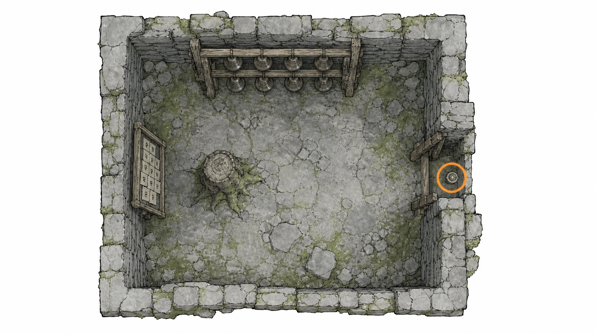
Ancient Ruin #3, Deepfog Basin Everfrost Ruins
Ancient Ruin
HintKeep exploring within Hernand; one ancient ruin belongs to this region.
WhereSearch the ruins northwest of Calphade Farmhouse.
Full detailNumber the four movable pillars from left to right, using the fixed left pillar as the target height. At the socket controlling pillars 2-4, make four clockwise movements. At the socket controlling pillars 1-3, make three clockwise movements. Finish at the socket linked to pillars 1 and 4 with one clockwise movement; all columns should then align.
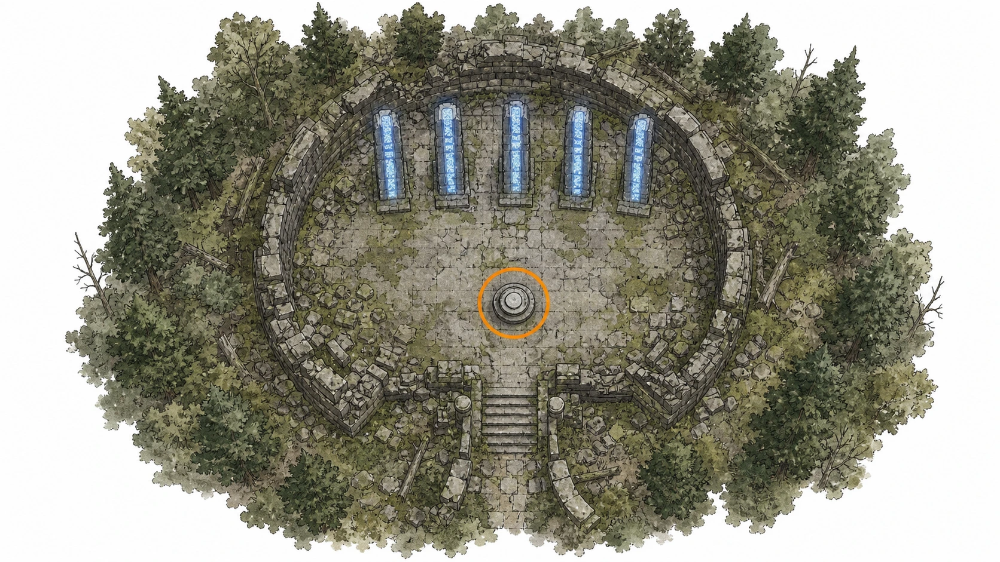
Ancient Ruin #4, Duskwood Hill Ruins
Ancient Ruin
HintKeep exploring within Hernand; one ancient ruin belongs to this region.
WhereSearch the ruins southeast of Warspike Spearmaker.
Full detailBurn away the vines with Blinding Flash or a brazier-lit arrow. Number the five tall pillars from left to right. Sword-Stab the small controller's socket for pillars 3-5 until those columns sit midway between pillars 1 and 2; use the 2-4 socket until pillars 3 and 4 match pillar 1; then use the 2-and-5 socket until every pillar is level. If the arrangement becomes unclear, leave the region and return to reset it.
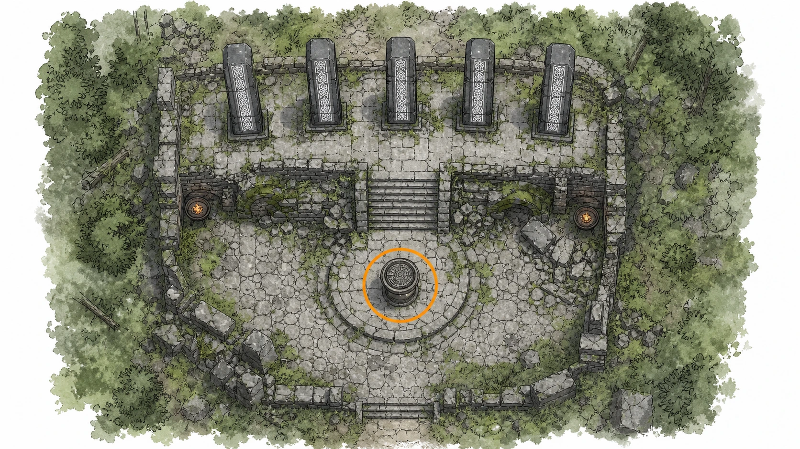
Ancient Ruin #7, Hunter's Cabin Ruins
Ancient Ruin
HintKeep exploring within Hernand; one ancient ruin belongs to this region.
WhereSearch the ruins southeast of Haunted Hill Hunter's Cabin.
Full detailSearch the graveyard around the sealed tomb and ignite every stone lantern. Once the last lantern is burning, the tomb door opens and the Cresset inside becomes accessible.
Ancient Ruin #11, Meandering Hills Ruins
Ancient Ruin
HintKeep exploring within Hernand; one ancient ruin belongs to this region.
WhereVisit the Meandering Hills Ruins in Hernand and inspect the stone-sealed entrance.
Full detailWhen normal progression teaches Nature's Grasp here, raise the slab sealing the entrance. Inside, strike the three circular panels with Force Palm in this order: center, left, right. The correct sequence opens access to the Cresset.
Ancient Ruin #12, Duskwood Waterside Ruins
Ancient Ruin
HintKeep exploring within Hernand; one ancient ruin belongs to this region.
WhereSearch the camp southwest of Duskwood Bandit Camp.
Full detailTake the loose white stone beside the Cresset and place it in the gap among the standing stones. Adjust it until the formation reads as one straight line of five stones; the completed alignment activates the ruin.
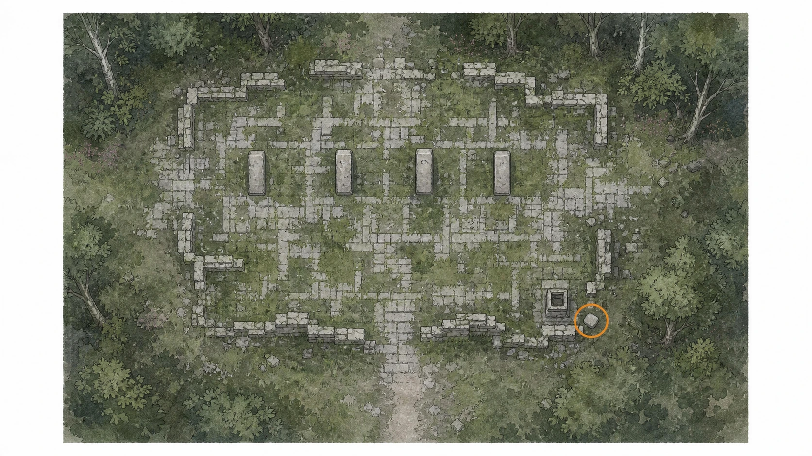
Ancient Ruin #14, Precipice of Echoes Ruins
Ancient Ruin
HintKeep exploring within Hernand; one ancient ruin belongs to this region.
WhereSearch the ruins south of Fort Perwin.
Full detailCross the opening tutorial row by walking three tiles forward. On the next grid, link each ordered symbol from the endpoint of the previous one, never jumping to a nonadjacent tile. Use every tile in the final grid without a mistake. The sequence is timed even though no clock is shown; if the plates sink and the door stays closed, restart and move through the planned route more quickly.
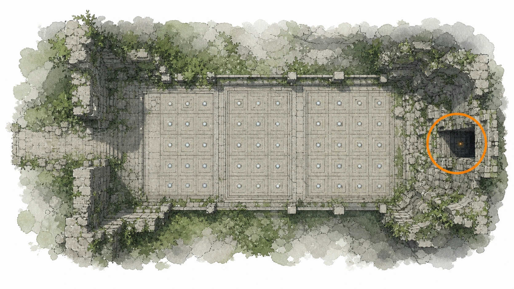
Ancient Ruin #15, Deepfog Basin Dragon Head Ruins
Ancient Ruin
HintKeep exploring within Hernand; one ancient ruin belongs to this region.
WhereSearch the ruins west of Thalwynd.
Full detailUse Sword Stab on the mural blocks to rotate and reposition them. Reassemble the picture so its borders and internal lines join cleanly across every block; the finished image opens the passage behind the dragon statue.
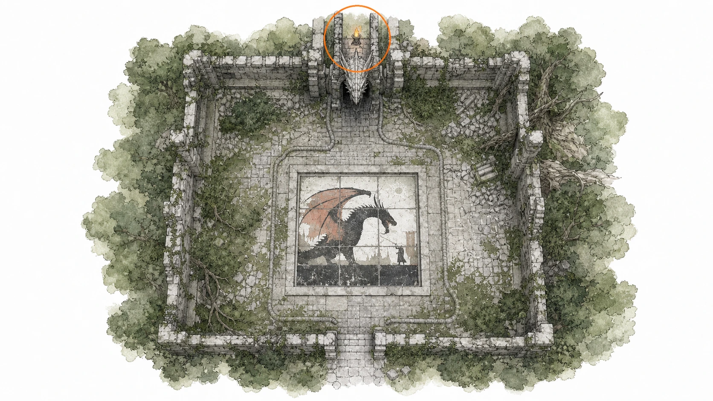
Ancient Ruin #21, Sunrise Plains Ruins
Ancient Ruin
HintKeep exploring within Hernand; one ancient ruin belongs to this region.
WhereSearch the forest south of Glenbright Manor.
Full detailBurn a route through the damaging vines if needed, then face southeast and number the four statues 1-4 from upper-left to lower-right. Turn statue 2 until it faces the center. Turn statue 1 until statue 3 faces inward. Finally turn statue 4 until statues 1 and 4 both face the center; this solves the linked mechanism.
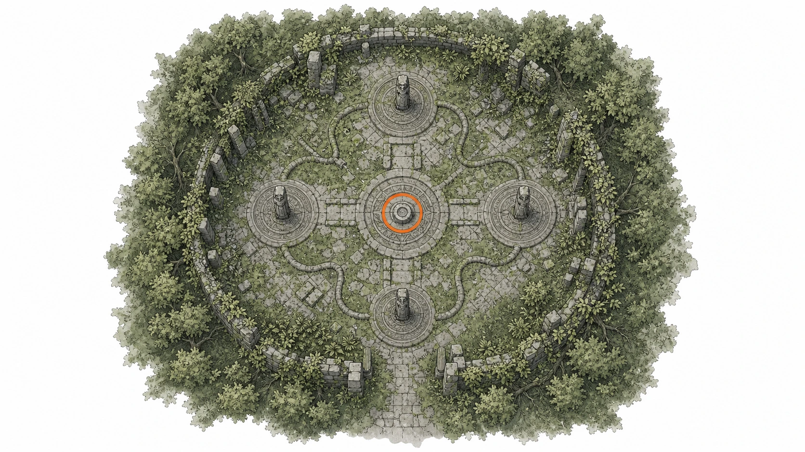
Ancient Ruin #23, Arboria Forest Ruins
Ancient Ruin
HintKeep exploring within Hernand; one ancient ruin belongs to this region.
WhereSearch the forest southwest of Arboria Castle.
Full detailSword-Stab each movable fountain pillar and rotate it until both of its spouts aim toward the basin's center. Repeat for every pillar; when all water paths converge inward, the Cresset activates.
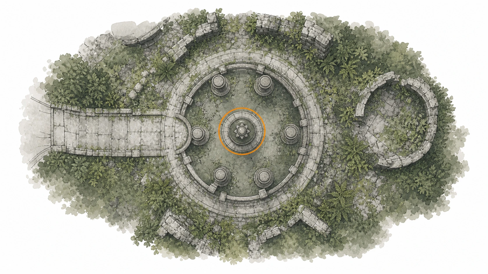
Ancient Ruin #27, Haunted Hill Ruins
Ancient Ruin
HintKeep exploring within Hernand; one ancient ruin belongs to this region.
WhereSearch the river east of Sanctum of Atonement.
Full detailIf Nature's Snare is still unavailable, observe the nearby projection to learn it. Cast the skill on both spinning components and raise each to its upper stop. With both water controls elevated, the flooded area empties and the Cresset activates.
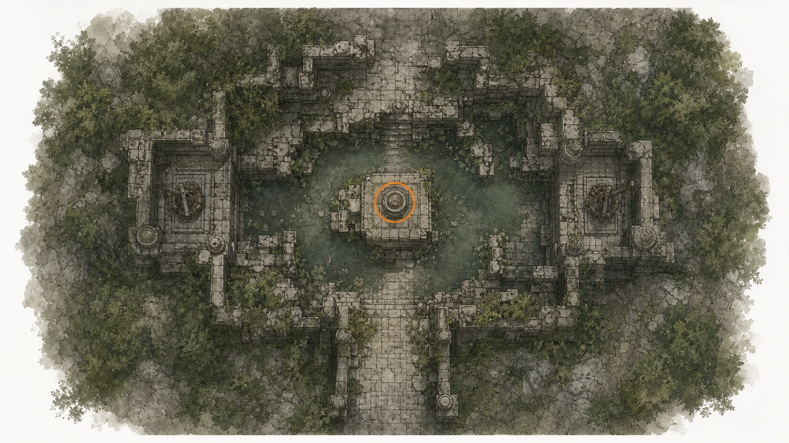
Ancient Ruin #28, Halssius Conflux Ruins
Ancient Ruin
HintKeep exploring within Hernand; one ancient ruin belongs to this region.
WhereSearch the lower cliff level southeast of St. Halssius's House of Healing.
Full detailMove the loose pillars away from the circular track before beginning. Sword-Stab the controller and turn clockwise until the first beam indicates the oval mirror. For the second phase, turn a short distance counterclockwise to include Scales, Harp, and Vase. Turn slightly farther counterclockwise for the last phase, enclosing Mirror, Scales, Harp, Vase, and both Horse symbols. The statue door opens after the third correct set.
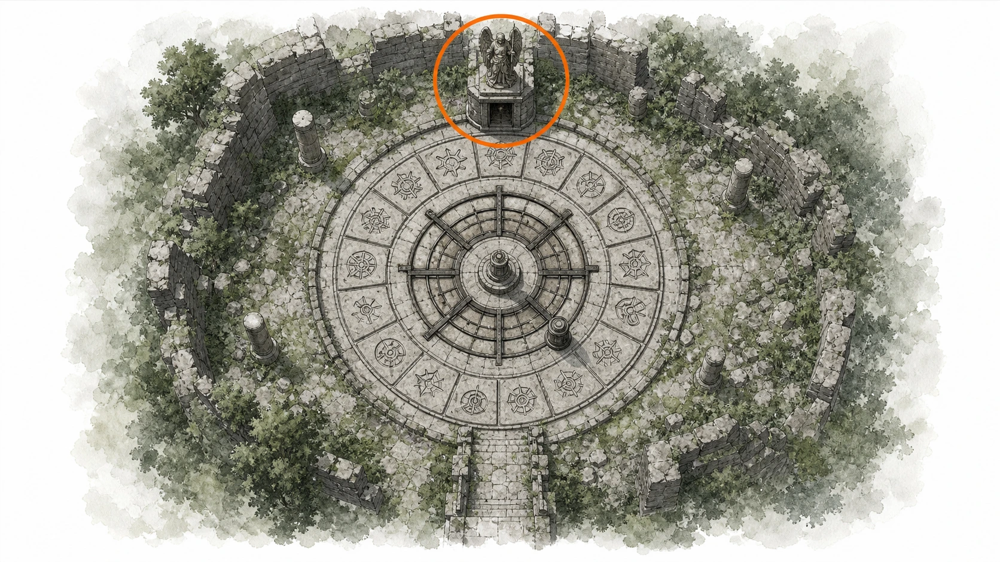
Ancient Ruin #30, Drakesfall Gorge Ruins
Ancient Ruin
HintKeep exploring within Hernand; one ancient ruin belongs to this region.
WhereSearch the castle southeast of Drakesfall Castle.
Full detailStep onto the western start platform. Advance toward the far statue only while its head is turned away; its blue eyes show when it is watching, and being seen resets your progress. First-person view makes the head movement easier to track. Reach the platform directly before the statue without moving during any watched interval.
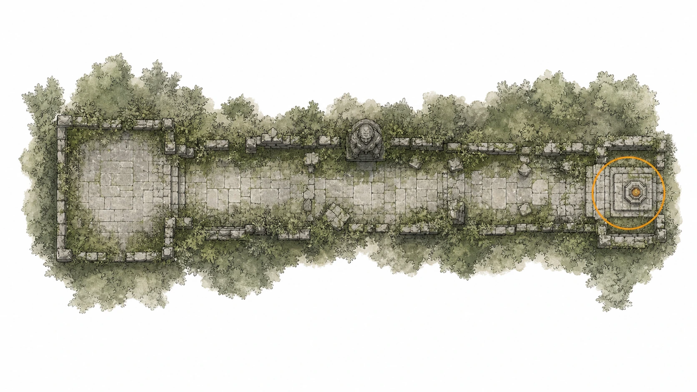
Ancient Ruin #32, Dragon's Stone Chambers Ruins
Ancient Ruin
HintKeep exploring within Hernand; one ancient ruin belongs to this region.
WhereSearch the camp southwest of Howling Hill camp.
Full detailPush the door-shaped center of the mural to enter. Facing the dragon statue, rotate the left disc until its sun is uppermost. Set the middle disc so its C-shaped mark points left and slightly upward. Set the right disc with its outermost spiral at lower-left. When all three match, the wall beneath the statue opens to the Cresset and Memories of Abundance.
Ancient Ruin #37, Azure Moon Labyrinth Ruins
Ancient Ruin
HintKeep exploring within Hernand; one ancient ruin belongs to this region.
WhereSearch the building around Phoniel Ranch.
Full detailInside Phoniel Ranch's wooden building, descend the ladder and follow the lower passage. Number each wall's four buttons from left to right. On the wall whose marks resemble F, press 2 and 3; on the wall whose marks resemble P, press 1, 3, and 4. The gate then opens to the Cresset and Memories of Tide.
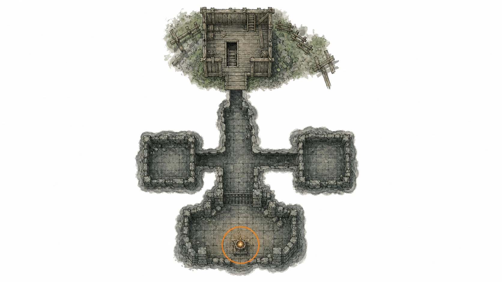
Bell #1, Toll of Hernand
Bell
HintKeep exploring within Hernand; one bell belongs to this region.
WhereThe Hernand bell is inside the clocktower in the northern part of Hernand town.
Full detailEnter or climb the northern clocktower, use its exterior handholds and interior floors to reach the bell chamber, then interact directly with the bell to ring it and reveal the surrounding map.
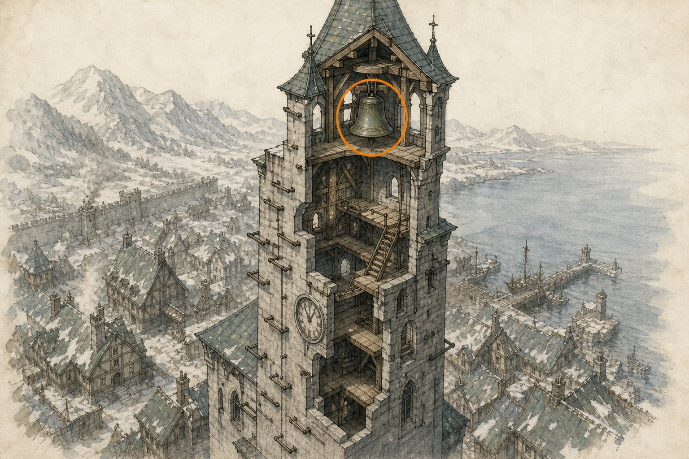
Bell #2, Toll of Scholastone
Bell
HintKeep exploring within Hernand; one bell belongs to this region.
WhereAtop Scholastone Institute, follow the garden path across the plaza to its end pagoda.
Full detailReach the mountain-top Scholastone Institute by its road or by climbing the surrounding slopes with aerial Force Palms. Cross the upper plaza, follow the garden path to the pagoda, climb into it, and interact with the bell.
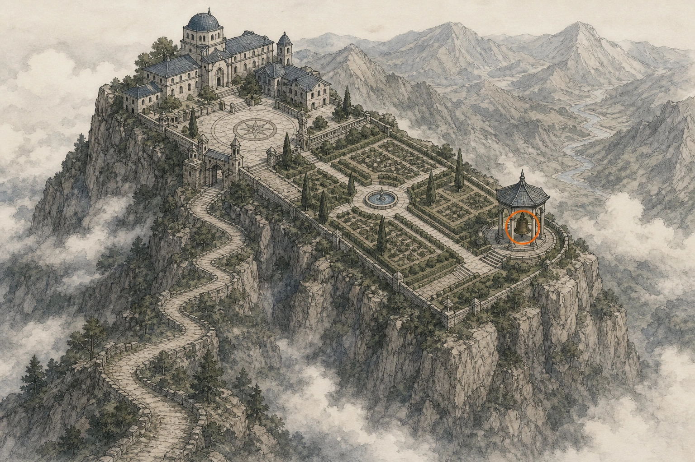
Bell #3, Toll of Calphade
Bell
HintKeep exploring within Hernand; one bell belongs to this region.
WhereThe Calphade bell is on the roof of the church in northern Hernand.
Full detailSAVE-BACKUP WARNING: Calphade temporarily becomes hostile during one progression window and the bell will not register then; ring it before that state begins or return after the area is calm. Climb the church exterior to its roof and interact with the bell.
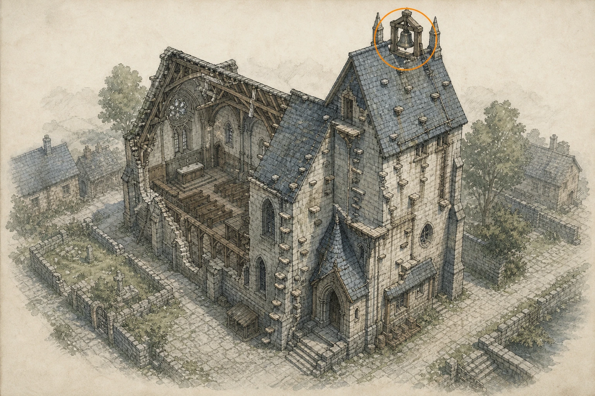
Constellation #11, Black Dragon
Constellation
HintKeep exploring within Hernand; one constellation belongs to this region.
WhereSearch the pond south of the pond.
Full detailImmediately west of the Spire of Insight, climb the rock just south of the pond. Use the slightly lower ledge at its northeastern corner, look southeast, and aim at the pattern's lower-left portion until the Black Dragon joins.
Legendary Animal #2, Rokade
Legendary Animal
HintKeep exploring within Hernand; one legendary animal belongs to this region.
WhereSearch the forest near Spire of Insight.
Full detailSearch the forest near Spire of Insight. Look within the nearby herd for the black horse. Mount it, counter its bucking until the resistance meter fills, then confirm that you want to tame and ride it; extra stamina makes the attempt safer.
Legendary Animal #4, Golden Tench
Legendary Animal
HintKeep exploring within Hernand; one legendary animal belongs to this region.
WhereSearch the river around Sunset Valley in Hernand for a conspicuously golden fish.
Full detailScan the Sunset Valley river from above until the bright gold body is visible, enter the water, swim directly alongside it, and use the hand-grab prompt. No rod or bait is required. Save before grabbing if you want protection against a rare registration failure.
Legendary Animal #9, Silver Fang
Legendary Animal
HintKeep exploring within Hernand; one legendary animal belongs to this region.
WhereAfter completing the large-wolf optional encounter, search Howling Hollow's cave among the returning wolf pack.
Full detailComplete the large-wolf optional encounter tied to Hernand's northern gate first. Return to Howling Hollow and look inside the cave for an elite minimap marker among ordinary wolves; if absent, search the surrounding hollow, then leave the region and return to reroll the spawn. Defeat and skin the silver wolf. Its fang can be exchanged at a witch to unlock the mount, and the hunt also awards its helm.
Maze #3, Ancient Rift Maze
Maze
HintKeep exploring within Hernand; one maze belongs to this region.
WhereSearch the camp northeast of Trovak Camp in northern Hernand.
Full detailApproach the Ancient Rift from the south. At the first door down-right, use Focused Light only on pillar 3, then press the control inside for an Engraved Stone. At the lower-left three-pillar door, light only pillar 1 and collect the second stone. At the remaining door, strike the far-left and far-right pillars twice each for the third. If an incorrect pillar changes a pattern, leave the region and return to reset it. At the lowest dead end, fit all three stones into the wall sockets.
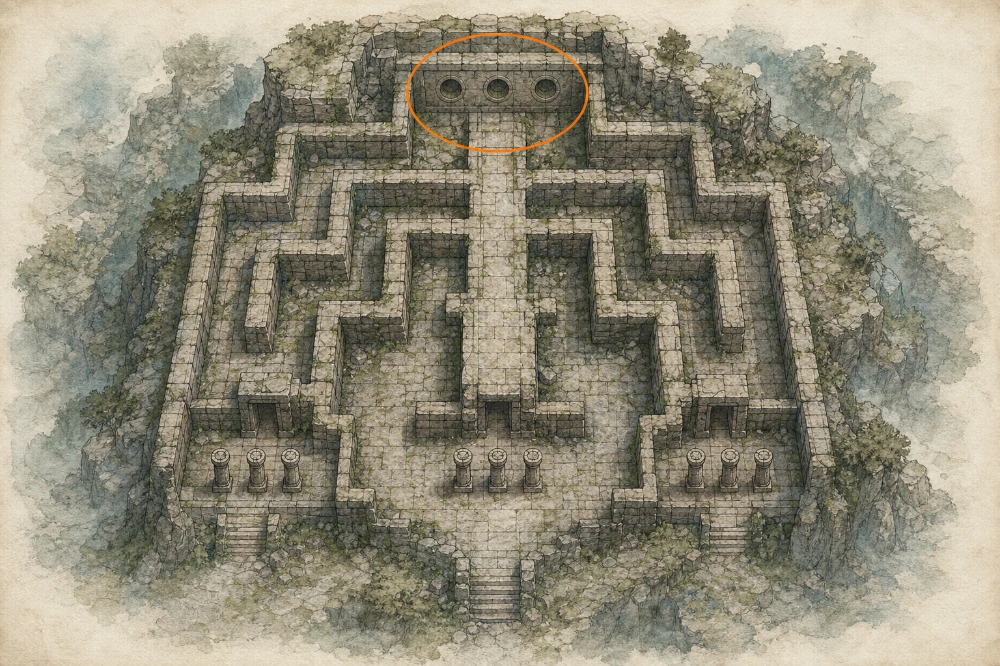
Duel Challenge 1
Activity
HintKeep exploring within Hernand; one activity belongs to this region.
WhereSearch the fighting pit south of City of Hernand.
Full detailAt the fight pit, open the weapon wheel and equip gloves only before speaking to the host. Win three consecutive unarmed bouts and then the fourth champion bout; any loss resets the streak. The activity remains available after its introductory visit, so an unfinished run is not permanently missed.
Duel Challenge 3
Activity
HintKeep exploring within Hernand; one activity belongs to this region.
WhereSearch the activity point around Scholastone Institute in Hernand.
Full detailEquip bare fists before talking to the Scholastone host. Only wrestling techniques count; win three consecutive matches, then beat the fourth champion match without leaving the sequence. Clothesline from the blue skill tree deals more damage than basic grapples, and additional Grappling upgrades improve it further. Quitting after a win discards the streak.
Duel Challenge 4
Activity
HintKeep exploring within Hernand; one activity belongs to this region.
WhereSearch the activity point northeast of Lioncrest Manor.
Full detailEquip an item explicitly classified as a spear or lance in the secondary slot; spear-like cannons and halberds are invalid. Remove armor with automatic damage effects, and do not add elemental effects, because either can forfeit a bout. Turning Slash is allowed. Win three contests consecutively and then the champion match. If you lack a spear, check ordinary enemy drops, camp Lost & Found, and your personal chest.
Mind Game Challenge 1
Activity
HintKeep exploring within Hernand; one activity belongs to this region.
WhereLook for children playing rock-paper-scissors in a major town such as Hernand.
Full detailChallenge children marked as environmental points in any major town. A match requires two winning rock-paper-scissors guesses, and each group can be played only once every few in-game days. Save before a match if you want to retry a loss, then accumulate three match wins; they may come from the same group on different days or from groups in separate towns.
Mind Game Challenge 2
Activity
HintKeep exploring within Hernand; one activity belongs to this region.
WherePlay Duo upstairs in Hernand's inn and at the larger table in Tashkalp; both tables are needed for every opponent-count condition.
Full detailWin three Duo rounds consecutively and also record wins against one, two, and three opponents. Use the Hernand table and Tashkalp's larger table; a caught cheat or bankrupt player can reduce the latter's opponent count. Compare each visible first stick with the possible totals, fold weak pairs, and press strong pairs with large bets. For a major advantage, earn the Deceiver's Fedora from the trusted arena mineral vendor and wear it to reveal every hand.
Shooting Challenge 1
Activity
HintKeep exploring within Hernand; one activity belongs to this region.
WhereVisit the archery contest at Lioncrest Manor in Hernand.
Full detailEnter as Kliff; the host will not run the archery contest for the other playable characters. Each match is a race to ten single targets. Keep the bow drawn and your reticle near the middle between spawns, sweep only far enough to acquire the next target, and release immediately. Win three matches during one uninterrupted session, then defeat the champion.
Shooting Challenge 2
Activity
HintKeep exploring within Hernand; one activity belongs to this region.
WhereSearch the activity point north of Lioncrest Manor.
Full detailEnter as Damiane; this firearm contest is unavailable to the other playable characters. Be first to shoot ten appearing targets, recentering after every hit so new targets require minimal horizontal movement. Win three consecutive rounds without leaving, then win the champion round. Opponent reaction speed varies, so retry the streak if a rival repeatedly fires at spawn.
Strength Challenge 1
Activity
HintKeep exploring within Hernand; one activity belongs to this region.
WhereUse the arm-wrestling table inside the inn at Hernand Castle.
Full detailChallenge the arm-wrestling table inside Hernand Castle's inn. Complete each input prompt rapidly, win three opponents consecutively, and then defeat the fourth opponent, the champion. A loss breaks the streak and requires starting again at the first opponent.
Strength Challenge 2
Activity
HintKeep exploring within Hernand; one activity belongs to this region.
WhereUse the arm-wrestling table inside Calphade's tavern.
Full detailThe Claphade table opens before its champion does. Complete the available Scattered Embers fishing assignment and its subsequent pair of strength-related assignments; after those are finished, return to the tavern. Win three arm-wrestling matches consecutively, then beat the champion in match four.
Optional Encounter #2
Optional Encounter
HintKeep exploring within Hernand; one optional encounter belongs to this region.
WhereComplete Hernand's house and town faction work, then take the northern-gate assignment and follow it west toward Howling Hollow.
Full detailFinish enough Hernand house and settlement quests to unlock the Legendary Wolf group, speak with the soldier at Hernand North Gate, and follow the nearby marker. Clear the surrounding wolves, then block or parry the large target's melee strings. After its first blue bar empties, head west toward Howling Hollow and use the lantern if the trail continues beyond the cave. Win the second encounter for Shadow Claw, an Abyss Artifact, and the item that reveals legendary-animal knowledge.
Optional Encounter #5
Optional Encounter
HintKeep exploring within Hernand; one optional encounter belongs to this region.
WhereAdvance the Roberts and Alfonso house assignments until the Arboria Castle encounter appears in the Celeste section.
Full detailComplete the Roberts and Alfonso faction sequences; if the Arboria Castle assignment does not appear, clear the available Serkis one-offs as well. Ignore or safely detonate the small explosive spiders outside and reach the main chamber. Fire attacks knock the wall-climbing target down, creating the safest damage windows; avoid its poison spit and summoned spider clusters. Victory grants Queen's Fans, an Abyss Artifact, and Stirrups of the Open Sky.
Sanctum #1, Sanctum of Absolution
Sanctum
HintKeep exploring within Hernand; one sanctum belongs to this region.
WhereFind the sanctum south of the City of Hernand and approach from its eastern Nexus side.
Full detailAccept the corresponding sanctum request, enter from the eastern Nexus side, and clear the occupation completely. From the interior hall, drop to the lower outside device; the missing pillar piece is just inside the northern doorway on the left. Set it over the broken column and jump-Force-Palm it into place. Back in the hall, break the jar pile to expose the cube, carry it outside with Axiom Force, insert it in the device's eastern socket, then stand in the illuminated square.
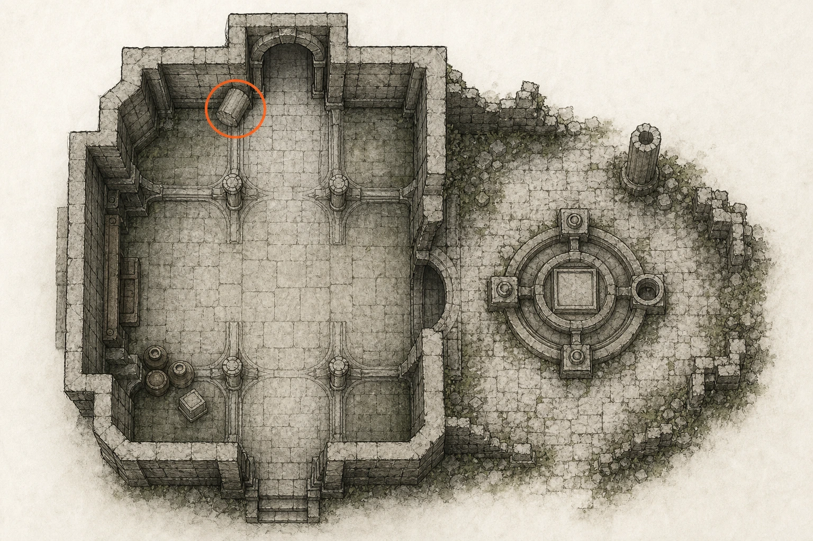
Sanctum #2, Sanctum of Temperance
Sanctum
HintKeep exploring within Hernand; one sanctum belongs to this region.
WhereSearch the cliff around Unicorn Cliff.
Full detailAccept the corresponding request and clear the sanctum from the northern Nexus road. Return to that entrance, climb the left stairs, and take the cube from the breach in the wall; use the Kuku Pot if carrying it outside is awkward. Insert it into the device's eastern socket. Burn the foliage covering the small building north of the device, bring out the pillar segment, align it with the northeastern broken column, jump-Force-Palm it into place, and use the lit square.
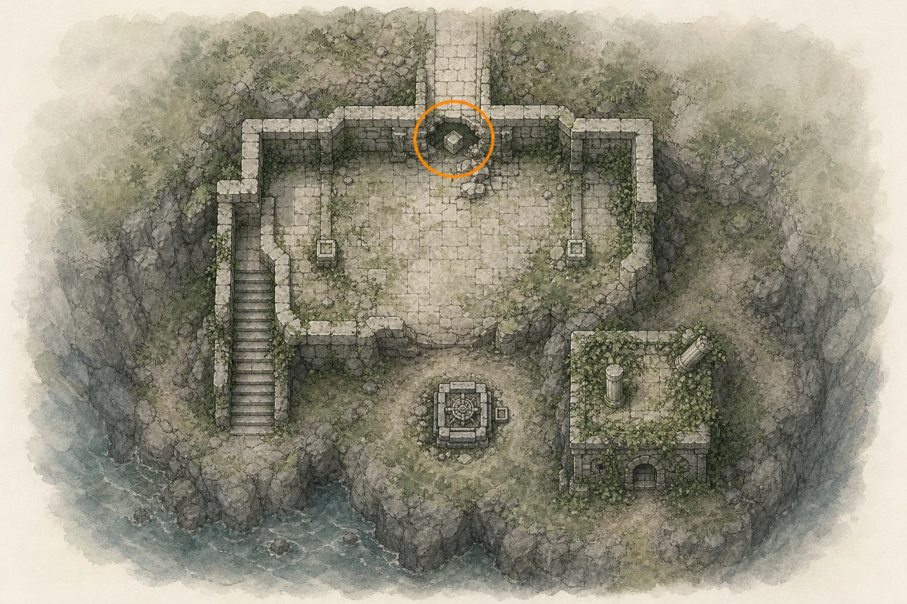
Sanctum #3, Sanctum of Penitence
Sanctum
HintKeep exploring within Hernand; one sanctum belongs to this region.
WhereSearch the sanctum around The Ironwood.
Full detailAccept the corresponding request and clear the sanctum from the north. Face the rear wall and stairs, climb to the roof, turn left, descend the small eastern stairs and then the stairs immediately right. Pull the pillar segment from the hole on the left, carry it to the northern device, align it over the northern broken column, and secure it with a jumping Force Palm.
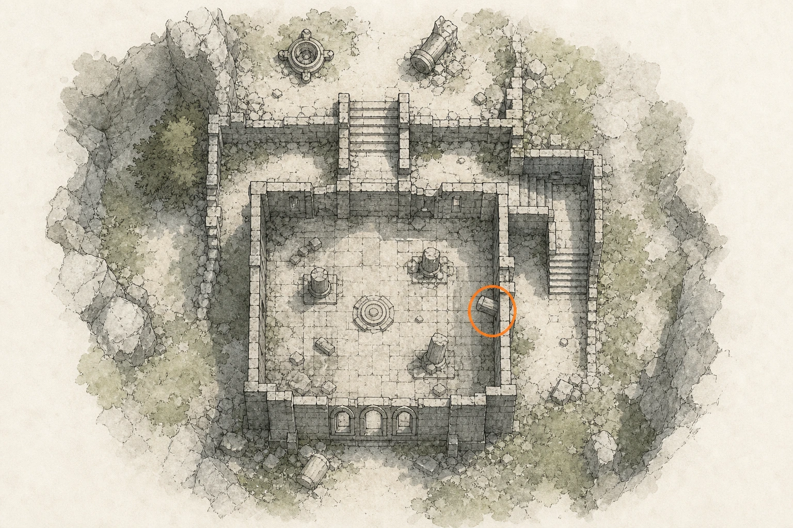
Sanctum #4, Sanctum of Benediction
Sanctum
HintKeep exploring within Hernand; one sanctum belongs to this region.
WhereFind the sanctum in western Hernand and use the southern road into the site.
Full detailAccept the corresponding request and clear the sanctum from the southern road. From the rooftop device, descend the right-hand stairs and light the torch beside the lower door; the pillar segment is immediately left inside. Fit it to the device's northeastern broken column with a jumping Force Palm. At the bottom of the western steps, take the nearest right-hand doorway to find the cube; carry it back, seat it in the device's western socket, and step into the lit square.
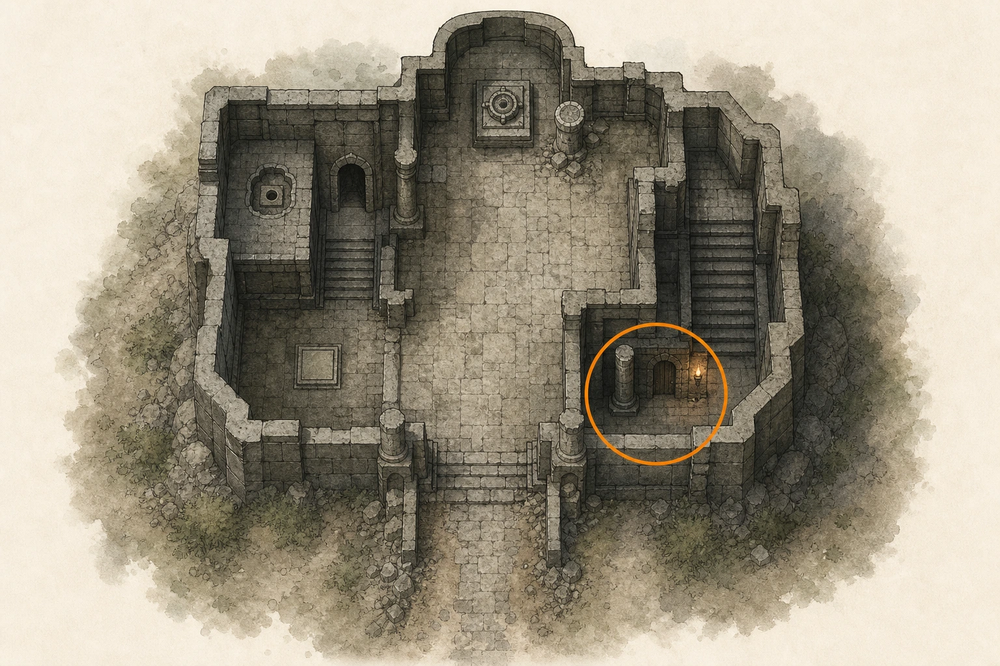
Sanctum #7, Sanctum of Deliverance
Sanctum
HintKeep exploring within Hernand; one sanctum belongs to this region.
WhereSearch the sanctum around Stormtalon Ridge.
Full detailAccept the corresponding request and clear the occupation from the southern approach. Descend the right staircase, take the first lower doorway on the left, and pull the pillar piece through the ceiling crack with Axiom Force; fit it to the device's northern broken column. Climb the short eastern wall to the roof, collapse the weak section, and seal the cube below into the Kuku Pot. At the north device, discard Reactor Core IV, insert it into the northwestern socket, and use the lit square.
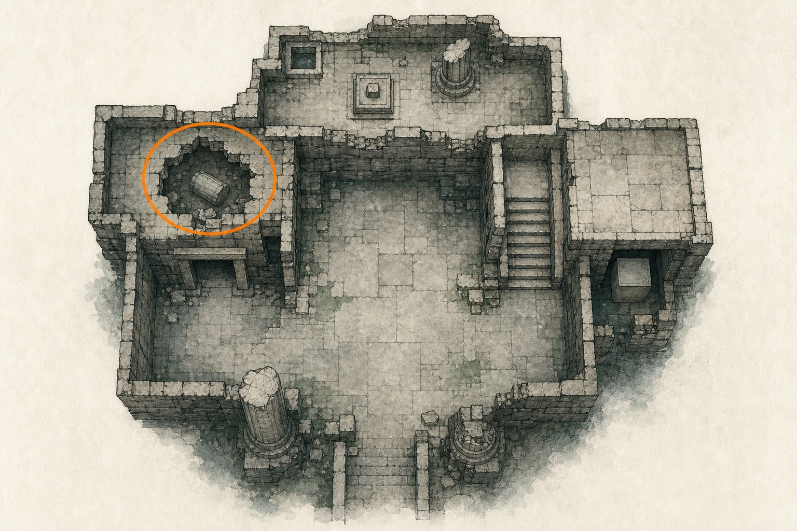
Sanctum #8, Sanctum of Atonement
Sanctum
HintKeep exploring within Hernand; one sanctum belongs to this region.
WhereSearch the sanctum around Haunted Hill.
Full detailAccept the corresponding request, enter from the east, and clear the sanctum. Pass through both arches; seal the oversized floating pillar piece inside the Kuku Pot. Use the lower opening in the wall to the right, retrieve the cube from the upper-right recess, and carry it to the southwestern device. Insert it into the eastern socket. Discard Fusion Reactor Core LIV-I from the pot, align it over the device's northern broken column, jump-Force-Palm it home, then stand in the lit square.
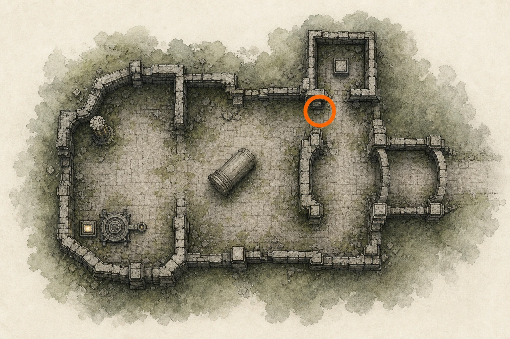
Sealed Abyss Artifact, Above the Law 1 (missable)
Sealed Artifact
HintKeep exploring within Hernand; one sealed artifact belongs to this region.
WhereSearch the intersection east of Halssius Apothecary.
Full detailEquip a mask and work between 21:00 and 04:00. A banner immediately left of Hernand town's central Nexus is repeatable: move beyond the soldiers' sight, shoot the hanging pike with an arrow, teleport back to the Nexus to respawn it, and repeat until ten are destroyed without any detection.
Sealed Abyss Artifact, Above the Law 2 (missable)
Sealed Artifact
HintKeep exploring within Hernand; one sealed artifact belongs to this region.
WhereSearch the road northwest of Torchlight Beacon.
Full detailExpand Greymane Camp through Grounds of the Sunrise and the ranch-building step in Gathered Will, then complete the ranch tutorial request. Carry goats from the nearby herd to the ranch's middle stall and sell three to Bram. Extra livestock goats obtained elsewhere also count.
Sealed Abyss Artifact, Above the Law 3 (missable)
Sealed Artifact
HintKeep exploring within Hernand; one sealed artifact belongs to this region.
WhereSearch the road northeast of Calphade Beacon.
Full detailComplete the Greymane wagon-fence introduction in Scattered Embers so Hernand's fence is marked. Steal a wagon, break pursuit, and drive it to that fence for sale; repeat until three wagons have been sold. The introductory delivery counts if performed after the seal was collected.
Sealed Abyss Artifact, Above the Law 6 (missable)
Sealed Artifact
HintKeep exploring within Hernand; one sealed artifact belongs to this region.
WhereSearch the road west of Calphade Farmhouse.
Full detailAfter collecting the artifact, sell ten stolen pigs to any livestock fence. A repeatable route begins at the pig pen in the field south of Muckroot Ranch: take one pig, leave the suspicion zone, walk it north to the Livestock Black Market, and sell it. Mounting a horse abandons the carried animal, so repeat the route on foot ten times.
Sealed Abyss Artifact, Above the Law 8 (missable)
Sealed Artifact
HintKeep exploring within Hernand; one sealed artifact belongs to this region.
WhereSearch the shrine west of Vellua.
Full detailOpen twenty locked doors using twenty keys; keys are universal, not door-specific. Loot bandits, especially with a fully trusted dog collecting drops, or buy three daily from each Back Alley Shop for 20 copper apiece. Sleep past midnight to refresh shop inventory. Hernand's townhouses and castle provide many nearby locked doors; each successful unlock advances the seal.
Sealed Abyss Artifact, Battle 6
Sealed Artifact
HintKeep exploring within Hernand; one sealed artifact belongs to this region.
WhereSearch the intersection north of Calphade Outpost.
Full detailSAVE-BACKUP WARNING: the easiest controlled attempt occurs at a fortress defense with siege towers. Reach the southern wall cannon without thinning the enemies, shoot the upper part of the nearest siege tower so its occupants fall together, then fire into the clustered survivors for five simultaneous cannon defeats. Reload if fewer register. The cannons at Fort Windridge in Delesyia are a repeatable but harder fallback.
Sealed Abyss Artifact, Battle 7
Sealed Artifact
HintKeep exploring within Hernand; one sealed artifact belongs to this region.
WhereSearch the road southwest of Reedfield Graves.
Full detailSwitch Force Palm to its Healing form, then strike friendly combatants with it three times when they need recovery. The healing variant is available from the point Force Palm is learned; change the held skill's mode before using it so ordinary offensive palms do not count.
Sealed Abyss Artifact, Battle 10
Sealed Artifact
HintKeep exploring within Hernand; one sealed artifact belongs to this region.
WhereSearch the intersection south of Sanctum of Penitence.
Full detailUnequip every weapon and use bare-fist attacks to defeat three enemies within sixty seconds, measured from the first defeat. Gather three weak Hernand bandits close together and soften none of them with equipment or automatic armor effects before beginning the finishing sequence.
Sealed Abyss Artifact, Bow 1
Sealed Artifact
HintKeep exploring within Hernand; one sealed artifact belongs to this region.
WhereSearch the intersection west of Glenbright Farm.
Full detailAs Kliff, defeat five enemies with bow damage inside sixty seconds. Marksmanship upgrades, a refined bow, and Charged Shot shorten each kill; soften or group weak enemies before the first defeat because that starts the timer.
Sealed Abyss Artifact, Bow 2
Sealed Artifact
HintKeep exploring within Hernand; one sealed artifact belongs to this region.
WhereSearch the road southeast of Claphade Outpost.
Full detailAs Kliff, defeat seven enemies consecutively with standard arrows only. Poison, explosive, or any other alternate ammunition breaks the condition, so select the basic arrow type before the first kill and do not change it until all seven register. Weak clustered enemies make ammunition and interruption management easier.
Sealed Abyss Artifact, Challenges and Changes 1
Sealed Artifact
HintKeep exploring within Hernand; one sealed artifact belongs to this region.
WhereSearch the intersection south of the A in HERNAND.
Full detailTeleport to any restored flying Abyss through the sky-map view, jump over its edge, and accelerate the descent continuously. Touch ordinary ground within thirty seconds of leaving the island. Choose an Abyss over open terrain so cliffs, water, or intervening platforms cannot delay the landing.
Sealed Abyss Artifact, Challenges and Changes 3
Sealed Artifact
HintKeep exploring within Hernand; one sealed artifact belongs to this region.
WhereSearch the intersection northwest of Phoniel Ranch.
Full detailRecruit twenty Greymanes into Howling Hill Camp. Continue the camp faction work through Embers of Return and Gathered Will; the fourth Gathered Will assignment pushes the roster beyond twenty. Only members actually recruited to camp count, not friendly NPCs met elsewhere.
Sealed Abyss Artifact, Challenges and Changes 9
Sealed Artifact
HintKeep exploring within Hernand; one sealed artifact belongs to this region.
WhereSearch the intersection northwest of Wild Raiders Camp.
Full detailPlay Duo at Tashkalp's larger table until an opponent cheats. During the draw, a cheater pulls their hand upward toward the throat; a fair draw moves sideways. Enter the blue observation view when prompted and choose Accuse while that animation is occurring. If the tutorial already appeared, watch every opponent's hand manually.
Sealed Abyss Artifact, Gun 5
Sealed Artifact
HintKeep exploring within Hernand; one sealed artifact belongs to this region.
WhereSearch the intersection northwest of Ruined Chapel.
Full detailAs Damiane, record three defeats with each required firing style: ordinary shots, either Evasive or Focused Evasive shots, and shots fired while airborne. Track the three groups separately. For the aerial set, jump and use Focused Shot to mark weak enemies before releasing during the same airtime; landing before the bullets fire may invalidate that kill.
Sealed Abyss Artifact, Horse 4
Sealed Artifact
HintKeep exploring within Hernand; one sealed artifact belongs to this region.
WhereSearch the road north of Sunset Valley.
Full detailBegin mounted at Sunset Valley and reach Varnia within forty minutes without dismounting; leaving the saddle resets the attempt. A level-5 horse with strong stamina is safest, with Royler offering excellent base speed and endurance. Follow roads, manage sprint reserves, and avoid hostile clusters that can knock you off. A clean route can finish well inside the limit.
Sealed Abyss Artifact, Horse 7
Sealed Artifact
HintKeep exploring within Hernand; one sealed artifact belongs to this region.
WhereSearch the intersection west of THE IRONWOOD text on map.
Full detailRide each required breed for at least 100 meters: buy Priden south of Delesyia city; use Camora or a companion's default Brianto; buy Numont in Tommaso; buy Elantrima north of Calphade or in friendly Pailune. Stolen and borrowed horses count, so keeping each mount is unnecessary.
Sealed Abyss Artifact, Hunting 1
Sealed Artifact
HintKeep exploring within Hernand; one sealed artifact belongs to this region.
WhereSearch the road northwest of Karin Quarry Rest Area.
Full detailApproach living birds closely and hold the interaction prompt to pick them up. Carry five different birds; dropping and recapturing the same individual does not add another count. Calm settlement birds are easier than flocks that immediately take flight.
Sealed Abyss Artifact, Life 8
Sealed Artifact
HintKeep exploring within Hernand; one sealed artifact belongs to this region.
WhereSearch the road north of Sunset Valley.
Full detailVisit any smithy with the required materials and craft at least one one-handed sword and one bow after the artifact is active. Hernand town's central blacksmith is a convenient choice and appears as an environmental point once discovered. Both crafts are required; purchasing finished weapons does not satisfy the condition.
Sealed Abyss Artifact, Operation 4
Sealed Artifact
HintKeep exploring within Hernand; one sealed artifact belongs to this region.
WhereSearch the seal site north of Hernand Watchtower.
Full detailGather thirty weak enemies in a large Hernand encampment and begin the sixty-second window with the first defeat. Use a wide multi-target weapon or secondary heavy weapon rather than single-target sword strings, and pre-position the crowd before killing anyone.
Sealed Abyss Artifact, Operation 6
Sealed Artifact
HintKeep exploring within Hernand; one sealed artifact belongs to this region.
WhereSearch the road northeast of Vilkom Outpost.
Full detailArrange three unaware enemies within reach, then assassinate all three within one minute of the first. You can lure them apart, escape detection, and return after they settle. Storm Veil from Wind provides an easier method: cast it inside a group and assassinate coughing enemies before visibility returns.
Sealed Abyss Artifact, Operation 7 (missable)
Sealed Artifact
HintKeep exploring within Hernand; one sealed artifact belongs to this region.
WhereSearch the shrine west of Roothold.
Full detailSAVE-BACKUP WARNING: finish this before clearing every One-Eyed Jackal opportunity. Buy the Black Bear's Leather Helm from Pailune's tailor once it enters stock, equip it, and defeat ten One-Eyed Jackals while wearing it. Whispering Forest Dock supplies enough if still hostile; later mixed Black Bear groups and the faction assignment concerning remaining Jackals are fallback spawns. After all such content is cleared, no reliable replacement population is known.
Sealed Abyss Artifact, Rapier and Shield 1
Sealed Artifact
HintKeep exploring within Hernand; one sealed artifact belongs to this region.
WhereSearch the road south of Meshley Trapsmith.
Full detailAs Damiane, defeat five enemies with rapier damage within sixty seconds, beginning from the first defeat. Gather weak targets and soften them with rapier strikes before the timer begins, then finish all five without switching weapons.
Sealed Abyss Artifact, Shield 1
Sealed Artifact
HintKeep exploring within Hernand; one sealed artifact belongs to this region.
WhereSearch the intersection north of Hernand Royal Trading Post.
Full detailGuard with Kliff's shield, then use Shield Bash to deal the finishing damage to three enemies. Soften targets first with shield bashes or non-damaging setup, and ensure another weapon or passive effect does not claim the kills.
Sealed Abyss Artifact, Shield 2
Sealed Artifact
HintKeep exploring within Hernand; one sealed artifact belongs to this region.
WhereSearch the road north of Kharonso.
Full detailFace one or more archers with Kliff's shield raised and let ten arrows strike the guarded surface. Maintain enough stamina and angle directly toward the shooters; arrows that miss or hit from behind do not count.
Sealed Abyss Artifact, Shield 3
Sealed Artifact
HintKeep exploring within Hernand; one sealed artifact belongs to this region.
WhereFollow the southeastbound road leaving the Sanctum of Benediction.
Full detailGroup three enemies shoulder-to-shoulder, hold guard, and release Shield Bash into the center of the group. Its broad sweep must contact all three from the same bash; a narrow passage helps maintain the formation.
Sealed Abyss Artifact, Shield 4
Sealed Artifact
HintKeep exploring within Hernand; one sealed artifact belongs to this region.
WhereSearch the intersection east of Embernest Beacon.
Full detailDefeat five enemies consecutively with shield damage while taking no damage. Remove archers first, isolate weak melee opponents, and finish each with Shield Bash. There is no time limit, so reposition safely between kills; any received hit resets the clean sequence.
Sealed Abyss Artifact, Shield 6
Sealed Artifact
HintKeep exploring within Hernand; one sealed artifact belongs to this region.
WhereSearch the westbound road from Calphade South Gate, just before the river bridge.
Full detailUnlock Charge at level 3 of Kliff's Armed Combat branch. While guarding, trigger the double-input sprint and collide with ten different enemies within one minute. Use a large camp and run through a packed line; repeated hits on one target may not advance the total.
Sealed Abyss Artifact, Spear 1
Sealed Artifact
HintKeep exploring within Hernand; one sealed artifact belongs to this region.
WhereSearch the intersection southeast of Calphade Gate.
Full detailStand close to a group with a spear equipped and parry incoming attacks. The parry's counter sweep can contact several enemies at once, and each contact advances the total. Accumulate fifteen counterattack hits within thirty seconds.
Sealed Abyss Artifact, Spear 2
Sealed Artifact
HintKeep exploring within Hernand; one sealed artifact belongs to this region.
WhereSearch the shrine around Greymane Nas River Shrine.
Full detailEnter a dense group with a spear and continuously use its rapid basic poke chain. Keep rotating through nearby targets so attacks never whiff, and accumulate fifty hits within thirty seconds; kills are unnecessary.
Sealed Abyss Artifact, Spear 3
Sealed Artifact
HintKeep exploring within Hernand; one sealed artifact belongs to this region.
WhereSearch the intersection west of Hook Rapids Hearth.
Full detailGroup and soften five weak enemies, then use the spear's Stab attack to finish them within fifteen seconds of the first kill. Every defeat must be credited to Stab rather than ordinary spear attacks or passive effects.
Sealed Abyss Artifact, Spear 5
Sealed Artifact
HintKeep exploring within Hernand; one sealed artifact belongs to this region.
WhereSearch the intersection west of Bradenfern Farm.
Full detailDespite the displayed wording, the verified condition is five consecutive spear defeats while remaining at full health; enemy weapon types do not matter. Remove ranged attackers first, then isolate weak foes and finish each with a spear without taking any damage. There is no time limit, so recover positioning between enemies without risking the health condition.
Sealed Abyss Artifact, Sword 1
Sealed Artifact
HintKeep exploring within Hernand; one sealed artifact belongs to this region.
WhereSearch the road north of Hernand Castle.
Full detailEquip any sword, group or soften three weak unshielded enemies, then defeat all three within thirty seconds of the first kill. Heavy attacks and weapon refinement shorten the sequence.
Sealed Abyss Artifact, Sword 2
Sealed Artifact
HintKeep exploring within Hernand; one sealed artifact belongs to this region.
WhereSearch the shrine south of Spire of Insight.
Full detailWith a one-handed sword equipped, cluster and weaken three enemies, then release a charged Turning Slash so the same wide swing defeats all three. This can be completed alongside the dedicated Turning Slash seal.
Sealed Abyss Artifact, Sword 3
Sealed Artifact
HintKeep exploring within Hernand; one sealed artifact belongs to this region.
WhereSearch the intersection near Goldleaf Tradepost.
Full detailDefeat three enemies consecutively with sword damage without taking any damage. Isolate weak targets, remove archers and passive offensive gear, and use upgraded heavy attacks. There is no time limit, but any received hit resets the clean chain.
Sealed Abyss Artifact, Sword 4
Sealed Artifact
HintKeep exploring within Hernand; one sealed artifact belongs to this region.
WhereSearch the road northwest of Kilnden Workshop.
Full detailUnlock Turning Slash in Kliff's blue skill tree, cluster at least three weak enemies, then fully charge the wide sword swing and release it so the same attack defeats all three. Damage them beforehand if necessary, but avoid killing one early or scattering the group before the charged strike lands.
Sealed Abyss Artifact, Training 1
Sealed Artifact
HintKeep exploring within Hernand; one sealed artifact belongs to this region.
WhereSearch the road northeast of Pororin.
Full detailBuy Kliff's blue-tree wrestling skills, such as Clothesline, equip bare hands, and defeat three opponents with wrestling or unarmed skill damage within one minute. Start among weak enemies and ensure weapon or passive effects do not take the finishing blows.
Sealed Abyss Artifact, Training 3
Sealed Artifact
HintKeep exploring within Hernand; one sealed artifact belongs to this region.
WhereSearch the intersection west of Bloomwood Ranch.
Full detailFind a long, uninterrupted downhill slope. Sprint to build speed, press crouch to begin sliding, and remain in the same slide for fifty meters without hitting terrain, standing, or transitioning into a fall.
Sealed Abyss Artifact, Training 4
Sealed Artifact
HintKeep exploring within Hernand; one sealed artifact belongs to this region.
WhereSearch the end of the short road climbing the cliffs from Fort Warspike.
Full detailEquip a banner pike, obtainable at some friendly camps or from regional Contribution Shops. Double-tap jump to pole-vault and repeat until five vaults register within thirty seconds. Use flat open ground and begin each input as soon as the prior landing finishes.
Sealed Abyss Artifact, Training 5
Sealed Artifact
HintKeep exploring within Hernand; one sealed artifact belongs to this region.
WhereSearch the road west of UNICORN CLIFF text on map.
Full detailBalance-walk ten meters in one direction along any narrow surface. A rope works, but roof ridges and suitable thin fence tops also count. Step onto a long uninterrupted section, slow your movement enough to maintain balance, and avoid dropping or reversing direction before the distance registers.
Sealed Abyss Artifact, Two-Handed Weapon 1
Sealed Artifact
HintKeep exploring within Hernand; one sealed artifact belongs to this region.
WhereSearch the road west of Drakesfall Watchtower.
Full detailLower Kliff below half health, equip a longsword, group three enemies, and hit all three with one swing. Spinning Slash is the easiest choice because its arc is wide. Remove passive armor effects that might kill a target early, keep health under the threshold until impact, and use weak enemies so the setup remains controllable.
Sealed Abyss Artifact, Two-Handed Weapon 3
Sealed Artifact
HintKeep exploring within Hernand; one sealed artifact belongs to this region.
WhereSearch the road south of Hernandian Ruins.
Full detailAs Kliff with a longsword, repeatedly use Turning Slash against a dense group. Its broad swing knocks most ordinary enemies backward; register ten knockbacks within thirty seconds, reusing surviving targets if needed.
Sealed Abyss Artifact, Two-Handed Weapon 4
Sealed Artifact
HintKeep exploring within Hernand; one sealed artifact belongs to this region.
WhereSearch the road southeast of Fort Perwin.
Full detailAs Oongka, equip a two-handed club or axe and accumulate thirty enemy contacts within thirty seconds. Rapid ordinary swings work, and sprinting directly into clustered enemies while holding the weapon also registers hits, making a packed camp the easiest setup.
Secret Place #1, Precipice of Silence
Secret Place
HintKeep exploring within Hernand; one secret place belongs to this region.
WhereClimb the mountain peak northwest of the Spire of the Stars; the Cresset is at the summit.
Full detailThe easiest approach is to glide from Haven Past the Snowfall, Secret Place #20, toward the peak northwest of the Spire of the Stars. Correct your height with aerial Force Palms, land at the summit, and activate the exposed Cresset.
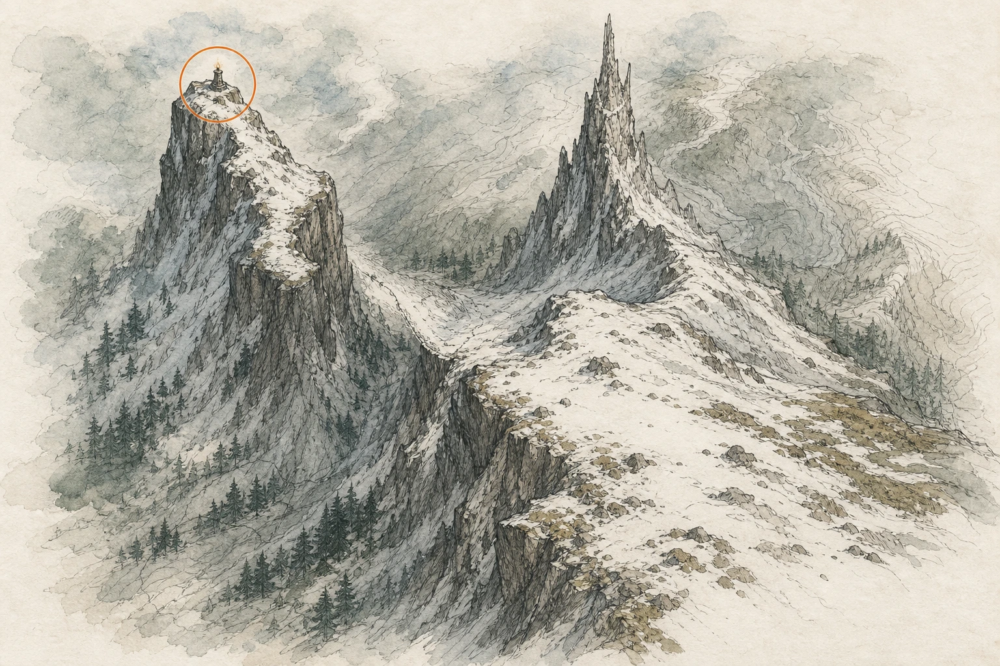
Secret Place #7, A Detailed Glance
Secret Place
HintKeep exploring within Hernand; one secret place belongs to this region.
WhereReach the cliff top southwest of Sunset Valley at Hernand's outer map edge.
Full detailApproach Sunset Valley from the northeast, climb the cliffs running southwest toward the boundary, and stay on the highest ridge. Use aerial Force Palms where the slope becomes sheer, then activate the Cresset on the topmost ledge.
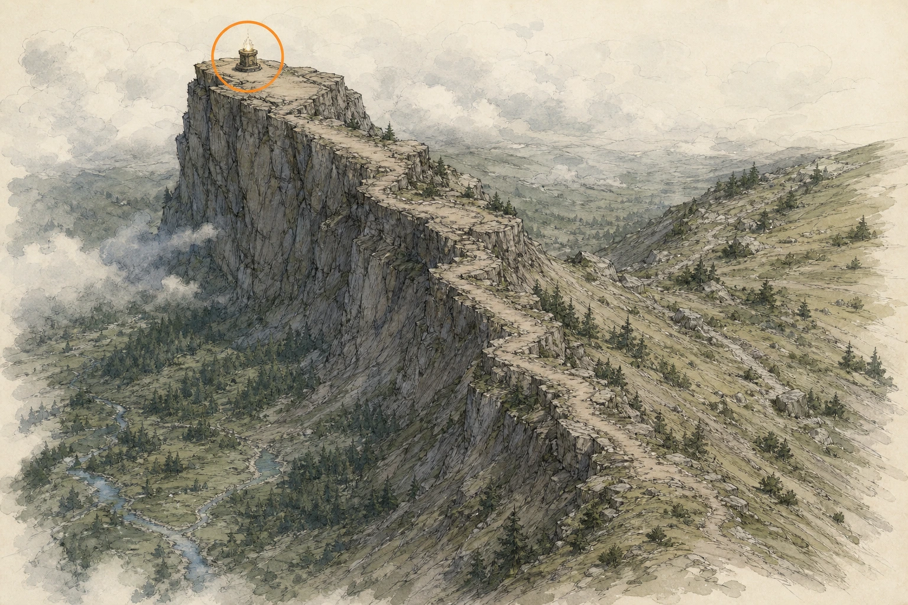
Secret Place #8, Giant Hand of Everfrost
Secret Place
HintKeep exploring within Hernand; one secret place belongs to this region.
WhereClimb the mountain northeast of the Sanctum of Benediction, immediately west of the R in HERNAND.
Full detailUse the R in the HERNAND map label to identify the mountain immediately west of it. Climb from the gentler western or southern face, boost over the final steep shelf, and activate the Cresset on the summit northeast of the Sanctum of Benediction.
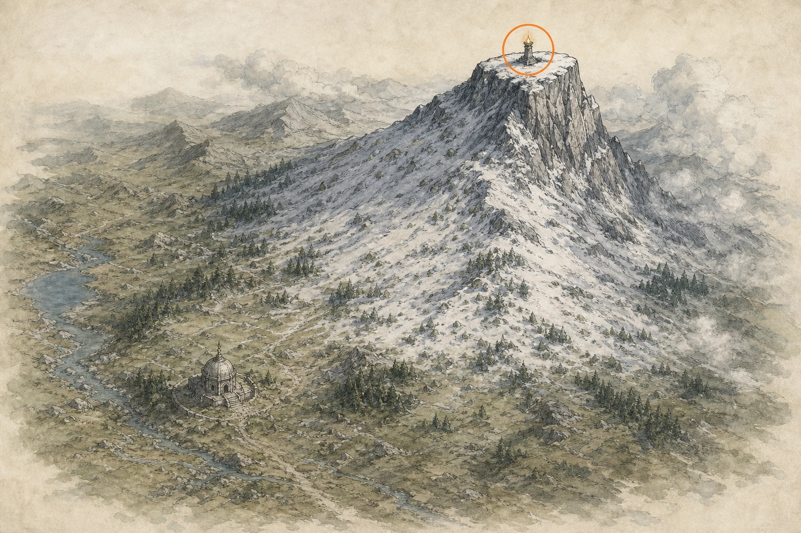
Secret Place #13, A Hill Guided By Light
Secret Place
HintKeep exploring within Hernand; one secret place belongs to this region.
WhereThe Cresset is atop the hill directly east of Equinsher Saddlery.
Full detailClimb the hill east of Equinsher Saddlery while avoiding the damaging plants along its sides. More growth surrounds the summit, so circle for a clear landing rather than pushing through it; reach the center and activate the Cresset.
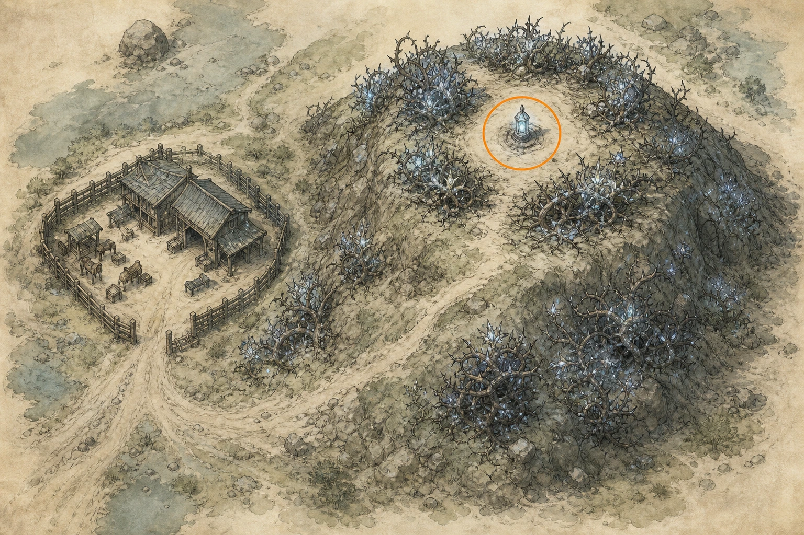
Secret Place #14, Guide in the Darkness
Secret Place
HintKeep exploring within Hernand; one secret place belongs to this region.
WhereSouthwest of the Sanctum of Deliverance, use the stone platform that drops into an underground passage.
Full detailFind the flat stone platform southwest of the Sanctum of Deliverance and step onto its center to descend below ground. Follow the only underground corridor to its far chamber and activate the Cresset there.
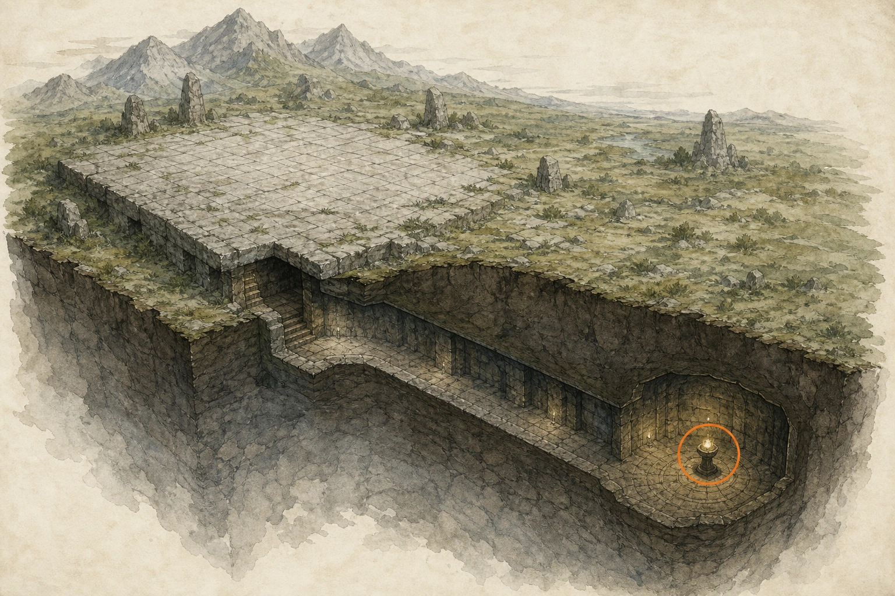
Secret Place #15, Where Sky Meets Earth
Secret Place
HintKeep exploring within Hernand; one secret place belongs to this region.
WhereClimb to the top of Galepulley, east of the Sanctum of Penitence.
Full detailTravel east from the Sanctum of Penitence to Galepulley and climb the structure all the way to its highest accessible point. Use a double jump or aerial Force Palm for the final lip, then activate the Cresset at the top.
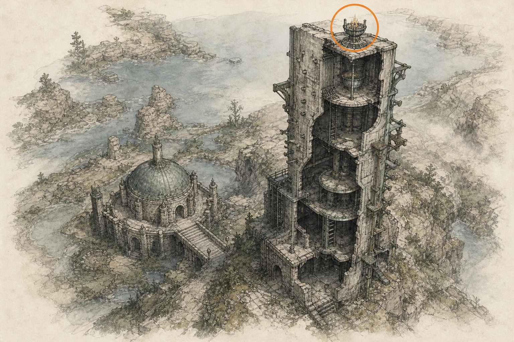
Secret Place #17, An Unreachable End
Secret Place
HintKeep exploring within Hernand; one secret place belongs to this region.
WhereFollow the coastal cliffs southeast of the Spire of Insight toward the water.
Full detailTake the cliff chain leading southeast from the Spire of Insight. At the wide gaps, jump, add a Force Palm in midair to gain height, and glide to the next outcrop. Continue seaward to the last reachable ledge and activate its Cresset.
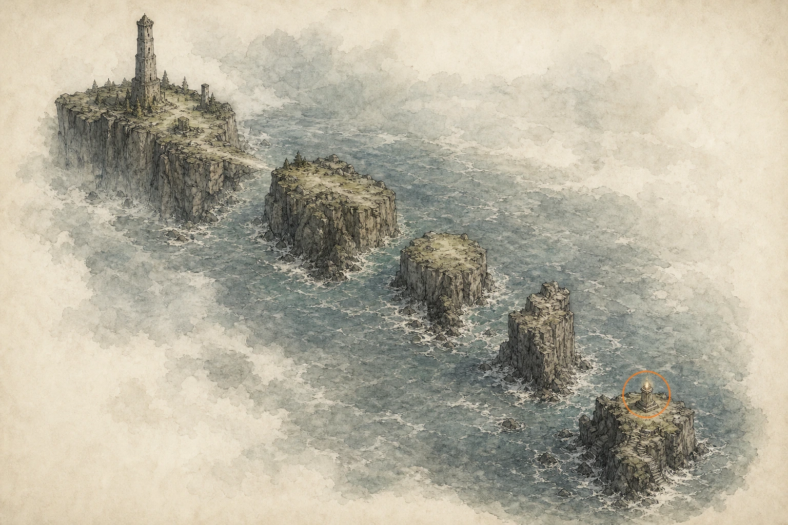
Secret Place #19, Subtle Gap
Secret Place
HintKeep exploring within Hernand; one secret place belongs to this region.
WhereAt Anvil Hill beside Wild Raiders Camp, enter through the summit hole or the camp's southern cave.
Full detailChoose either entrance at Anvil Hill: drop through the opening on the hilltop, or enter the cave in the southern portion of Wild Raiders Camp. Both routes join the same interior; follow it to the recessed Cresset and activate it.
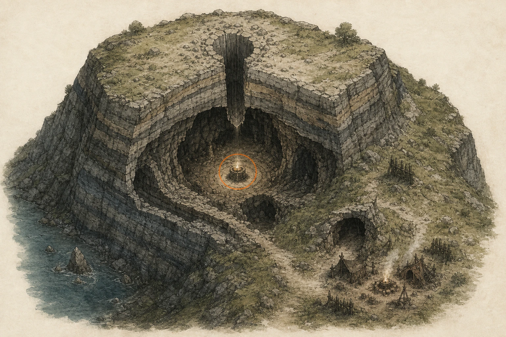
Secret Place #20, Haven Past the Snowfall
Secret Place
HintKeep exploring within Hernand; one secret place belongs to this region.
WhereFrom Kharonso, take the signed route toward the south; stay with it through the western bend to the dead end east of Snowy Plateau Cabin.
Full detailStart at Kharonso and remain on the marked road as it bends south and then west. At the road's dead end east of Snowy Plateau Cabin, climb the short rise and activate the Cresset. This high point also provides the easiest glide toward Secret Place #1.
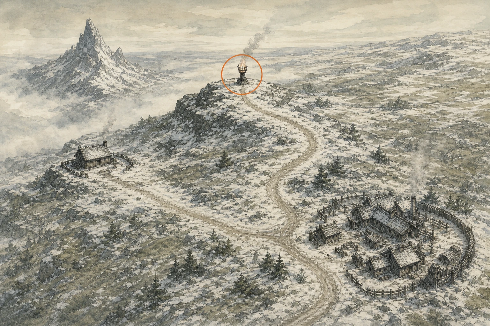
Secret Place #21, Windcrest
Secret Place
HintKeep exploring within Hernand; one secret place belongs to this region.
WhereClimb the high boundary cliffs southwest of Mountain of Frozen Souls Hearth.
Full detailHead southwest from Mountain of Frozen Souls Hearth until the terrain rises against the map boundary. Ascend the cliff's stepped side, use aerial Force Palms for the last vertical section, and activate the Cresset on the outermost summit.
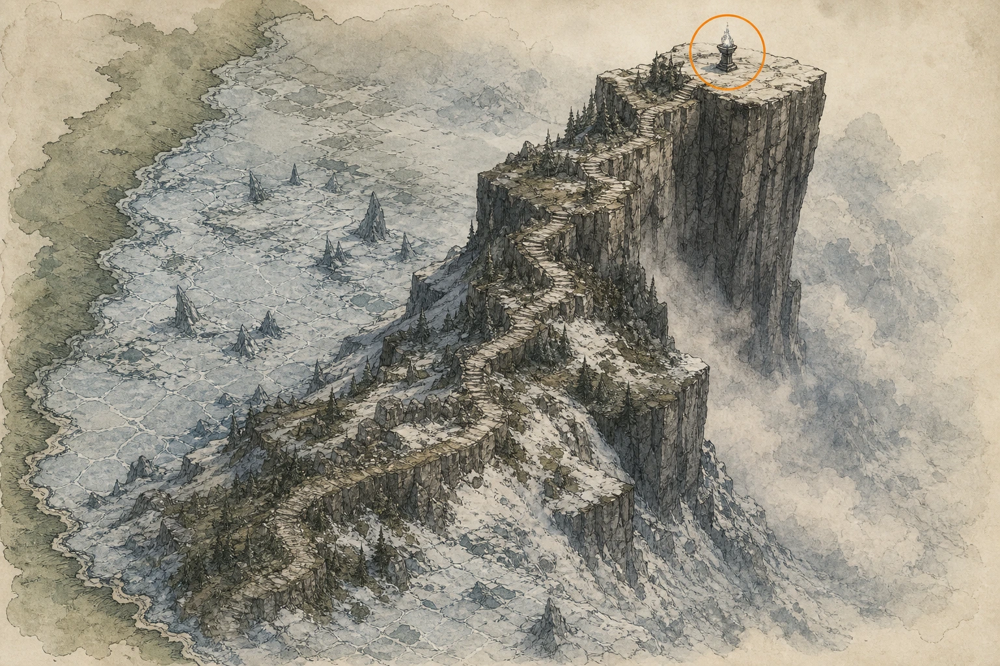
Secret Place #22, Hill of the Abandoned
Secret Place
HintKeep exploring within Hernand; one secret place belongs to this region.
WhereThe Cresset is on the cliff tops directly south of Mountain of Frozen Souls Hearth.
Full detailLeave Mountain of Frozen Souls Hearth heading south and stay on the ascending ridge rather than dropping into the low ground. Climb to the highest plateau, locate the Cresset near its edge, and activate it.
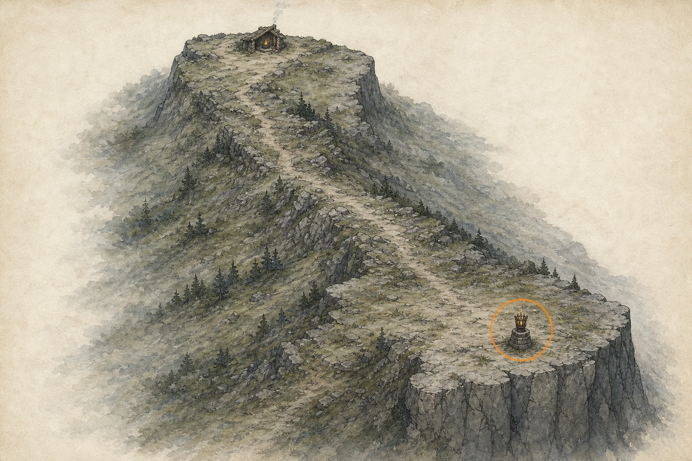
Secret Place #60, Watcher on the Cliff
Secret Place
HintKeep exploring within Hernand; one secret place belongs to this region.
WhereGo northeast of Hoenmark Ruins to the Cresset on the cliff edge.
Full detailClimb the ridge northeast of Hoenmark Ruins from its inland side, follow the top toward the drop, and activate the Cresset positioned at the cliff's outer edge.
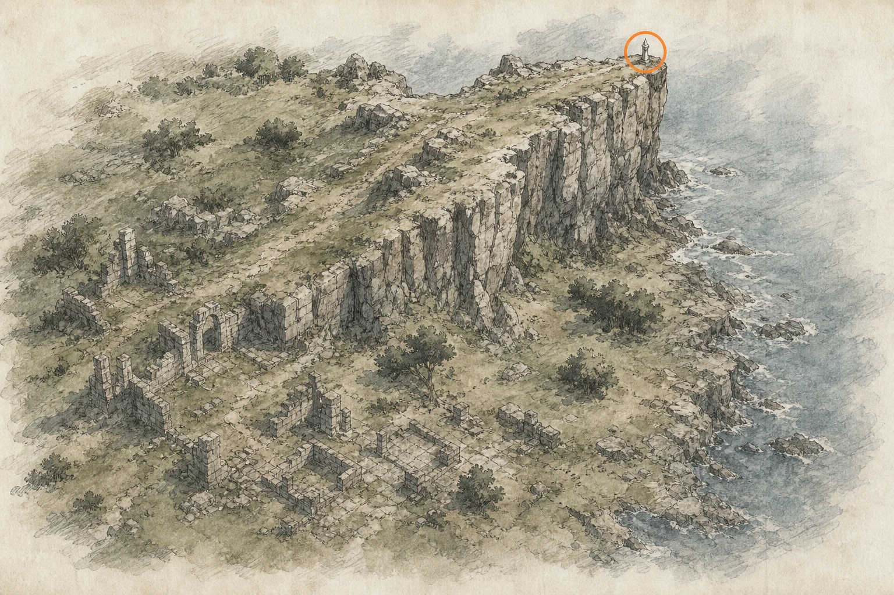
Spire #1, Spire of the Stars
Spire
HintKeep exploring within Hernand; one spire belongs to this region.
WhereSearch the spire around Scholastone Institute.
Full detailAt Scholastone Institute, expose three small cubes by striking the yellow side-room walls with Force Palm, then place all three in the sockets facing the lift. Strike those sockets to raise the four hanging symbols and lower them into this pattern: left symbol at the top; second symbol in the second slot from the top; third symbol at the bottom; right symbol in the third slot from the top. Ride the activated lift, step off promptly, continue upstairs, and enter the gate.
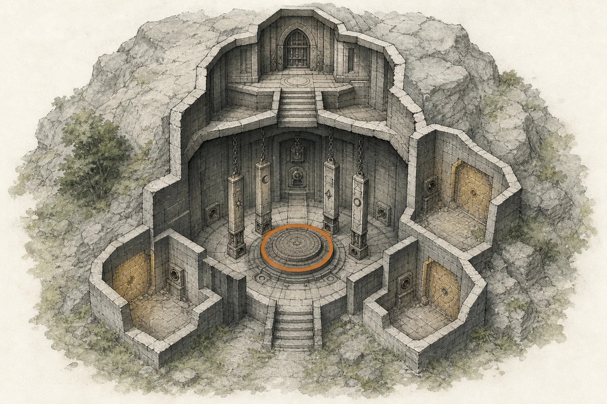
Spire #5, Spire of Insight
Spire
HintKeep exploring within Hernand; one spire belongs to this region.
WhereSearch the mountain around Steel Mountain.
Full detailAt Steel Mountain, clear the approach and burn the entrance growth with Focused Light. Put a nearby pebble in the gate chalice, then place the Gravestone in the lift's chalice. On the next floor add the Telescope and Pen Tip; above that, add the Small Rotating Globe, Celestial, and Sundial from the shelving to the lift's right. The completed offerings carry you to the top gate. A Gold Bar recipe is also on the third-floor right shelving.
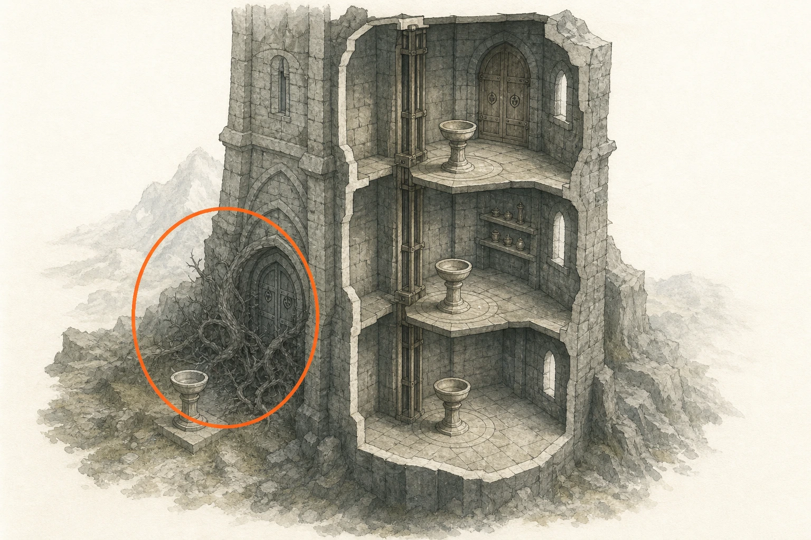
Demeniss
You are here when: The central territory of plains, temple routes, quarries, and walled settlements.
Reveal only as much location detail as you need before moving on.
Ancient Ruin #2, Trembling Woods Ruins
Ancient Ruin
HintKeep exploring within Demeniss; one ancient ruin belongs to this region.
WhereSearch the ruins southeast of Galleypulley.
Full detailOperate the right crank first because it turns the mural's rear layer; align that background picture before adjusting either metal frame. Use the other two cranks to complete the foreground image, applying Sword Stab to the left control when required. A correct three-layer picture drains the basin and exposes the Cresset.
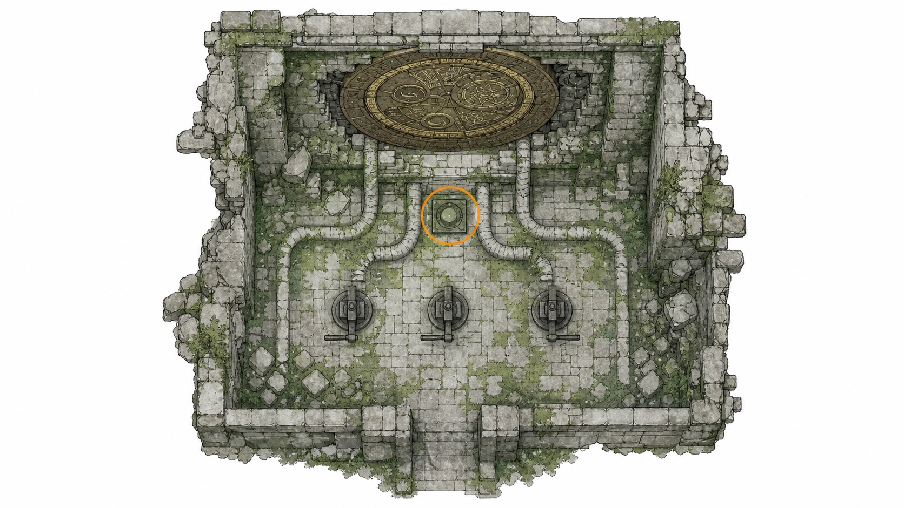
Ancient Ruin #8, Wiggling Hill Ruins
Ancient Ruin
HintKeep exploring within Demeniss; one ancient ruin belongs to this region.
WhereSearch the ruins east of Sanctum of Mortification.
Full detailCast Nature's Snare on the metal water mechanism and keep turning it until the basin drains. Descend into the exposed area and light every stone lantern; the Cresset activates only after the full set is burning.
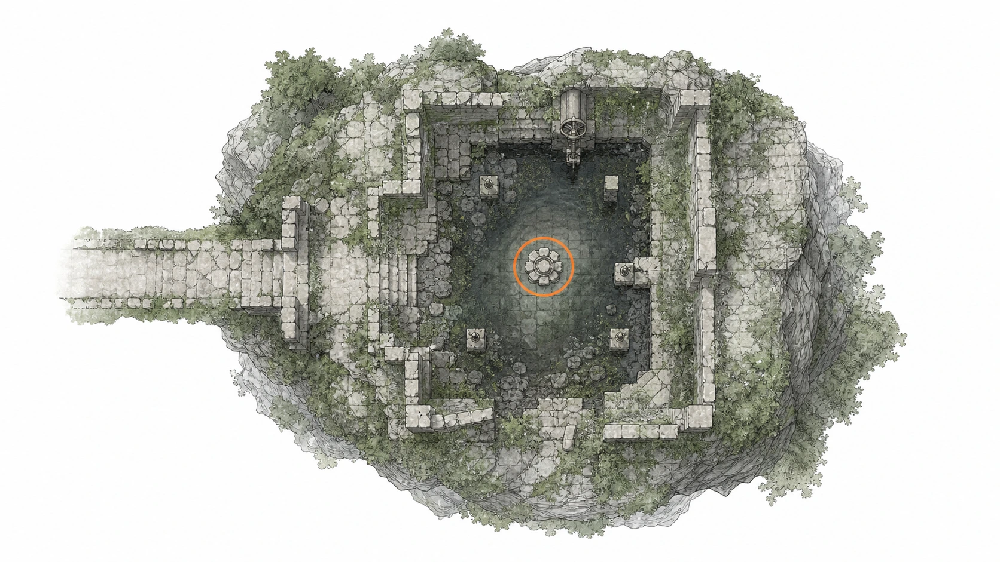
Ancient Ruin #19, Bamboo Forest Seonangdang Ruins
Ancient Ruin
HintKeep exploring within Demeniss; one ancient ruin belongs to this region.
WhereSearch the river south of Sanctum of Revelation.
Full detailCollect the three loose ribboned stones from both sides of the central cairn. Build the middle stack from largest to smallest in ribbon order: red at the bottom, blue in the middle, yellow on top. If a stone disappears or lands out of reach, travel to another region and return to respawn the set.
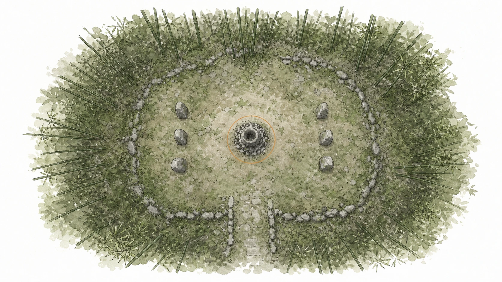
Ancient Ruin #20, Kingshield Mountains Ruins
Ancient Ruin
HintKeep exploring within Demeniss; one ancient ruin belongs to this region.
WhereSearch the forest west of Tariv.
Full detailGather the movable pots scattered around the clearing and carefully place them on the central base, widest first. Balance a vertical stack of four pots without letting one fall; the fourth successful placement completes the ruin.
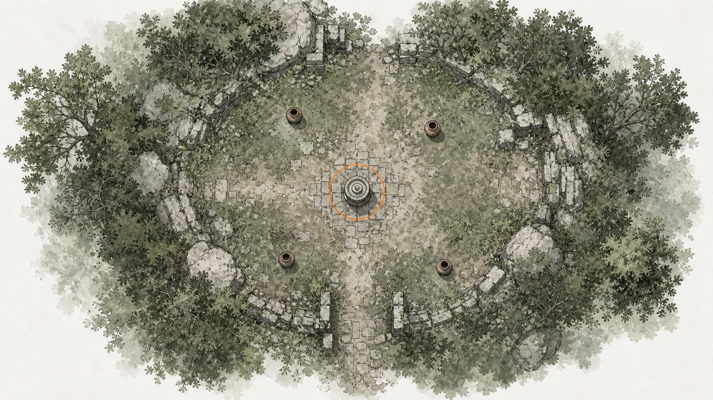
Ancient Ruin #22, Golden Plains Ruins
Ancient Ruin
HintKeep exploring within Demeniss; one ancient ruin belongs to this region.
WhereSearch the forest east of Burnhand Quarry.
Full detailRemove the obstructing branches with Blinding Flash or Focused Light. Facing north, number the statues 1-4 from upper-left to lower-right. Rotate 2 to face the center, operate 1 until 3 faces the center, then operate 4 until both 1 and 4 face inward. The controls rotate linked statues, so judge the result rather than counting turns.
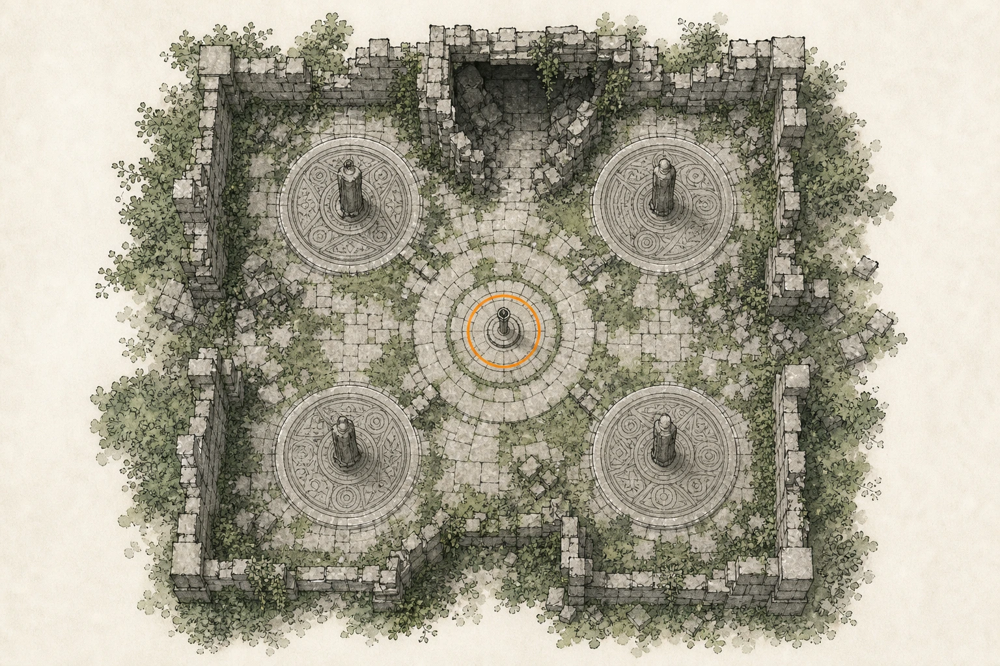
Ancient Ruin #34, Secret Chamber of the Golden Plains Ruins
Ancient Ruin
HintKeep exploring within Demeniss; one ancient ruin belongs to this region.
WhereSearch the ruins north of Wheelsmith Wainright.
Full detailBurn the branches sealing the entrance with Blinding Flash. In the inner chamber, double-jump to catch the grapple point on the left, use it to reach the marked mechanisms, and strike each indicated target with Force Palm. Completing the aerial sequence powers the Cresset.
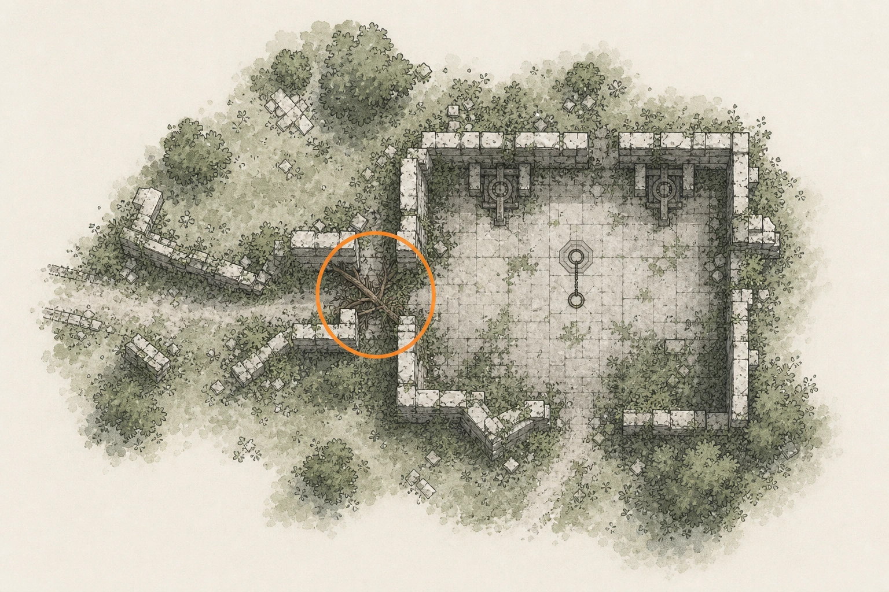
Ancient Ruin #35, The Screaming Vault Ruins
Ancient Ruin
HintKeep exploring within Demeniss; one ancient ruin belongs to this region.
WhereSearch the ruins west of Rustleleaf Farm.
Full detailDrop through the surface opening and pass the traps to the three side rooms. In the left room, rotate the disc until the short line leaving the inner circle points straight up. In the upper room, put the circles at the top and the triangle tips upward. In the right room, place the constellation's paired lines at the top. All three correct orientations activate the Cresset and grant Memories of Turbulence.
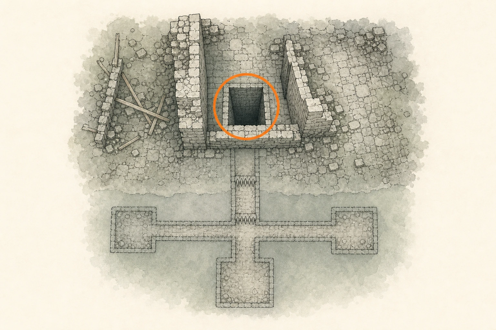
Bell #4, Toll of Demeniss
Bell
HintKeep exploring within Demeniss; one bell belongs to this region.
WhereIn Demeniss city, climb the capital's tallest clocktower.
Full detailClimb the tallest clocktower until you reach the flagpole projecting from its side. Hang from the pole so your weight pulls it down and lowers the hidden upper bell mechanism. Climb to the newly accessible top floor and interact with the bell; its icon may not appear beforehand.
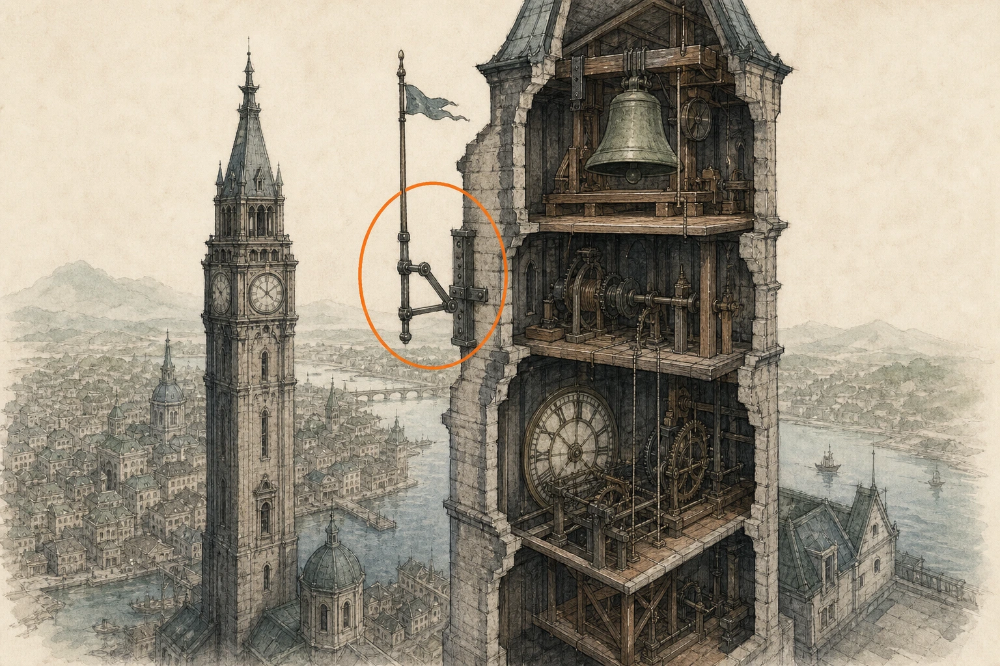
Constellation #1, Shield
Constellation
HintKeep exploring within Demeniss; one constellation belongs to this region.
WhereSearch the viewpoint around Stones of Times in northern Demeniss.
Full detailBurn the thorn growth around Stones of Times, select the local ruins quest, and stand precisely on its X marker. Look high to the southeast; from the exact marker the Shield fragments overlap without additional movement.
Constellation #4, Hammer
Constellation
HintKeep exploring within Demeniss; one constellation belongs to this region.
WhereSearch the viewpoint around Demeniss at Sheltering Rocks.
Full detailTrack the ruins quest at Sheltering Rocks and occupy its X marker. Face southeast and look overhead; if the Hammer does not register, walk slightly forward until its lower segment and top diamond lock together.
Legendary Animal #17, Vine Deer
Legendary Animal
HintKeep exploring within Demeniss; one legendary animal belongs to this region.
WhereAt Bowsprit Cape, search the deer herd roaming around the Southern Eldertree for its horned member.
Full detailCircle the Southern Eldertree at Bowsprit Cape until you find the distinct horned deer traveling with the ordinary herd. Isolate it, defeat it without losing the herd in the vegetation, and skin it to record Vine Deer and receive Aged Branch.
Legendary Animal #20, Black Lion
Legendary Animal
HintKeep exploring within Demeniss; one legendary animal belongs to this region.
WhereAfter the regional hunter assignments open, follow their search marker to northern Demeniss along The Crimson Wall.
Full detailComplete most Hernand faction work and the constellation assignment at Scholastone, then accept the legendary hunter's tasks outside Lioncrest Manor. Follow the resulting marker to The Crimson Wall in northern Demeniss. Use the lantern to locate and inspect the fallen deer; this draws out the black lion and its pack. Defeat the group, skin the marked lion, collect the Black Lion Earring, and return to the hunter.
Racing Challenge 1
Activity
HintKeep exploring within Demeniss; one activity belongs to this region.
WhereSearch the activity point beside Breesman Pasture after Demeniss is liberated.
Full detailUse a well-leveled horse, Royler at level 4 or higher is especially strong, and fit stamina-regeneration horseshoes. Each match is three laps against one opponent, with catch-up behavior keeping the race close. Maintain a steady pace rather than exhausting the mount early, preserve the inner blue stamina bar for the last corner, and sprint through the finish. Win three races consecutively, then beat the champion.
Sanctum #13, Sanctum of Expiation
Sanctum
HintKeep exploring within Demeniss; one sanctum belongs to this region.
WhereFind the sanctum north of the City of Demeniss and approach along its eastern road.
Full detailAccept the corresponding request and clear the sanctum from the eastern road. From the post-clear ledge, drop north, burn the thorns in the doorway, follow the low passage, and burn the second growth to reach the cube above-right; carry it to the nearby device and insert it from the south. Climb the northern ruin, break through its weak roof, seal the pillar segment behind the northeastern windows into the Kuku Pot, then discard Core XIV-I at the device and fit it to the northwestern broken column. Finish in the lit square.
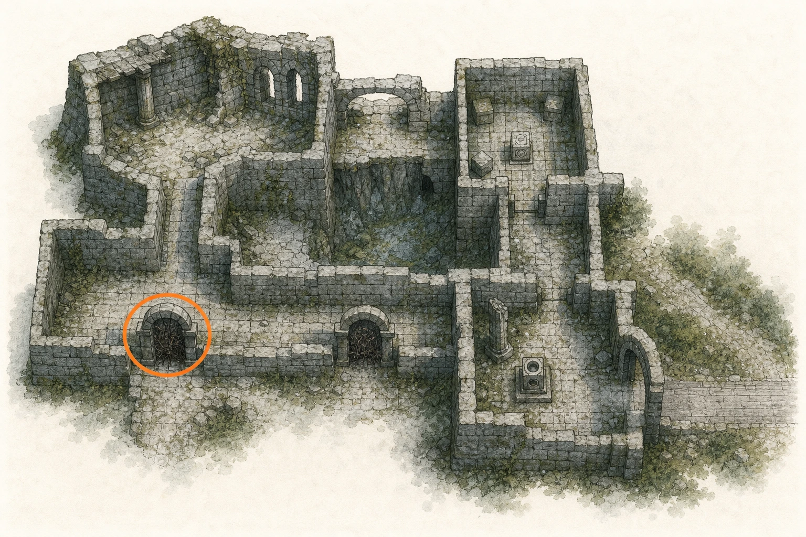
Sanctum #15, Sanctum of Revelation
Sanctum
HintKeep exploring within Demeniss; one sanctum belongs to this region.
WhereSearch the sanctum around Serpent Marsh.
Full detailAccept the corresponding request and clear the sanctum from the south, dodging magical attacks during the final encounter. West of the cleared courtyard, collapse the roof of the isolated building to retrieve the pillar segment; fit it to the device's western broken column. With the device behind you, look east for the cube on the raised ledge, pull it down with Axiom Force, insert it into the northern socket, and use the lit square.
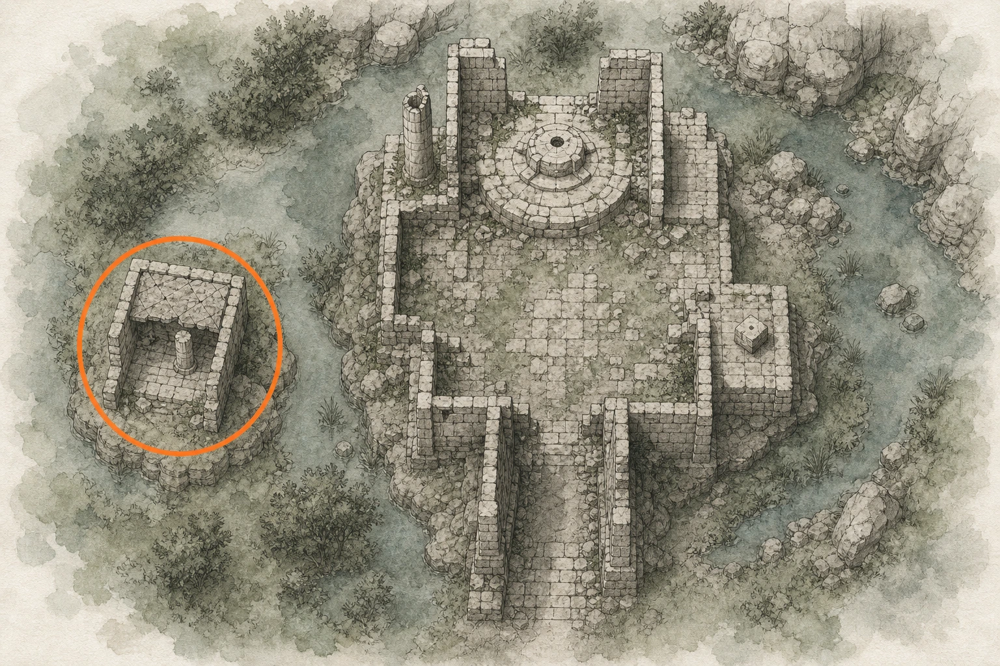
Sanctum #16, Sanctum of Mortification
Sanctum
HintKeep exploring within Demeniss; one sanctum belongs to this region.
WhereSearch the river around Denn River.
Full detailWait until normal progression gives the restoration objective. Enter the northern building at ground level for the pylon dome, carry it upstairs, align it over the broken pylon, and connect it with a jumping Force Palm. Outside that same northern ruin, burn the wall growth, pull the hidden cube through the grate, and seal it in the Kuku Pot. Back at the reactor, discard Core VIII, insert it into the side socket, and complete the objective.
Sealed Abyss Artifact, Above the Law 9 (missable)
Sealed Artifact
HintKeep exploring within Demeniss; one sealed artifact belongs to this region.
WhereSearch the fortress south of entrance.
Full detailEquip a mask and steal one candle from each of West Demeniss Church, East Demeniss Church, and Demeniss Cathedral. At the western church, use the cupboard candle in the rear-right corner; at the eastern church, use the altar when the room is clear; the cathedral candle is also on its altar. Aim the lantern to reveal the steal prompt, stay outside witnesses' view, and save before each theft if you want to avoid a bounty.
Sealed Abyss Artifact, Bow 5
Sealed Artifact
HintKeep exploring within Demeniss; one sealed artifact belongs to this region.
WhereSearch the shrine southeast of Beighen.
Full detailFrom more than twenty meters away, defeat five targets in one attack sequence. The safest targets are the fragile mechanical fliers in northwestern or southeastern Delesyia: mark at least five with Focused Shot and release together. Against ordinary enemies, soften the group and use an elemental charged bow shot.
Sealed Abyss Artifact, Cannon 2
Sealed Artifact
HintKeep exploring within Demeniss; one sealed artifact belongs to this region.
WhereSearch the road northwest of Silvermoon Tradehouse.
Full detailAs Oongka, unlock Elemental Charged Shot and restore the four required sites: Lightning comes from Courtyard of Precision; Frost from Path of Trials; Flame from Tree of Slumber; Wind from Riddle Square. Defeat three enemies with each Hand Cannon charge type, including unimbued shots. Hold the attack until the muzzle flashes to confirm a full charge; releasing earlier does not count.
Sealed Abyss Artifact, Challenges and Changes 4
Sealed Artifact
HintKeep exploring within Demeniss; one sealed artifact belongs to this region.
WhereSearch the cliff east of Thronbriar Fortress.
Full detailComplete the full Embers of Return sequence under Greymanes, Grounds of the Sunrise. Follow its recruitment, resource, and housing assignments until the camp-expansion task appears, then finish that construction step to register Howling Hill's second expansion.
Sealed Abyss Artifact, Challenges and Changes 7
Sealed Artifact
HintKeep exploring within Demeniss; one sealed artifact belongs to this region.
WhereUse the eastbound route beside the Spire of Clockwork.
Full detailWin three Duo rounds consecutively at either Hernand inn's upstairs table or Tashkalp's higher-stakes table. Check the opponents' visible first sticks against their possible totals, fold weak hands, and pressure weak opposing draws with larger bets. You may conceal a stick while shuffling, but being caught is risky; the Deceiver's Fedora provides a safer advantage by exposing hands. A lost round resets the streak.
Sealed Abyss Artifact, Gun 4
Sealed Artifact
HintKeep exploring within Demeniss; one sealed artifact belongs to this region.
WhereSearch the road south of Tariv.
Full detailAs mounted Damiane, hit seven enemies who are themselves riding horses; bear, lizard, and wolf riders do not count. At friendly Thornbriar Fortress, threaten mounted soldiers until they turn hostile and show red minimap dots, then shoot them before they dismount. Progress is cumulative, but doing all seven together limits repeated bounty buildup; clear the resulting bounty afterward.
Sealed Abyss Artifact, Horse 1
Sealed Artifact
HintKeep exploring within Demeniss; one sealed artifact belongs to this region.
WhereSearch the intersection southwest of Stonewell Farm.
Full detailApproach two different wild horses, chase each until the mount prompt appears, and hold the control direction matching its tail movement while it bucks. When the resistance phase ends, choose either to keep it or send it to a stable; both successful tamings count.
Sealed Abyss Artifact, Horse 2
Sealed Artifact
HintKeep exploring within Demeniss; one sealed artifact belongs to this region.
WhereSearch the intersection northeast of St. Halssius's House of Healing.
Full detailRemain in the saddle and kill five wild animals within five minutes, preferably with the bow so you never need to dismount. Choose an area with dense deer, boars, or wolves, and begin the timer with the first mounted kill.
Sealed Abyss Artifact, Horse 3
Sealed Artifact
HintKeep exploring within Demeniss; one sealed artifact belongs to this region.
WhereSearch the intersection east of Ironwood Farm.
Full detailEnter a large hostile camp on horseback and keep the horse moving continuously while defeating twenty enemies within five minutes. Mounted melee and ranged attacks both count. Avoid obstacles and heavy attackers that can halt or knock you from the saddle, because either breaks the run.
Sealed Abyss Artifact, Horse 5
Sealed Artifact
HintKeep exploring within Demeniss; one sealed artifact belongs to this region.
WhereSearch the junction along the western edge of Springdale Farm's fields.
Full detailCall your horse below a high ledge, jump and glide over it, then land directly into the saddle instead of using the ground mount prompt. Repeat the aerial mount three times; the same horse and ledge can be reused.
Sealed Abyss Artifact, Horse 6
Sealed Artifact
HintKeep exploring within Demeniss; one sealed artifact belongs to this region.
WhereSearch the intersection directly east of the Church of West Demeniss.
Full detailRide from Silvermoon Tradehouse southeast of Demeniss city to Vellua on Hernand's southern edge within ten minutes. Use a high-level horse, cut across safe open terrain instead of following every road bend, and approach Vellua without taking cliff drops high enough to force a dismount. Royler's stamina and speed make the margin safer.
Sealed Abyss Artifact, Hunting 5
Sealed Artifact
HintKeep exploring within Demeniss; one sealed artifact belongs to this region.
WhereSearch the road west of Burnhand Quarry.
Full detailDefeat ten Stoneback Crabs, the small Abyss creatures carrying terrain materials on their shells. Search around Abyss structures and bismuth deposits. The cliff deposits near Equinsher Saddlery are an early, repeatable location with several bismuth-backed crabs; leave for a while and return after they respawn until the total reaches ten.
Sealed Abyss Artifact, Hunting 6
Sealed Artifact
HintKeep exploring within Demeniss; one sealed artifact belongs to this region.
WhereSearch the intersection northeast of Southern Court.
Full detailCatch and carry five separate members of the weasel family. Ordinary weasels and raccoons are confirmed to qualify, and repeats of the same species are fine; the same individual cannot be dropped and reused for extra credit.
Sealed Abyss Artifact, Hunting 9
Sealed Artifact
HintKeep exploring within Demeniss; one sealed artifact belongs to this region.
WhereSearch the road south of Thornbriar Guard Post.
Full detailBuy a broom from a provisioner and upgrade it at a smithy to shorten the fight. Defeat a bear using broom damage exclusively. Remove gear whose Abyss effects retaliate after dodges, and do not mount or perform a cling attack after stunning the animal, either source of extra damage can void the seal. A dependable bear roams west of the Sanctum of Penitence in Hernand.
Sealed Abyss Artifact, Life 2
Sealed Artifact
HintKeep exploring within Demeniss; one sealed artifact belongs to this region.
WhereSearch the road north of Burnhand Quarry.
Full detailAcquire all eighteen mineral records. The three Stone qualities plus Iron, Copper, Silver, Gold, Bismuth, and Scolecite form the first group. You also need Bloodstone through Epidote; add Diamond and Brimstone, then finish with Stalactite, Platinum, and Mercury. Mine unknown deposits, or consume Memory of Ancient Nature from the optional desert encounter to fill gatherables knowledge at once.
Sealed Abyss Artifact, Life 6
Sealed Artifact
HintKeep exploring within Demeniss; one sealed artifact belongs to this region.
WhereSearch the junction west of Demeniss Sentry Camp, north of the Spire of Clockwork.
Full detailComplete the aquatic Knowledge categories: 25 freshwater fish, 15 saltwater fish, five legendary fish, and 11 underwater wildlife entries. Fish across inland and coastal waters, hand-catch the legendary specimens at their dedicated sites, and collect unknown underwater creatures until all 56 records are present.
Sealed Abyss Artifact, Operation 8
Sealed Artifact
HintKeep exploring within Demeniss; one sealed artifact belongs to this region.
WhereSearch the road north of Scorchrock Castle.
Full detailPlay as Damiane and defeat one Elite using gun damage only. Identify Elites by the starburst minimap marker at hostile locations or roaming groups. Do not use environmental or armor-triggered damage. Focused Shot can place several marks safely; finish by releasing a fully charged shot so all marks resolve as firearm damage.
Sealed Abyss Artifact, Rapier and Shield 2
Sealed Artifact
HintKeep exploring within Demeniss; one sealed artifact belongs to this region.
WhereAt the GOLDEN PLAINS map lettering, inspect the junction beneath the letter A.
Full detailAs Damiane, use the rapier's Stab input to land ten hits without suffering damage. There is no timer, so isolate one durable opponent or several weak ones, stab only during safe openings, and retreat between attacks without letting any projectile connect.
Sealed Abyss Artifact, Rapier and Shield 3
Sealed Artifact
HintKeep exploring within Demeniss; one sealed artifact belongs to this region.
WhereSearch the road south of Ironwood Farmhouse.
Full detailKnock an enemy fully prone, then strike the grounded body with Damiane's rapier. Repeat until five prone contacts register. Use low-damage knockdowns on durable targets so they survive long enough for multiple floor strikes.
Sealed Abyss Artifact, Rapier and Shield 5
Sealed Artifact
HintKeep exploring within Demeniss; one sealed artifact belongs to this region.
WhereSearch the road southwest of Spire of Clockwork.
Full detailThrow Damiane's shield into a dense enemy group and let it ricochet between targets. Additional Shield Toss upgrades increase its bounces, but repeated basic throws also work. Accumulate nine enemy contacts within fifteen seconds.
Sealed Abyss Artifact, Shield 5
Sealed Artifact
HintKeep exploring within Demeniss; one sealed artifact belongs to this region.
WhereSearch the road south of the “D” in Demeniss.
Full detailAs Damiane, throw the shield at enemies five times. Every successful toss contact that flips a target advances the counter; one target may be reused if it survives and returns to a hittable state.
Sealed Abyss Artifact, Spear 4
Sealed Artifact
HintKeep exploring within Demeniss; one sealed artifact belongs to this region.
WhereSearch the intersection west of Flame Knight's Castle.
Full detailJump above a weakened enemy and attack with the spear before landing; the heavy aerial sweep deals the most reliable finishing damage. Repeat until three enemies are defeated by leap attacks within one minute.
Sealed Abyss Artifact, Special Weapon 7 (missable)
Sealed Artifact
HintKeep exploring within Demeniss; one sealed artifact belongs to this region.
WhereSearch the intersection northwest of Demeniss Barracks.
Full detailComplete Wind Energy Fusion research at the Great Gate of Urdavah and dispatch to liberated Helmara for Gale Shields. Earn thirty finishing blows with the shield itself. After blocking three hits it can emit a wind wave, but fall damage from knockback does not count; direct Shield Bash finishes on weak Hernand bandits are more reliable. Expect to need several shields.
Sealed Abyss Artifact, Special Weapon 9 (missable)
Sealed Artifact
HintKeep exploring within Demeniss; one sealed artifact belongs to this region.
WhereSearch the shrine northeast of Ironbarrel Armory.
Full detailFinish Weapon Heat-Treatment research at Zargan Tankworks and send expeditions to the Aeronautical Research Base for Shotgun Shields. Block three attacks to charge the shield, then Shield-Bash at point-blank range to fire its pellet spread. Defeat thirty enemies with shield damage; close weak targets reduce falloff, and multiple shields may be required.
Sealed Abyss Artifact, Sword 5
Sealed Artifact
HintKeep exploring within Demeniss; one sealed artifact belongs to this region.
WhereSearch the intersection south of Reventine Monastery.
Full detailUse only Sword Stab forward thrusts to defeat three enemies consecutively. Upgrade the skill for its follow-up thrust and super-armor bypass, soften each target with Stab itself, and avoid ordinary sword attacks or passive damage between the three kills.
Sealed Abyss Artifact, Sword 6
Sealed Artifact
HintKeep exploring within Demeniss; one sealed artifact belongs to this region.
WhereSearch the temple south of Jijeong Temple.
Full detailUpgrade Kliff's basic heavy Forward Slash, gather five weak enemies, and repeatedly use that tracking heavy attack to finish all five within fifteen seconds. Other sword moves must not claim the finishing blows.
Sealed Abyss Artifact, Trade 3
Sealed Artifact
HintKeep exploring within Demeniss; one sealed artifact belongs to this region.
WhereSearch the intersection south of Demeniss Castle.
Full detailVisit the four primary witch workshops. The Hernand workshop is in The Witchwoods and opens through normal progression. For Pailune, first help the figure southeast of Wayward Woods, then visit the lake cabin below Silver Wolf Mountain. For Demeniss, assist the figure at the broken bridge west of Deadfire Mountain, then enter the hidden cave-workshop on the Serpent March island. For the Crimson Desert, give a coin to the child at northern Tommaso's posthouse, then climb onto the roof of the mountain-alcove cabin west of World's Navel. Speak and listen at each destination.
Sealed Abyss Artifact, Training 2
Sealed Artifact
HintKeep exploring within Demeniss; one sealed artifact belongs to this region.
WhereCollect the seal at Bloodsteel South Gate in Demeniss.
Full detailUnlock Kliff's double jump and enough Force Palm charges for three aerial uses. Double-jump from level ground, then space three midair Force Palms so each begins after the preceding upward momentum fades. Spamming them simultaneously produces less height; staggered boosts are needed to pass ten meters.
Sealed Abyss Artifact, Training 6
Sealed Artifact
HintKeep exploring within Demeniss; one sealed artifact belongs to this region.
WhereSearch the intersection north of Hayroof Farm.
Full detailParry seven attacks consecutively without suffering any damage between them. A single basic melee opponent is safest: remain still, respond to the same readable strike seven times, and do not counterattack or risk a surrounding enemy interrupting the chain. Any hit resets the no-damage sequence.
Sealed Abyss Artifact, Two-Handed Weapon 2
Sealed Artifact
HintKeep exploring within Demeniss; one sealed artifact belongs to this region.
WhereSearch the intersection southwest of Golden Gallop Racecourse.
Full detailWith a longsword, defeat three enemies through its finisher state without taking damage. There is no timer; isolate weak targets, avoid ranged groups, and complete one opponent at a time. Any received hit resets the no-damage chain.
Secret Place #3, Breathless Lake
Secret Place
HintKeep exploring within Demeniss; one secret place belongs to this region.
WhereSearch the crater lake pressed against the cliffs northwest of Hexe Sanctuary.
Full detailTravel northwest from Hexe Sanctuary to the circular lake at the cliff base. Circle the rim to the Cresset's side, descend without falling into an unrecoverable slope, and activate it beside the water.
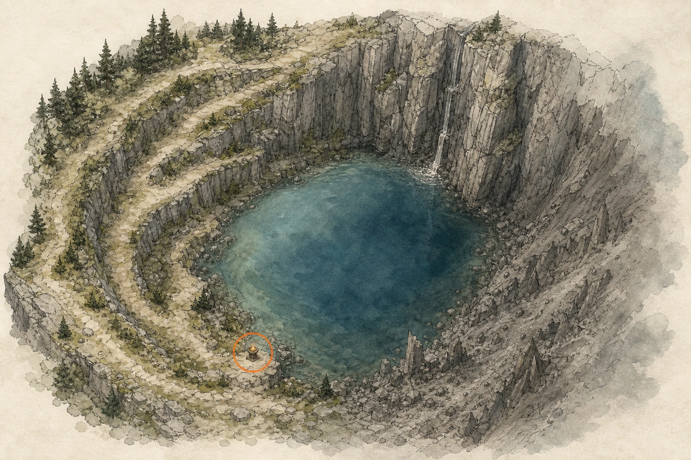
Secret Place #4, Peak's Green Bloom
Secret Place
HintKeep exploring within Demeniss; one secret place belongs to this region.
WhereThe Cresset stands on a water pillar southeast of Jijeong Temple.
Full detailFrom Jijeong Temple, reach the shoreline to the southeast and line up with the narrow pillar rising from the water. Glide or use aerial Force Palms from the nearest high ledge, land on the pillar top, and activate the Cresset.
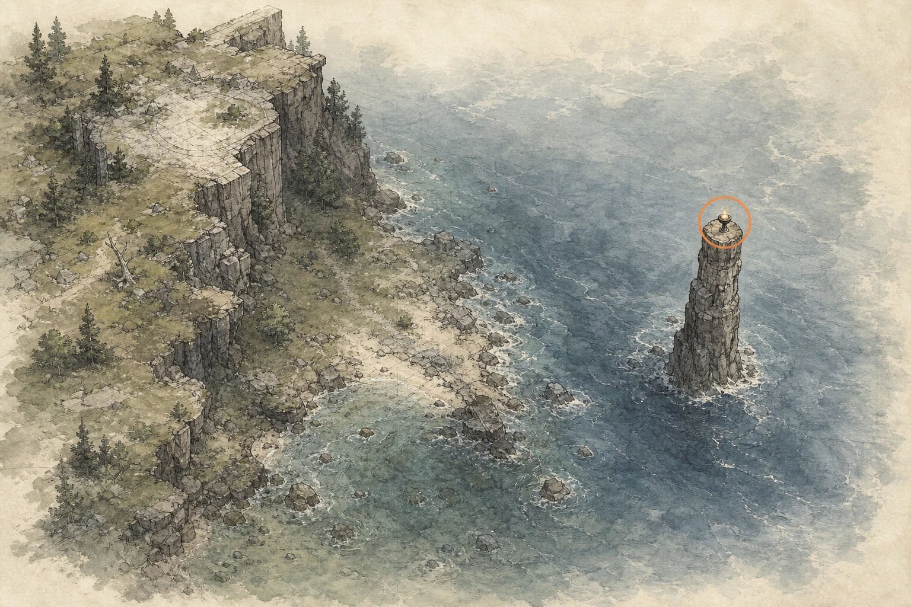
Secret Place #16, Rock Worn Down by the Ocean Wind
Secret Place
HintKeep exploring within Demeniss; one secret place belongs to this region.
WhereOff Bowsprit Cape's southern shore, check the small hollow in the rock pillar just east of the submerged shipwreck.
Full detailReach the Demeniss Southern Cliff Submerged Shipwreck south of Bowsprit Cape, then face east toward the nearby offshore rock. Swim, glide, or use a boat to reach it, enter the small sheltered hollow in the pillar, and activate the Cresset inside.
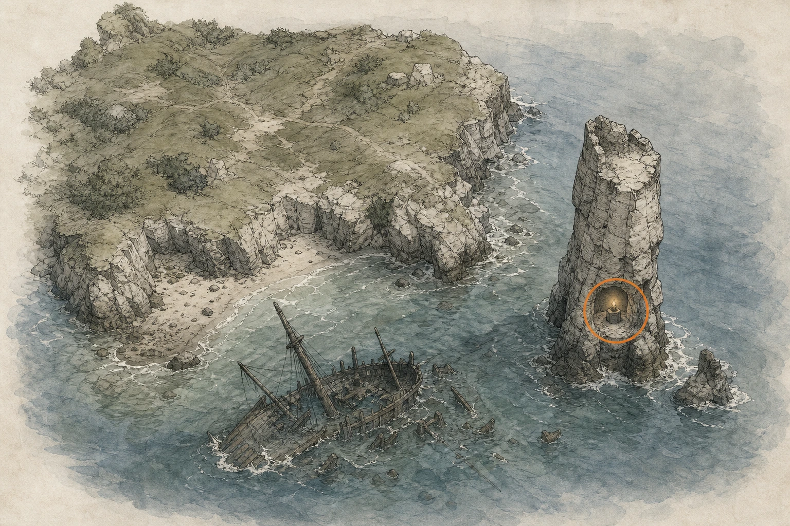
Secret Place #23, Wrecked Dream
Secret Place
HintKeep exploring within Demeniss; one secret place belongs to this region.
WhereFollow the narrow rock finger extending into the water directly south of Bloodsteel Camp.
Full detailLeave Bloodsteel Camp to the south and step onto the thin rocky spur pointing into the water. Follow it carefully to its seaward tip without dropping from either side, then activate the Cresset.
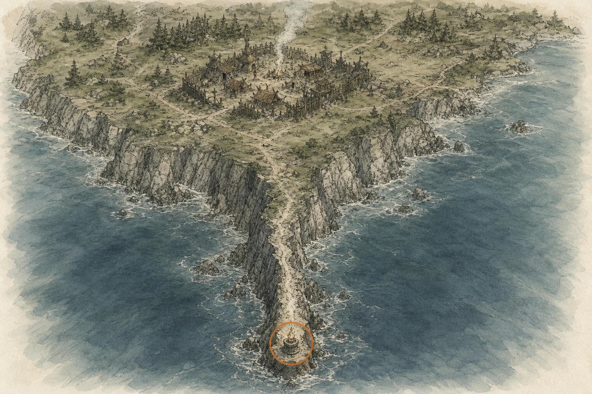
Secret Place #24, Hill of Serenity
Secret Place
HintKeep exploring within Demeniss; one secret place belongs to this region.
WhereNortheast of Thornbriar Fortress, find the cliff lip crossing the middle of the empty field.
Full detailCross the open field northeast of Thornbriar Fortress toward the sharp drop into the lower terrain. The Cresset is at that cliff boundary near the field's center; approach from the flat upper side and activate it before descending.
Secret Place #25, The Stairway Falls
Secret Place
HintKeep exploring within Demeniss; one secret place belongs to this region.
WhereFollow the river southeast of Thornbriar Fortress to the top of its final waterfall.
Full detailTrace the river southeast from Thornbriar Fortress downstream while staying on the upper bank. Stop where the last waterfall begins, cross to the Cresset's ledge at the brink, and activate it before dropping to the basin below.
Secret Place #26, Strange Rift
Secret Place
HintKeep exploring within Demeniss; one secret place belongs to this region.
WhereOn southern Bowsprit Cape, descend halfway down the sea cliffs to a cave opening.
Full detailApproach the southern edge of Bowsprit Cape from above and scan the cliff face for a cave midway down. Drop or glide to its mouth in controlled stages, enter the short passage, and activate the Cresset within.
Secret Place #27, Peak of Enlightenment
Secret Place
HintKeep exploring within Demeniss; one secret place belongs to this region.
WhereClimb the eastern mountain peak southeast of Jijeong Temple.
Full detailHead southeast from Jijeong Temple and take the climbable side of the eastern peak. Preserve stamina for the final steep rise or supplement it with aerial Force Palms, then activate the Cresset on the summit.
Secret Place #28, Sanctuary of Reflection
Secret Place
HintKeep exploring within Demeniss; one secret place belongs to this region.
WhereEnter the cave beside the small ponds southeast of Jijeong Temple.
Full detailLocate the cluster of small ponds southeast of Jijeong Temple and inspect the bordering rock face for the cave mouth. Enter, follow the passage away from daylight, and activate the Cresset in the inner chamber.
Secret Place #29, Thunderwater Falls
Secret Place
HintKeep exploring within Demeniss; one secret place belongs to this region.
WhereThe Cresset is at the waterfall's upper cliff directly south of the Sanctum of Revelation.
Full detailTravel directly south from the Sanctum of Revelation while remaining on the high ground. Approach the waterfall from upstream, step onto the ledge at its crest, and activate the Cresset before the drop.
Secret Place #30, Edge of Learning
Secret Place
HintKeep exploring within Demeniss; one secret place belongs to this region.
WhereSouthwest of Jijeong Temple Pagoda, reach the isolated stone pillar standing in the water.
Full detailUse the shoreline southwest of Jijeong Temple Pagoda to line up with the Cresset's stone pillar. Gain height from the nearest ridge and glide across, adding an aerial Force Palm if needed; land on the narrow top and activate it.
Spire #2, Spire of Soaring
Spire
HintKeep exploring within Demeniss; one spire belongs to this region.
WhereSearch the river around Denn River.
Full detailFrom the tower front, descend the cliffs on the right and use the cave to reach the basement. Leave the two blue wall spheres and the battery below the upper floor installed; removing them cuts power. Glide into the blue updraft, land at the blocked upper platform, and use Axiom Force to rotate the wall panels so energy runs from the lower-left input across to the lower-right output. Ride the raised platform, rotate the large glyph disc twice until its route joins left, bottom, and right, then remain on the central platform until it carries you through the roof.
Spire #4, Jijeong Temple Pagoda
Spire
HintKeep exploring within Demeniss; one spire belongs to this region.
WhereSearch the island around Demeniss and Delesyia.
Full detailReturn to the Jijeong Temple Pagoda after its doors become accessible through normal progression. Climb the mountain path to the pagoda, enter at ground level, and use the gate inside; this tower has no separate internal switch puzzle.
Spire #7, Spire of Clockwork
Spire
HintKeep exploring within Demeniss; one spire belongs to this region.
WhereSearch the spire around Breezeblown Knoll.
Full detailBring the Spire of Clockwork Key once normal progression awards it, unlock the front door, and jump onto the yellow switch opposite the entrance until it pulls down. Look upward to the overhead cog and activate its other yellow control, climb through the newly moving top cog to the balcony, turn right, press the lift control, and ride to the roof. Enter the central roof room and pass through the gate when it forms.
Spire #8, Spire of Frost
Spire
HintKeep exploring within Demeniss; one spire belongs to this region.
WhereSearch the mountain around Deadfire Mountain.
Full detailCarry healing food and enough Spirit for Turning Slash. Break each frozen lantern with Turning Slash, then ignite it: one stands left of the entrance; the next six line the single staircase route, alternating between interior landings and the two outer stairways, with the last in the top room. The first opens the gate, and lighting all seven completes the tower. Dodge repeatedly if frozen.
Delesyia
You are here when: The southeastern territory where dry uplands meet engineered sites and city roads.
Reveal only as much location detail as you need before moving on.
Ancient Ruin #5, Timberdale Cliff Ruins
Ancient Ruin
HintKeep exploring within Delesyia; one ancient ruin belongs to this region.
WhereSearch the forest southwest of Dewhaven Logging Camp.
Full detailUse Force Palm on each wall disc to rotate its illuminated channel. Solve all three walls by forming an uninterrupted lit path from one terminal edge to the other; the Cresset activates after the third circuit connects.
Ancient Ruin #6, Timberdale Gorge Ruins
Ancient Ruin
HintKeep exploring within Delesyia; one ancient ruin belongs to this region.
WhereSearch the ruins east of Sanctum of Devotion.
Full detailBreak the northern wall with repeated Turning Slash attacks to empty the flooded chamber. Return inside and use Force Palm on the wall nodes. Complete the upper, right, and left circuits in that dependency order: on the first bank activate the outermost left and right groups; on the right bank use middle-left and upper-right; on the left bank use middle-left, upper-middle, the node left of lower-right, and upper-right. The final circuit opens the Cresset door.
Ancient Ruin #9, Blue Thicket Ruins
Ancient Ruin
HintKeep exploring within Delesyia; one ancient ruin belongs to this region.
WhereSearch the ruins northeast of Sanctum of Veneration.
Full detailTarget each of the two obstructing stone blocks with Nature's Grasp and raise both completely. With both channels open at once, the ruin completes and the Cresset becomes usable.
Ancient Ruin #13, Beardtree Hills Rock Ruins
Ancient Ruin
HintKeep exploring within Delesyia; one ancient ruin belongs to this region.
WhereSearch the forest west of Redfox Trading Post.
Full detailStart on the first floor symbol and walk three tiles straight ahead. In the second section, continue from your current tile by stepping through adjacent symbols in their displayed order. The last grid requires one continuous route that visits every available tile exactly as laid out. A wrong step resets the attempt, and taking too long can lower the plates without opening the door, so plan the entire final path before moving.
Ancient Ruin #25, Beardtree Hills Sunflower Ruins
Ancient Ruin
HintKeep exploring within Delesyia; one ancient ruin belongs to this region.
WhereSearch the forest east of Redfox Trading Post.
Full detailUse Nature's Snare on each of the two rotating water mechanisms and raise both to their upper positions. The basin drains when both are correctly set, immediately completing the ruin.
Ancient Ruin #29, The Grey Forest Ruins
Ancient Ruin
HintKeep exploring within Delesyia; one ancient ruin belongs to this region.
WhereSearch the intersection southeast of Sanctum of Veneration.
Full detailClear loose pillars from the rotating floor frame, then Sword-Stab its control. Turn counterclockwise to place Pitcher under the first light. Continue a short distance counterclockwise for Horse and both Mirror symbols. For the last beam, reverse clockwise until the frame contains Horse, Pitcher, both Scales, and both Harps. The completed sequence opens the statue.
Ancient Ruin #31, Mount Benus Ruins
Ancient Ruin
HintKeep exploring within Delesyia; one ancient ruin belongs to this region.
WhereSearch the ruins northwest of Delesyia Beacon.
Full detailBefore starting, burn the route's vines and defeat the plant-like obstacle with a nearby log. Step on the western platform, then approach the far statue only while its head faces away. Freeze whenever its blue eyes turn toward you or the attempt resets. First-person view gives a clearer view of each head turn; reach the final platform unseen.
Ancient Ruin #36, Memory-Laden Ruins
Ancient Ruin
HintKeep exploring within Delesyia; one ancient ruin belongs to this region.
WhereSearch the ruins northeast of Stoneback Crab Wetlands.
Full detailBurn the plants blocking the surface entrance, then shoot the suspension ropes so the platforms fall into jumping positions. Cross to the control room and Force-Palm all four buttons along its left wall. The resulting door opens access to the Cresset and Forgotten Memory.
Bell #5, Toll of Delesyia
Bell
HintKeep exploring within Delesyia; one bell belongs to this region.
WhereThe Delesyia bell is in the clocktower at the northwestern side of the capital.
Full detailEnter Delesyia's northwestern clocktower, climb through its accessible floors and exterior grips to the bell chamber, and interact with the bell itself to reveal the region.
Constellation #2, Adventurer
Constellation
HintKeep exploring within Delesyia; one constellation belongs to this region.
WhereSearch the ruins around Stonemire Ruins in Delesyia.
Full detailStand near the center of Stonemire Ruins, a few paces from the pair of flat ground stones. Look upward toward the southeast and make small position adjustments until the Adventurer pattern joins.
Constellation #7, Ship
Constellation
HintKeep exploring within Delesyia; one constellation belongs to this region.
WhereSearch the viewpoint south of the A in DEWHAVEN.
Full detailUse the A in the DEWHAVEN map label as your reference and travel due south to the offshore pillars. Occupy the northeast corner of the eastern pillar, face east, and look skyward until the three sides of the triangular Ship pattern align.
Constellation #8, Elephant
Constellation
HintKeep exploring within Delesyia; one constellation belongs to this region.
WhereAt Snaketail Wall, inspect the section directly beyond Yulgear Hearth.
Full detailFind the platform beside the Snaketail Wall map lettering, due east from Yulgear Hearth. Stand near its rim with about four times as much space to the eastern edge as to the southern edge. Look southeast and join the fragments resembling an inverted lowercase e.
Constellation #13, Key
Constellation
HintKeep exploring within Delesyia; one constellation belongs to this region.
WhereSearch the lake north of Bravgork Shipyard.
Full detailFrom Bravgork Shipyard, travel north into Horseshoe Lake and climb the unmarked ruin there. Stand exactly in the square platform's center and look north for the numeral-2-shaped pattern. Place it nearly against the previously completed neighboring figure, aiming slightly above-left to register Key.
Legendary Animal #6, Coelacanth
Legendary Animal
HintKeep exploring within Delesyia; one legendary animal belongs to this region.
WhereSearch the pond southwest of the Sanctum of Devotion; its greenish fish blends into the water.
Full detailMake a manual save before the catch. Boost with Force Palm and glide above the pond southwest of the Sanctum of Devotion while looking straight down; the greenish body is easier to distinguish from that angle. Land or drop near it, swim alongside, and use the hand-grab prompt. Confirm the challenge registered before overwriting the save.
Strength Challenge 4
Activity
HintKeep exploring within Delesyia; one activity belongs to this region.
WhereSearch the activity point south of Delesyia city.
Full detailUse the hand-wrestling station south of Delesyia. Its standing animation differs from arm wrestling, but the rule is identical: complete the rapid input prompts, win three matches without losing, then beat the champion in the fourth. Any loss restarts the streak.
Optional Encounter #6
Optional Encounter
HintKeep exploring within Delesyia; one optional encounter belongs to this region.
WhereComplete The Wolf's Ballad at Redfox Trading Post, then follow the next assignment north into Stoneback Crab Wetlands.
Full detailAfter The Wolf's Ballad, accept the follow-up directing you to the wetlands and enter the clearing. Climb onto the giant crab, use Turning Slash to break the three white diamond crystals, crouch to cling above each exposed green spot, then charge and release a heavy stab and pull the weapon free for damage. Destroy all three weak points to remove the first bar. For the second, attack the brown pot stack on its back until it breaks.
Sanctum #9, Sanctum of Devotion
Sanctum
HintKeep exploring within Delesyia; one sanctum belongs to this region.
WhereFind the sanctum at Dewhaven in Delesyia and approach on the northwestern road.
Full detailAccept the corresponding request and clear the sanctum from the northwestern road. From the courtyard, use the left stairs to reach the device, then enter the building on the right. Seal the pillar piece above the rear doorway and the cube visible through the left wall crack into the Kuku Pot. Outside, discard Core XIV and insert it into the northeastern socket; discard Core LI-IV beside the adjacent broken column, align it above the break, and jump-Force-Palm it into place. Use the lit square.
Sanctum #10, Sanctum of Veneration
Sanctum
HintKeep exploring within Delesyia; one sanctum belongs to this region.
WhereSearch the sanctum around Blue Thicket.
Full detailAccept the corresponding request and clear the sanctum from the east. Drop from the northern roof to the small building below, raise its central stone with Nature's Grasp, and pull out the cube. Carry it west to the upper device, align it with the southern socket, press it in with Force Palm, then use the illuminated square.
Sanctum #11, Sanctum of Oblation
Sanctum
HintKeep exploring within Delesyia; one sanctum belongs to this region.
WhereTravel to the island east of Delesyia and enter the sanctum from its southern road.
Full detailAccept the corresponding request and clear the sanctum from the southern road. From the device, enter the eastern doorway, turn left, then right, and descend both webbed staircases to the pillar segment. Seal it in the Kuku Pot, return outside, discard Core XIV-IV beside the northern broken column, align it above the break, and secure it with a jumping Force Palm. Finish at the lit square.
Sanctum #12, Sanctum of Faith
Sanctum
HintKeep exploring within Delesyia; one sanctum belongs to this region.
WhereSearch the forest around The Grey Forest.
Full detailAccept the corresponding request, clear the sanctum from the western road, and descend to the thorn-covered doorway south of the post-clear ledge. Burn the growth, carry the cube to the rear northeastern device, and insert it from the north. Enter the neighboring building through its southern door for the pillar segment, align it over the device's northeastern broken column, jump-Force-Palm it into place, then use the illuminated square.
Sanctum #14, Sanctum of Renunciation
Sanctum
HintKeep exploring within Delesyia; one sanctum belongs to this region.
WhereSearch the sanctum around Drywind Valley.
Full detailAccept the corresponding request and clear the sanctum from the south. At the foot of the device stairs, turn into the building, pass through the first gap in the left bars, and seal the pillar segment from the upper-right opening into the Kuku Pot. Cross the hall through the opposite bars for the cube and insert it into the device's southern socket. Discard Core XIII-III at the western broken column, jump-Force-Palm it into place, then use the lit square.
Sealed Abyss Artifact, Above the Law 10 (missable)
Sealed Artifact
HintKeep exploring within Delesyia; one sealed artifact belongs to this region.
WhereSearch just beyond the intersection south of Masterium Northeast Gate.
Full detailRaise your bounty to the 100-silver cap by committing witnessed crimes, with attacks on friendly NPCs increasing it quickly. Let pursuing guards close the distance until one tackles you, then deliberately fail the arrest input sequence. Being jailed completes the seal, clears the bounty, and deducts the full 100 silver, so spend or save accordingly beforehand.
Sealed Abyss Artifact, Battle 2
Sealed Artifact
HintKeep exploring within Delesyia; one sealed artifact belongs to this region.
WhereSearch the intersection east of Sanctum of Veneration.
Full detailGather five enemies into a compact group in front of Kliff, then cast Blinding Flash so the same pulse touches all five. They only need to be hit, not defeated; a narrow path or camp entrance makes the grouping easier.
Sealed Abyss Artifact, Battle 5
Sealed Artifact
HintKeep exploring within Delesyia; one sealed artifact belongs to this region.
WhereSearch the intersection southeast of Chittering Forest Ironcrawler Station.
Full detailGroup seven weak enemies around an explosive barrel or use an explosive arrow after softening them. A late-game flying mount's fireball also counts as explosion damage and can clear a dense hostile camp in one shot; save before summoning because its cooldown makes a failed setup costly.
Sealed Abyss Artifact, Battle 9
Sealed Artifact
HintKeep exploring within Delesyia; one sealed artifact belongs to this region.
WhereSearch the intersection west of Aeronautical Research Base.
Full detailUnlock Giant Swing at level 3 of Kliff's Grappling branch. Grab a weak enemy, rotate while holding them, and use the swinging body to strike nearby foes before the throw. Accumulate seven enemy contacts within thirty seconds; a dense camp gives enough bodies to chain attempts.
Sealed Abyss Artifact, Cannon 1
Sealed Artifact
HintKeep exploring within Delesyia; one sealed artifact belongs to this region.
WhereSearch the road west of Redfox Trading Post.
Full detailPlay as Oongka, pack three enemies tightly together, and fire one Hand Cannon round into the middle target. Its splash must touch all three from the same shot. A charged elemental round increases the blast radius if the basic projectile misses an outer enemy.
Sealed Abyss Artifact, Cannon 3
Sealed Artifact
HintKeep exploring within Delesyia; one sealed artifact belongs to this region.
WhereSearch the intersection southeast of Sweetbloom Plantation.
Full detailAlert at least ten enemies, lead them away from destructible camp scenery into an empty road or field, then begin killing with the Hand Cannon. Defeat all ten within thirty seconds without breaking any object after the first kill. You may clear nearby props before starting the timed sequence.
Sealed Abyss Artifact, Cannon 4
Sealed Artifact
HintKeep exploring within Delesyia; one sealed artifact belongs to this region.
WhereSearch the road southeast of N in DEWHAVEN map text.
Full detailSAVE-BACKUP WARNING: defeat a horse-mounted enemy from at least thirty meters with one Hand Cannon shot; registration can be unreliable. At Qudim-jahr Camp south of the Great Gate of Urdavah, save near the two mounted patrols southeast of camp, stand left of their route's rock, and land a fully charged direct hit, Ice charge may improve registration. Teleport away and back to respawn them. Other fallbacks are the mounted pair northwest of Bloodsteel North Gate or provoked riders at cleared Thornbriar Fortress.
Sealed Abyss Artifact, Challenges and Changes 2
Sealed Artifact
HintKeep exploring within Delesyia; one sealed artifact belongs to this region.
WhereSearch the intersection southeast of Windrose Farm.
Full detailVisit all twelve Greymane Shrines and approach closely enough to unlock each knowledge record. They are separate world landmarks rather than the ordinary roadside Cressets; use the Knowledge list to identify which shrine entry remains missing after a sweep.
Sealed Abyss Artifact, Challenges and Changes 5
Sealed Artifact
HintKeep exploring within Delesyia; one sealed artifact belongs to this region.
WhereCheck the northbound route leaving Chittering Forest Ironcrawler Station.
Full detailBoard the Ironcrawler that continuously loops through Delesyia and the Crimson Desert, then stand completely still on it. Let the vehicle carry you for two kilometers without walking, jumping, or steering your character; disembark only after the counter completes.
Sealed Abyss Artifact, Challenges and Changes 6
Sealed Artifact
HintKeep exploring within Delesyia; one sealed artifact belongs to this region.
WhereSearch the intersection north of S in DELESYIA map text.
Full detailRaise contribution to 65 in Hernand, Demeniss, Delesyia, and Tashkalp through regional faction work, then buy each area's 65-point ring. Hernand's shop is in the small courtyard guard tower and requires Hernandian Attire for castle access. Demeniss's is upstairs along the castle's right path behind a universal-key door. Delesyia's is behind a locked northern-castle door and requires the Visione Helmet near its guards. Tashkalp's shop is inside the southern desert town. Acquire all four signets or seals.
Sealed Abyss Artifact, Challenges and Changes 8
Sealed Artifact
HintKeep exploring within Delesyia; one sealed artifact belongs to this region.
WhereSearch the road under the D in DELESYIA map text.
Full detailUse Tashkalp's Duo table when four total players are seated. If fewer appear, leave the region, advance a day, and check again. Save before paying the 300-silver entry. Four-player results are highly luck-dependent: assess visible first sticks, fold bad totals, or push all-in when weak opponents may withdraw. Reload the save after a loss and repeat until one four-player round is won.
Sealed Abyss Artifact, Horse 9
Sealed Artifact
HintKeep exploring within Delesyia; one sealed artifact belongs to this region.
WhereSearch the intersection west of Steelspike Armory.
Full detailLeave Delesyia city after 21:00 and reach Pailune city before roughly 04:00 without dismounting. The window is about fifteen real minutes. Use a fast, high-stamina horse such as Royler, choose direct safe routes, and avoid hostile or steep terrain that can throw you from the saddle.
Sealed Abyss Artifact, Hunting 2
Sealed Artifact
HintKeep exploring within Delesyia; one sealed artifact belongs to this region.
WhereSearch the road south of Marni's Outpost.
Full detailSet both weapon slots to Ordinary Gloves, sheathe any active weapon, and defeat three wolves using fist damage only. Remove gear with automatic damaging effects so an unintended proc cannot claim a kill and invalidate the unarmed condition.
Sealed Abyss Artifact, Life 9
Sealed Artifact
HintKeep exploring within Delesyia; one sealed artifact belongs to this region.
WhereSearch the roadside directly east of Delesyia South Gate.
Full detailReach 100 trust with thirty visually distinct cats or dogs. Petting grants up to 25 daily trust; dogs also accept bones for 25 each, while cats accept grilled fish or meat for 20. Three gifts plus petting can finish many animals in one day. Color variants count separately, identical duplicates do not. Keep one of every distinct appearance in the thirty-slot Pets inventory so you can track progress, releasing only confirmed duplicates.
Sealed Abyss Artifact, Life 10
Sealed Artifact
HintKeep exploring within Delesyia; one sealed artifact belongs to this region.
WhereSearch the intersection south of Coast Windmill Watchtower.
Full detailLearn all seventeen grain and thirty-seven vegetable-and-fruit records by harvesting unknown crops and produce throughout the regions. For a direct shortcut, complete the ancient optional encounter in the Crimson Desert and consume its Memory of Ancient Nature to grant all gatherables knowledge.
Sealed Abyss Artifact, Life 11
Sealed Artifact
HintKeep exploring within Delesyia; one sealed artifact belongs to this region.
WhereSearch the road south of Silverbrook Ruins.
Full detailAcquire knowledge for Skyroot, Palmer Leaf, Brimstone, Stalactite, Platinum, Mercury, Golden Apple, and Rubber. Research and rare gathering sites provide them individually; consuming Memory of Ancient Nature from the optional desert encounter fills the complete gatherables set immediately.
Sealed Abyss Artifact, Operation 1
Sealed Artifact
HintKeep exploring within Delesyia; one sealed artifact belongs to this region.
WhereSearch the intersection south of Gate to Advancement.
Full detailObtain a Disruptor by retrieving the backpack dropped by its carrier among Gorthak's mechanical battle, or later produce replacements through Delesyian basic-science research and Rustfield Scrapyard expeditions. Equip it on the function wheel, gather at least ten machines tightly, and fire once. Remaining hostile machines near Marni's Steel Armory are reliable; friendly research-base machines can be provoked if the map is cleared.
Sealed Abyss Artifact, Operation 5
Sealed Artifact
HintKeep exploring within Delesyia; one sealed artifact belongs to this region.
WhereSearch the intersection north of Delesyia South Gate.
Full detailBuy one inexpensive Varnian contribution armor piece and commit any crime in Delesyia while wearing it; then buy one Delesyian contribution piece and commit a crime in Varnia while wearing that. A hidden theft counts even without witnesses. Each contribution item may be returned afterward to recover its points.
Sealed Abyss Artifact, Operation 10
Sealed Artifact
HintKeep exploring within Delesyia; one sealed artifact belongs to this region.
WhereSearch the road southwest of Timberton.
Full detailObtain Wind from Riddle Square and select it as Kliff's active element. Provoke a city guard, cast Storm Veil to envelop the hostile guard in its obscuring cloud, then perform an assassination while the veil remains active. The registration can be finicky, and every failed attempt may add bounty, so save beforehand and retry without unrelated damage effects.
Sealed Abyss Artifact, Rapier and Shield 4
Sealed Artifact
HintKeep exploring within Delesyia; one sealed artifact belongs to this region.
WhereSearch the road northwest of Fort Windridge.
Full detailFully upgrade Damiane's Smiting Bolt so its follow-up casts three accurate vertical beams. Group three weakened enemies, stand beyond ten meters, and activate the ability twice; the second three-beam cast must defeat all three from range.
Sealed Abyss Artifact, Special Weapon 6 (missable)
Sealed Artifact
HintKeep exploring within Delesyia; one sealed artifact belongs to this region.
WhereSearch the road south of Marni's Laboratorium Gate.
Full detailFinish the Pailune Militia, Beighen, Skoghorn, and Longleaf faction sets, then complete the Stjar Clan chain leading to Windsong Peaks. There, aim five outer lightning pillars into a closed loop with the central array: rotate their side bars toward the next crystal, lift two into place with Nature's Grasp, break the ice around one with Turning Slash, and crank then activate the remaining devices. When all five central crystals stay lit, enter the center and complete the ensuing guardian encounter. Avoid blue electrical ground zones, sidestep aerial strikes, and damage its hands when they rest on the platform. Completion awards Lightning Bolt Plate Armor.
Sealed Abyss Artifact, Special Weapon 8 (missable)
Sealed Artifact
HintKeep exploring within Delesyia; one sealed artifact belongs to this region.
WhereSearch the intersection north of Sanctum of Devotion.
Full detailSAVE-BACKUP WARNING: only the base Marni Laser Helm counts, and only one is known per playthrough. In Marni's Masterium, follow the road almost to its terminus and search the adjacent chamber for it. Do not sell, discard, or convert the helm; equip and enable it through the Function menu, then let one activation lock onto and hit five enemies. A failed use has a one-minute cooldown.
Sealed Abyss Artifact, Trade 5
Sealed Artifact
HintKeep exploring within Delesyia; one sealed artifact belongs to this region.
WhereSearch the road west of Marni's Steel Armory.
Full detailEarn 300,000 cumulative Camp Funds through sales at normal or royal trading posts; gross revenue counts, not profit. Horse fast travel sacrifices some cargo but speeds short cycles. For bulk runs, package camp provisions at 1,000 units per crate and wagon at least twenty-five crates to Demeniss's specialized timber, stone, food, or arms buyers.
Sealed Abyss Artifact, Training 8
Sealed Artifact
HintKeep exploring within Delesyia; one sealed artifact belongs to this region.
WhereSearch the road east of Coast Windmill Watchtower.
Full detailFully upgrade Axiom Force for Aerial Swing and unlock Diving Force Palm; Falling Palm is a different skill and does not qualify. Beside a tall cliff, Aerial-Swing from the wall and perform Diving Force Palm. As the rebound lifts you, immediately grapple the cliff again, repeat Aerial Swing, and land a second Diving Force Palm before touching ground. No enemy hit is required.
Secret Place #10, The Southern End
Secret Place
HintKeep exploring within Delesyia; one secret place belongs to this region.
WhereReach the island southeast of Aeronautical Research Base at the extreme southeastern map corner.
Full detailFly to the southeastern island with a Cloudcart or Dragon once available. An earlier alternative is the rowboat beside the Abyss Nexus northwest of Marni's Masterium; sail it to the island, climb ashore, and activate the Cresset at its southern end.
Secret Place #12, Cliffside Marine Erosion Pillar
Secret Place
HintKeep exploring within Delesyia; one secret place belongs to this region.
WhereCross the bay northeast of Delesyia Castle to the narrow coastal rock pillar.
Full detailFrom the shore northeast of Delesyia Castle, gain height above the bay and glide to the freestanding erosion pillar at the water's edge. Land on its small upper surface and activate the Cresset.
Secret Place #18, Rock Atop the Altar
Secret Place
HintKeep exploring within Delesyia; one secret place belongs to this region.
WhereOn Serpent Shrine's island, follow the ridge north to its outermost cliff edge.
Full detailRemain on the same island as Serpent Shrine and climb north along its upper ridge. Continue to the northernmost cliff projection, approach the Cresset from inland to avoid overshooting the drop, and activate it.
Secret Place #32, The Secret-Laden Cave
Secret Place
HintKeep exploring within Delesyia; one secret place belongs to this region.
WhereWest of Marni's Steel Armory, drop through the ground opening northwest of the nearby Abyss Nexus.
Full detailFind the hole northwest of the Abyss Nexus west of Marni's Steel Armory and descend into it. At the first underground choice, follow the passage bending left; continue to its terminal chamber and activate the Cresset.
Secret Place #33, Peak of the Innovative Mind
Secret Place
HintKeep exploring within Delesyia; one secret place belongs to this region.
WhereClimb the mountain summit southeast of the Sanctum of Veneration.
Full detailApproach the mountain southeast of the Sanctum of Veneration from its stepped western flank. Climb to the highest point, boosting across the final ledges if necessary, and activate the summit Cresset.
Secret Place #34, Cape of Hope
Secret Place
HintKeep exploring within Delesyia; one secret place belongs to this region.
WhereSouthwest of Woodrock Cabin, align the marker with the lower stroke of DEWHAVEN's letter E.
Full detailOpen the map southwest of Woodrock Cabin and align yourself with the lower stroke of the E in DEWHAVEN. Reach the cape at that position, walk to its outer ledge, and activate the Cresset overlooking the water.
Secret Place #35, Hunter's Overlook
Secret Place
HintKeep exploring within Delesyia; one secret place belongs to this region.
WhereImmediately west of Arrowhead Rock, descend to the ledge halfway down the cliff.
Full detailStand above the cliff directly west of Arrowhead Rock and look down for the midway shelf. Drop or glide to that shelf rather than the ground below, then follow it to the Cresset and activate it.
Pailune
You are here when: The northwestern territory of snowy ridges, wetlands, timber paths, and waterfronts.
Reveal only as much location detail as you need before moving on.
Ancient Ruin #10, Black Wall Ruins
Ancient Ruin
HintKeep exploring within Pailune; one ancient ruin belongs to this region.
WhereSearch the wall north of THE BLACK WALL map text.
Full detailStand where the large entrance block is visible, target it with Nature's Grasp, and lift it fully clear of the opening. Pass beneath it to reach and activate the Cresset.
Ancient Ruin #16, Five-Finger Mountain Icy Ruins
Ancient Ruin
HintKeep exploring within Pailune; one ancient ruin belongs to this region.
WhereSearch the mountain west of Cloister of Ruination.
Full detailBreak the ice covering the surface and the frozen side outlet with Turning Slash; clearing both drains the basin. Enter the exposed mechanism and use Sword Stab to rotate the picture blocks until their edges form the complete image, opening the Cresset route.
Ancient Ruin #17, Five-Finger Mountain Valley Ruins
Ancient Ruin
HintKeep exploring within Pailune; one ancient ruin belongs to this region.
WhereSearch the fortress northeast of Whisperleaf Fortress.
Full detailPush each outer block toward the distant statue to hold its corresponding door open, then shoot the rotating statue visible inside before the door closes. Set the left chamber to the axe, the center chamber to the sword, and the right chamber to the shield. Each correctly oriented figure glows blue; all three together unlock the Cresset.
Ancient Ruin #26, Silver Wolf Mountain Ruins
Ancient Ruin
HintKeep exploring within Pailune; one ancient ruin belongs to this region.
WhereSearch the ruins northwest of Sanctum of Solace.
Full detailShatter the ice sealing the mechanism with Turning Slash. Once the machinery is exposed, use Nature's Snare on both rotating assemblies and lift them until the water drains, revealing the completed Cresset.
Ancient Ruin #33, Hidden Chamber of Wisdom Ruins
Ancient Ruin
HintKeep exploring within Pailune; one ancient ruin belongs to this region.
WhereSearch the ruins southwest of Sanctum of Solace.
Full detailEnter through the north-wall opening beneath the cliff painting. Inside, activate the four painted elemental panels for wind, lightning, water, and fire. Force Current can trigger them safely from the floor; otherwise climb to each panel and use Force Palm while avoiding the wall spikes. Completing the set opens the Cresset and awards Memories of the Northern Wind.
Bell #8, Toll of Pailune
Bell
HintKeep exploring within Pailune; one bell belongs to this region.
WhereOnce Pailune town becomes non-hostile, climb the red tower near its central docks.
Full detailThe bell cannot register while Pailune remains hostile, so return after normal progression makes the town friendly. At the docks near the center, climb the red tower to its upper platform and interact directly with the bell.
Constellation #3, Wagon
Constellation
HintKeep exploring within Pailune; one constellation belongs to this region.
WhereSearch the river southwest of Vat'nholl Fortress near UPPER NAS RIVER.
Full detailFind the unmarked ring of large stones southwest of Vat'nholl Fortress near Upper Nas River. Stand halfway between the ring's center and its northern stone, then look upward toward the Spire; the Wagon fragments should overlap directly above.
Constellation #5, Woodland Spirit Owl
Constellation
HintKeep exploring within Pailune; one constellation belongs to this region.
WhereSearch the viewpoint around Pailune at Swamp of Despair.
Full detailStand at the Swamp of Despair's center, slightly northwest of the endpoint of the trade path visible at maximum map zoom. Look southwest and adjust until the fragments form a closed-top numeral 4, the Woodland Spirit Owl alignment.
Constellation #6, Sealed Stone
Constellation
HintKeep exploring within Pailune; one constellation belongs to this region.
WhereSearch the viewpoint around Troll Studying Steles.
Full detailBegin Troll Studying Steles and continue until it directs you to wear the Constellation Helm. Use the helm at the prompted stele-viewing position and align the Sealed Stone pattern as the objective demonstrates; completing that step records this constellation.
Constellation #10, Goblin
Constellation
HintKeep exploring within Pailune; one constellation belongs to this region.
WhereSearch the viewpoint south of the Spire of Ringing Truth.
Full detailAt the unmarked standing stones on the dead-end trail south of the Spire of Ringing Truth, stand just southeast of the southern stone whose top has a hole. Look straight up toward the Spire and aim slightly below the visible fragments to make the Goblin register. A roaming optional encounter may need clearing first.
Legendary Animal #1, Royler
Legendary Animal
HintKeep exploring within Pailune; one legendary animal belongs to this region.
WhereSearch the lake south of Snowgrass Hearth.
Full detailSearch the lake south of Snowgrass Hearth. Look within the nearby herd for the white horse. Mount it, counter its bucking until the resistance meter fills, then confirm that you want to tame and ride it; extra stamina makes the attempt safer.
Legendary Animal #5, Golden Carp
Legendary Animal
HintKeep exploring within Pailune; one legendary animal belongs to this region.
WhereCheck the pond directly east of Snowgrass Hearth in Pailune for the bright golden fish.
Full detailLook down into the pond east of Snowgrass Hearth and track the gold-colored fish through the water. Swim close enough for the interaction prompt and catch it by hand; fishing equipment is unnecessary.
Legendary Animal #10, White Bear
Legendary Animal
HintKeep exploring within Pailune; one legendary animal belongs to this region.
WhereSearch directly south of Frostpierce Cave, west of Pailune's Silver Wolf Mountain area.
Full detailApproach the snowy ground immediately south of Frostpierce Cave and locate the white bear, using its elite marker if visibility is poor. Defeat and skin it. The claws can be exchanged at a witch for the corresponding mount, and the hunt also awards the White Bear Helm.
Legendary Animal #13, Giant White Bison
Legendary Animal
HintKeep exploring within Pailune; one legendary animal belongs to this region.
WhereSearch around the P in the PAILUNE map label, between Frost Hill Hearth and Snowgrass Hearth.
Full detailSweep the ground centered on the P in PAILUNE between Frost Hill Hearth and Snowgrass Hearth. Find the oversized white bison, defeat it while avoiding its frontal charges, and skin it to register the hunt and obtain White King's Candlestick.
Legendary Animal #14, White Elk
Legendary Animal
HintKeep exploring within Pailune; one legendary animal belongs to this region.
WhereSearch the wild ground directly east of Vat'nholl Fortress for the white elk.
Full detailTravel due east from Vat'nholl Fortress and scan the herds for the white elk. Close the distance before attacking so it cannot escape into rough terrain, defeat it, and skin the body to complete the entry and receive The Beholder.
Legendary Animal #15, White Moose
Legendary Animal
HintKeep exploring within Pailune; one legendary animal belongs to this region.
WhereSearch the mountains near the eastern map edge, directly east of Pailune city.
Full detailClimb into the high terrain east of Pailune city near the map boundary and scan for the white moose. Approach from below to limit its escape route, defeat it, and skin it to register the animal and receive Beckoning Forest.
Legendary Animal #16, Snowwhite Deer
Legendary Animal
HintKeep exploring within Pailune; one legendary animal belongs to this region.
WhereCheck beside the road immediately west of the Sanctum of Solace for the snow-white deer.
Full detailFollow the road west from the Sanctum of Solace and identify the snow-white deer near the verge. Defeat and skin it before it runs into the surrounding slopes. Exchange its antlers at a witch to unlock the mount; the hunt also grants Throne of the White Night.
Mind Game Challenge 3
Activity
HintKeep exploring within Pailune; one activity belongs to this region.
WhereSearch the activity point around Five-Card in Odeck.
Full detailAt Odeck's Five-Card table, win three rounds consecutively and also record wins against one, two, and three opponents. Compare visible opening cards with possible totals, fold weak hands, and bet strongly with favorable ones. Watch for upward hand movement during a draw, which signals a concealed card; fair players draw sideways.
Strength Challenge 3
Activity
HintKeep exploring within Pailune; one activity belongs to this region.
WhereUse the arm-wrestling table inside Pailune's inn.
Full detailAfter the Pailune inn opens, continue Tales of the Pailunese Residents commissions until the arm-wrestling commission appears near the south gate. Only one resident task may surface at a time, so check Pailune, Skoghorn, Odeck, and any liberated regional sites after each completion. Turn in that commission, return to the inn, win three consecutive matches, and defeat the champion in the fourth.
Optional Encounter #3
Optional Encounter
HintKeep exploring within Pailune; one optional encounter belongs to this region.
WhereFinish the Pailune Militia quest set, then follow the new Skoghorn assignment to Snowhaven Hearth on the western edge.
Full detailComplete every Pailune Militia assignment, begin the newly opened Skoghorn sequence, and follow its village conversations until the Snowhaven Hearth target appears. Bring fire-imbued attacks: the creature is slow, vulnerable from behind, and especially weak to fire. It has three health bars, so preserve healing resources for the final phase and ignore any temporary outside assistance. Victory grants Frost Hail, an Abyss Artifact, and the encounter-specific earring.
Optional Encounter #4
Optional Encounter
HintKeep exploring within Pailune; one optional encounter belongs to this region.
WhereComplete most Pailune Militia assignments, then follow the aerial-hunt marker to the mountain-top Harpy Nest.
Full detailComplete 24 of the 27 initial Pailune Militia assignments to open the relevant hunt, then climb to Harpy Nest. Dodge the aerial projectiles and dive, striking in melee whenever the target hovers near the platform; arrows work well during stationary airborne pauses. The smaller fliers can be ignored and disappear after the single health bar is depleted. Completion awards Pillar of Wind and Infinite Arrows II.
Sanctum #5, Sanctum of Exaltation
Sanctum
HintKeep exploring within Pailune; one sanctum belongs to this region.
WhereSearch the mountain around Silver Wolf Mountain.
Full detailAccept the corresponding request and clear the sanctum from the north. Beneath the eastern stairs, pull the cube from the caged archway and insert it into the device's northern socket. Return below, break the ice in the northern wall with the pickaxe to drain the chamber, then reach through the opening above for the pillar segment. Fit it to the southeastern broken column with a jumping Force Palm and finish in the lit square.
Sanctum #6, Sanctum of Solace
Sanctum
HintKeep exploring within Pailune; one sanctum belongs to this region.
WhereFind the sanctum in central Pailune and enter from its southern road.
Full detailAccept the corresponding request and clear the sanctum from the southern road. From the bridge to the device, drop south to the lowest floor and enter the crack in the northern wall. Seal the cube behind the spears into the Kuku Pot. The pillar segment is in the alcove just right of that crack; move it up the ledge and fit it to the device's southern broken column. Discard Core XV at the device, insert it into the southern socket, and use the illuminated square on the west.
Sealed Abyss Artifact, Above the Law 4 (missable)
Sealed Artifact
HintKeep exploring within Pailune; one sealed artifact belongs to this region.
WhereSearch the road west of Camp Bjornlund.
Full detailSAVE-BACKUP WARNING: this seal does not credit arrests completed before the artifact is collected, and exhausting every bounty first can make it unobtainable. Take any three bounty notices afterward, track each assignment to its outlaw, crouch nearby, tackle rather than kill the target, and return the captive to the issuing city's constabulary. If a target is absent, revisit during a different time of day.
Sealed Abyss Artifact, Battle 8
Sealed Artifact
HintKeep exploring within Pailune; one sealed artifact belongs to this region.
WhereSearch the intersection east of Camp Bjornlund.
Full detailAttack five sleeping enemies. The consistent method is to obtain Sleep Arrows from Longleaf expeditions in Pailune, equip them, and shoot five enemies; the sleep-arrow impact itself can count even if it finishes the target. Naturally sleeping nighttime enemies work too but spawn less reliably.
Sealed Abyss Artifact, Bow 3
Sealed Artifact
HintKeep exploring within Pailune; one sealed artifact belongs to this region.
WhereSearch the road southeast of Beighen Candlery.
Full detailRemain airborne while hitting three different enemies before landing. Jump and use aerial Force Palm for height, activate Focused Shot, mark three targets, and release during the same airtime. Starting from a high Abyss island and gliding gives a larger window.
Sealed Abyss Artifact, Bow 6
Sealed Artifact
HintKeep exploring within Pailune; one sealed artifact belongs to this region.
WhereSearch the road northeast of Ridgepath Post.
Full detailActivate Focused Shot, mark five different enemies, and release the queued arrows so each target is hit. The marks need not be placed or resolved simultaneously with a kill; five distinct successful contacts complete the seal.
Sealed Abyss Artifact, Horse 8
Sealed Artifact
HintKeep exploring within Pailune; one sealed artifact belongs to this region.
WhereSearch inside Ridgehunter Tannery, focusing on the road.
Full detailUse a horse with Charge and equip a champron; every legendary horse learns Charge at level 2, and Hernand's northern saddlery sells a suitable champron. Weaken tougher foes first, then run straight through enemies to finish thirty with Charge within five minutes. Bleed Bandits around Karin Quarry or Fort Perwin are weak enough for reliable one-pass kills.
Sealed Abyss Artifact, Hunting 4
Sealed Artifact
HintKeep exploring within Pailune; one sealed artifact belongs to this region.
WhereSearch the shrine west of Pailune Floodgate.
Full detailFind Choppies around Abyss structures, the early Axiom Archive route is a reliable starting point, and pick up three separate creatures with the interaction prompt. Repeatedly dropping and lifting one Choppy does not count as three captures.
Sealed Abyss Artifact, Life 1
Sealed Artifact
HintKeep exploring within Pailune; one sealed artifact belongs to this region.
WhereSearch the road north of Skallcove.
Full detailLearn all three mushroom, twenty-two medicinal-herb, and six poisonous-herb entries by gathering every unknown plant. The faster alternative is to complete the ancient optional encounter in the Crimson Desert and consume its Memory of Ancient Nature, which grants the entire gatherables knowledge set.
Sealed Abyss Artifact, Life 3
Sealed Artifact
HintKeep exploring within Pailune; one sealed artifact belongs to this region.
WhereSearch the road west of THE ANCIENT RIFT map text.
Full detailLearn Tough, Lean, Fine, Tender, and Marbled Meat plus Lean Bird Meat, Bird Meat, and Fish Fillet. Inspect butcher stock for several records, skin hunted birds for their meats, and clean a caught fish from the inventory for fillet knowledge. Memory of Ancient Nature is an alternate all-gatherables shortcut.
Sealed Abyss Artifact, Life 4
Sealed Artifact
HintKeep exploring within Pailune; one sealed artifact belongs to this region.
WhereCheck the small wooden shrine at the junction north of Beast Hunter's Camp.
Full detailCollect all seventy-six insect and arthropod knowledge entries. Whenever a small creature displays an unknown marker, pick it up before leaving the area; revisit regions at different terrain and times for missing varieties. Use the Knowledge category as the authoritative checklist and stop only when all 76 slots are filled.
Sealed Abyss Artifact, Life 12
Sealed Artifact
HintKeep exploring within Pailune; one sealed artifact belongs to this region.
WhereSearch the road northeast of Whisperleaf Fortess.
Full detailEnter any 100 of the game's 133 caves. A discovered cave gains a map icon and a completed one gains a checkmark, so use the map to prevent repeats. You may skip 33 caves; hidden entrances commonly sit behind waterfalls, breakable bismuth, or narrow rock openings.
Sealed Abyss Artifact, Operation 3
Sealed Artifact
HintKeep exploring within Pailune; one sealed artifact belongs to this region.
WhereSearch the road northwest of River Breeze Hearth.
Full detailBetween 21:00 and 04:00, crouch behind an unaware enemy and hold the assassination prompt. Accumulate five nighttime assassinations; they need not occur during the same night. Move between isolated guards so one kill does not alert the next.
Sealed Abyss Artifact, Special Weapon 5 (missable)
Sealed Artifact
HintKeep exploring within Pailune; one sealed artifact belongs to this region.
WhereWest of Svinholt Ranch, inspect the small wooden roadside shrine.
Full detailLiberate the Well of Enlightenment and defeat its bismuth-crab encounter to obtain the first Bismuth Spear. Use its ordinary spear moveset for thirty finishing blows. If it breaks, dispatch a Greymane expedition to the liberated Well for another.
Sealed Abyss Artifact, Special Weapon 10 (missable)
Sealed Artifact
HintKeep exploring within Pailune; one sealed artifact belongs to this region.
WhereSearch the road north of Totemfelt.
Full detailSAVE-BACKUP WARNING: obtain Vessel of Dark Pursuit from the Sanctum of Absolution weapon quest and never sell or discard it; no replacement is known. Equip that sword and use it for one hundred finishing blows. Confirm the challenge is complete before changing or disposing of any unique equipment.
Sealed Abyss Artifact, Trade 1
Sealed Artifact
HintKeep exploring within Pailune; one sealed artifact belongs to this region.
WhereSearch the road around Pailune town at a road crossing.
Full detailSpeak with the innkeeper in each of eight towns: Hernand, Calphade, Scholastone, Pailune, Demeniss, Delesyia, Tashkalp, and Varnia. Inns appear as question-mark environmental points after their map area is revealed. Some towns must first become friendly, and Delesyia's residents require the Visione Helmet while access remains restricted. Buying anything is unnecessary; one conversation with every owner completes the seal.
Sealed Abyss Artifact, Training 7
Sealed Artifact
HintKeep exploring within Pailune; one sealed artifact belongs to this region.
WhereSearch the intersection north of Dewhaven Logging Camp location marker.
Full detailUnlock the four elements by restoring their sites individually: Lightning at Courtyard of Precision, Frost at Path of Trials, Flame at Tree of Slumber, and Wind at Riddle Square. Buy Imbue Element level 1 in Kliff's red tree. Hit six enemies with ordinary Turning Slash and six with each elemental version, holding the element input during the attack. Track all five sets separately.
Sealed Abyss Artifact, Training 10
Sealed Artifact
HintKeep exploring within Pailune; one sealed artifact belongs to this region.
WhereSearch the shrine north of Odeck Floodgate.
Full detailUpgrade Grappling to level 4 for Back Hang. Approach a bear closely, use Back Hang to cling to its back, and remain attached for more than ten seconds. Force Palm can stun the bear and reduce its attempts to throw you. A reliable spawn is just east of the Abyss Nexus west of Hernand's Sanctum of Penitence.
Sealed Abyss Artifact, Two-Handed Weapon 5
Sealed Artifact
HintKeep exploring within Pailune; one sealed artifact belongs to this region.
WhereSearch the road south of Skoghorn.
Full detailAs Oongka, defeat ten enemies with a two-handed axe or club while taking no damage. Work through weak Hernand bandits individually, remove ranged threats first, and take as long as needed; one received hit resets the sequence.
Sealed Abyss Artifact, Two-Handed Weapon 6
Sealed Artifact
HintKeep exploring within Pailune; one sealed artifact belongs to this region.
WhereSearch the intersection southwest of Torvak Camp.
Full detailAs Oongka, cluster five enemies and launch them together. Quick Swap into the main two-handed weapon produces a wide knockback immediately; alternatively, after unlocking Wind, imbue Quaking Fury so its second slam creates a lifting tornado. All five must leave the ground from the same move.
Secret Place #2, Giant Hand of Windy Hills
Secret Place
HintKeep exploring within Pailune; one secret place belongs to this region.
WhereNortheast of Skoghorn, enter the middle of the hand-shaped mountain formation.
Full detailUse the finger-like peaks northeast of Skoghorn as the landmark. Climb between them toward the center of the formation, ascend the inner ledges, and activate the Cresset held in the stone hand's middle.
Secret Place #5, Lava Under Snowy Plains
Secret Place
HintKeep exploring within Pailune; one secret place belongs to this region.
WhereNorthwest of the Sanctum of Solace, enter Dragon's Breath Cave and reach its lava chamber.
Full detailFind Dragon's Breath Cave northwest of the Sanctum of Solace and follow it into the lava-filled interior. Use the safe rock edges and heat protection or healing as needed, cross to the Cresset platform, and activate it.
Secret Place #50, Cliff of Ruination
Secret Place
HintKeep exploring within Pailune; one secret place belongs to this region.
WhereClimb the cliff directly above and south of the Cloister of Ruination.
Full detailBegin south of the Cloister of Ruination and take the sloped outer face to the cliff top rather than climbing the wall above the building. Follow the upper rim until directly over the Cloister and activate the Cresset.
Secret Place #51, The Wolf's Molar
Secret Place
HintKeep exploring within Pailune; one secret place belongs to this region.
WhereSouthwest of Volstein Ruins, search beside the E in the SILVER WOLF MOUNTAIN label.
Full detailUse the E in SILVER WOLF MOUNTAIN as the precise map reference southwest of Volstein Ruins. Climb the tooth-shaped peak beside that letter, reach its upper point, and activate the Cresset.
Secret Place #52, The Sage's Rest
Secret Place
HintKeep exploring within Pailune; one secret place belongs to this region.
WhereThe Cresset is on the mountain ridge northwest of Trovak Camp.
Full detailLeave Trovak Camp northwest toward the rising ridge, climb along its gentler spine, and remain on the uppermost line until you reach the Cresset. Activate it at the ridge's high point.
Secret Place #53, Where the Stars Linger
Secret Place
HintKeep exploring within Pailune; one secret place belongs to this region.
WhereCross the river north of Silver Wolf Mountain Beast Hunter's Camp.
Full detailTravel north from Silver Wolf Mountain Beast Hunter's Camp, cross the river at the nearest safe point, and climb the opposite bank. The Cresset is on the open ground beyond; approach and activate it.
Secret Place #54, Hill of Longing
Secret Place
HintKeep exploring within Pailune; one secret place belongs to this region.
WhereClimb the mountain directly east of Pailune city.
Full detailExit Pailune city to the east and begin climbing from the lower mountain shoulder. Use the stepped rock faces to preserve stamina, boost over the last shelf, and activate the Cresset on the summit.
Secret Place #55, Silverwolf Lake
Secret Place
HintKeep exploring within Pailune; one secret place belongs to this region.
WhereReach the Cresset in the middle of Vannstein Lake north of Pailune city.
Full detailTravel north from Pailune city to Vannstein Lake and use a boat, swimming, or a glide from high ground to reach the central point. Climb onto the small Cresset platform and activate it.
Secret Place #56, Ancestor's Rest
Secret Place
HintKeep exploring within Pailune; one secret place belongs to this region.
WhereSoutheast of Pailune city, find the small island in the river.
Full detailFollow the river southeast from Pailune city until you see the small midstream island. Swim or glide across, climb onto its center, and activate the Cresset.
Spire #6, Spire of Ringing Truth
Spire
HintKeep exploring within Pailune; one spire belongs to this region.
WhereSearch the spire around Wayward Woods.
Full detailEnter through the side doorway and climb to the upper bell. Shoot the wooden support above it so the bell crashes through the floor, then drop through the opening. Defeat the airborne guardian below by using ranged fire to fill its yellow stagger gauge, perform a melee finisher whenever it falls, and repeat. The Bismuth Cannon from Serpent Shrine in southwestern Delesyia is a strong option; healing food and upgraded defenses make the exchange safer.
Crimson Desert
You are here when: The northeastern desert of dunes, rocky plateaus, ruins, and scattered settlements.
Reveal only as much location detail as you need before moving on.
Ancient Ruin #18, Red River Ruins Directly
Ancient Ruin
HintKeep exploring within Crimson Desert; one ancient ruin belongs to this region.
WhereSearch the river northeast of Red River Cliff Watchtower.
Full detailBring ample arrows, then turn the crank clockwise to lower the barriers across the water. Shoot the three rotating statues until each presents the same helmeted, bearded face shown by the central model. Hits near a statue's outer edge produce larger turns than central hits. Confirm each solution by its glowing eyes, then collect the activated Cresset.
Ancient Ruin #24, Fuming Lands Ruins
Ancient Ruin
HintKeep exploring within Crimson Desert; one ancient ruin belongs to this region.
WhereSearch the ruins northwest of Hexe Sanctuary.
Full detailBurn all growth covering the fountain with Blinding Flash or Focused Light. Sword-Stab each revealed pillar and turn it until both outlets point into the middle of the basin. Align every pillar inward to activate the Cresset.
Bell #6, Toll of Tommaso
Bell
HintKeep exploring within Crimson Desert; one bell belongs to this region.
WhereFind the regional bell inside Tashkalp, the major settlement in the Crimson Desert.
Full detailEnter Tashkalp and follow the settlement's tall central structure upward until you reach its bell. Interact with the bell directly; standing at the tower or settlement marker is not enough to record the Toll of Tommaso.
Bell #7, Toll of Varnia
Bell
HintKeep exploring within Crimson Desert; one bell belongs to this region.
WhereFollow the main Crimson Desert roads north to Varnia at the far northeastern map edge.
Full detailThis is a long overland trip: stay on the principal northbound roads through the Crimson Desert until they reach Varnia beyond the northeastern boundary. Enter the settlement, climb to its bell position, and interact with it to reveal the remote section.
Constellation #9, Camel
Constellation
HintKeep exploring within Crimson Desert; one constellation belongs to this region.
WhereSearch the Forgotten City ruins immediately south of the enormous sand hollow.
Full detailIn the Forgotten City ruins south of the enormous sand hollow, find the northern floor slab with a rectangle at its center. Stand on that slab's northeastern corner beside the end of the low broken wall, face southeast, and align the slanted-Z Camel pattern.
Constellation #12, Giant
Constellation
HintKeep exploring within Crimson Desert; one constellation belongs to this region.
WhereSearch the viewpoint east of the Spire of the Sun.
Full detailAt the standing stones east of the Spire of the Sun, position yourself just southeast of the northern stone, aligned with the stone to the southwest. Look due west and aim a little left of the visible fragments to register Giant.
Legendary Animal #3, Camora
Legendary Animal
HintKeep exploring within Crimson Desert; one legendary animal belongs to this region.
WhereSearch the underground area southeast of Redtree Forest.
Full detailSearch the underground area southeast of Redtree Forest. Look within the nearby herd for the red and black horse. Mount it, counter its bucking until the resistance meter fills, then confirm that you want to tame and ride it; extra stamina makes the attempt safer.
Legendary Animal #7, Golden Coelacanth
Legendary Animal
HintKeep exploring within Crimson Desert; one legendary animal belongs to this region.
WhereInspect the pond on the higher ground west of Mistshard Cave for a bright gold fish.
Full detailReach the elevated pond west of Mistshard Cave, spot the reflective gold body from the bank, then enter the water and pursue it. Use the close-range hand-grab prompt rather than a fishing rod.
Legendary Animal #8, Clockwork Fish
Legendary Animal
HintKeep exploring within Crimson Desert; one legendary animal belongs to this region.
WhereGo to the map-marked blue hollow northeast of Crimson Mountains Fortress; the apparent pond is quicksand.
Full detailGlide onto the central rock in the quicksand hollow northeast of Crimson Mountains Fortress. Sweep the lantern over the sand until an unknown-interaction prompt reveals the hidden fish's position. Sprint from the rock, grab it by hand as soon as the prompt appears, and continue moving to solid ground before the quicksand pulls you under.
Legendary Animal #11, White-Scaled Crocodile
Legendary Animal
HintKeep exploring within Crimson Desert; one legendary animal belongs to this region.
WhereFollow the river north of the Sanctum of Renunciation and check both banks for the unusually pale crocodile pack.
Full detailTrack the large crocodile group along the river north of the Sanctum of Renunciation; it may roam east or west and on either bank. Identify the white-scaled member, separate it from the smaller reptiles if possible, defeat it, and skin it for Pale Predator's Leather Gloves.
Legendary Animal #12, White Bison
Legendary Animal
HintKeep exploring within Crimson Desert; one legendary animal belongs to this region.
WhereSearch the open ground north of Baisun-jahr Camp, east of the Great Gate of Urdavah.
Full detailRide north from Baisun-jahr Camp into the grassland east of the Great Gate of Urdavah and identify the white bison among nearby wildlife. Defeat it, then skin the body to register the hunt and receive Lamp of Crossed Dreamers.
Legendary Animal #18, Red River Hog
Legendary Animal
HintKeep exploring within Crimson Desert; one legendary animal belongs to this region.
WhereSearch the river and both banks around the RED RIVER map lettering for the large red hog.
Full detailPatrol the river through the RED RIVER label. The red hog may be swimming or walking either bank with smaller hogs, so use the whole nearby stretch rather than one fixed shore. Defeat the large animal, skin it, and collect Chalice of Devouring.
Legendary Animal #19, White Lion
Legendary Animal
HintKeep exploring within Crimson Desert; one legendary animal belongs to this region.
WhereCheck the roadside northeast of Varnia Gate for the white lion.
Full detailFollow the road northeast from Varnia Gate and scan its shoulders for the white lion. Defeat it away from passing hazards, skin the body, and collect the White Lion Necklace to finish the entry.
Legendary Animal #21, White Tiger
Legendary Animal
HintKeep exploring within Crimson Desert; one legendary animal belongs to this region.
WhereSearch the forest directly southeast of Serpenthead Valley for the white tiger.
Full detailEnter the woods southeast of Serpenthead Valley and use the lantern or elite minimap marker to separate the white tiger from the dense foliage. Defeat it, skin the body, and collect the Tigerfang Ring.
Legendary Animal #22, Phoenix
Legendary Animal
HintKeep exploring within Crimson Desert; one legendary animal belongs to this region.
WhereWatch the sky around Merchant's Resting Place, south of the TRADER'S EXPANSE lettering, for a flock circling the nearby Nexus.
Full detailFast-travel to the Abyss Nexus near Merchant's Resting Place Cresset and climb its pillar for an unobstructed view. In first person, find the small flock: it loops north along the Nexus's east side and south along its west. Move beneath the distinctive central bird, use Focused Shot to stack marks, and release charged arrows while it remains in range. Defeating it awards Nightmare Burner.
Maze #1, Maze of Burhum
Maze
HintKeep exploring within Crimson Desert; one maze belongs to this region.
WhereSearch the town around town of Burhum in Crimson Desert.
Full detailClear Burhum's ranged enemies first if they make the climbs unsafe. In the shorter southeastern tower, enter the opening level with the bridge and Force-Palm the square control for the first Engraved Stone. Cross to the tallest tower; one floor above the bridge, check beneath the covered balcony beside the beds for the second control. Continue upward to the entrance beside the hanging basket for the third. Climb to the roof, drop through its opening, and insert all three stones in the Cresset room.
Maze #2, Maze of Dawnreach
Maze
HintKeep exploring within Crimson Desert; one maze belongs to this region.
WhereSearch the town around town of Dawnreach in Crimson Desert.
Full detailFully upgrade Force Palm so you can deliver three consecutive pushes, and consider clearing Dawnreach first. On the west side, straighten the northern leaning tower from the roof it rests against, enter the newly reachable opening just below, and press the inner control for one Engraved Stone. Straighten the southern leaning tower from its wooden walkway and collect the second stone inside. Move east, push the final leaning tower upright, then insert both stones into the revealed wall sockets to activate the Cresset.
Maze #4, Smoking Lands Desert Mouth Maze
Maze
HintKeep exploring within Crimson Desert; one maze belongs to this region.
WhereSearch the ruins north of Hexe Sanctuary.
Full detailUse the illuminated ground map as a diagram of every sun-and-moon door in the ruin. Visit each corresponding position and flip the door with Force Palm or Force Current until its map marker lights; leave the already lit southern door unchanged. The easily missed door is below ground at the northwestern edge of the search area, drop through the nearby hole and follow the lower passage until it is overhead. Lighting the complete map activates the maze.
Duel Challenge 2
Activity
HintKeep exploring within Crimson Desert; one activity belongs to this region.
WhereUse bare fists to speak with the all-out-duel host in Tashkalp, the southern Crimson Desert town.
Full detailSwitch the weapon wheel to bare fists before approaching the Tashkalp host. Both punches and wrestling techniques are valid in these all-out bouts. Win three matches without a loss, then defeat the champion. Clothesline is particularly effective: use it to floor an opponent and follow with quick punches before they recover.
Duel Challenge 5
Activity
HintKeep exploring within Crimson Desert; one activity belongs to this region.
WhereSearch the activity point around swordsmanship contest in Crimson Desert.
Full detailComplete the arena's two prerequisite all-out assignments to make the swordsmanship host appear on its upper level. The preliminary bouts allow fists and wrestling; the final large opponent cannot be grappled, so parry and answer with heavy attacks. Once the contest opens, use the supplied sword-and-shield rules to win three matches consecutively and then the champion bout.
Optional Encounter #1
Optional Encounter
HintKeep exploring within Crimson Desert; one optional encounter belongs to this region.
WhereRead the bounty notice in Tashkalp Town, then follow the marked trail southeast to the Hyena Den.
Full detailRead Tommaso's bounty notice in Tashkalp Town to open the associated regional quest, then use the lantern to track the target's circling pack southeast of town. Eliminate the smaller hyenas before engaging and carry poison recovery. Empty the blue health bar once, reacquire the trail after the target flees, and defeat it a second time on the same roaming route to receive Putrid Touch and an Abyss Artifact.
Optional Encounter #7
Optional Encounter
HintKeep exploring within Crimson Desert; one optional encounter belongs to this region.
WhereGo directly south of the Well of Enlightenment and enter the giant bismuth-crab clearing; no quest prerequisite is required.
Full detailThis encounter is available immediately at the clearing south of the Well of Enlightenment. Mount the crab and use Turning Slash to destroy its three crystal-covered sections. Crouch to hold on over each exposed white weak point, charge and release a heavy stab, then pull the blade free to register the full hit. Breaking all three removes the first health bar; finish the second by attacking the brown pot stack on its back. The reward includes 30 Bismuth Ore and an Abyss Artifact.
Sealed Abyss Artifact, Above the Law 5 (missable)
Sealed Artifact
HintKeep exploring within Crimson Desert; one sealed artifact belongs to this region.
WhereSearch the road west of Crimson Mountains Fortress.
Full detailBuy and equip a mask from a Back Alley Shop, then pickpocket at least one NPC in Hernand, Demeniss, and Delesyia. Walk closely into a pedestrian and press the brief Pickpocket prompt as it appears, then immediately leave the red search zone. Save before each attempt if you want to avoid retaining a bounty after a failed theft.
Sealed Abyss Artifact, Above the Law 7 (missable)
Sealed Artifact
HintKeep exploring within Crimson Desert; one sealed artifact belongs to this region.
WhereSearch the ruins south of Desert Ruins.
Full detailEquip a mask, enter an unoccupied manor or house containing at least five closely grouped steal prompts, and position yourself before starting. Take five separate objects within ten seconds. Large homes around Hernand and Demeniss are reliable; witnesses or time spent escaping between objects will ruin the attempt.
Sealed Abyss Artifact, Battle 3
Sealed Artifact
HintKeep exploring within Crimson Desert; one sealed artifact belongs to this region.
WhereSearch the intersection west of Saltroad Camp.
Full detailCluster several enemies or use one large target with multiple hittable parts, then repeatedly use Force Palm. Multiple contacts from one palm count separately, so nine registered hits within five seconds are easiest against a dense group or oversized creature.
Sealed Abyss Artifact, Battle 4
Sealed Artifact
HintKeep exploring within Crimson Desert; one sealed artifact belongs to this region.
WhereSearch the road north of Tommaso.
Full detailUse the three small watchtowers at Northern Pailune Bandit Camp north of Pailune city. Prepare all three, then ignite them rapidly with Guiding Light or bombard them with a cannon so every tower collapses within twenty seconds. They can respawn even after the camp becomes friendly.
Sealed Abyss Artifact, Bow 4
Sealed Artifact
HintKeep exploring within Crimson Desert; one sealed artifact belongs to this region.
WhereSearch the road west of Well of Reflection.
Full detailIn the open Crimson Desert, approach a group of vultures on a rock until they take flight, then back away beyond fifteen meters. Use Focused Shot to mark and kill three birds with bow shots from that distance; ordinary ground animals do not count.
Sealed Abyss Artifact, Cannon 5
Sealed Artifact
HintKeep exploring within Crimson Desert; one sealed artifact belongs to this region.
WhereSearch the north side of the road at Tommaso's western edge.
Full detailUse the three small towers at Northern Pailune Bandit Camp. Aim one charged Hand Cannon shot at each of two towers in quick succession, or mark both with Focused Shot and release together, so they collapse within ten seconds. Friendly-state towers return after roughly an in-game week.
Sealed Abyss Artifact, Gun 1
Sealed Artifact
HintKeep exploring within Crimson Desert; one sealed artifact belongs to this region.
WhereSearch the intersection northwest of Left Eye Watchtower.
Full detailAs Damiane, defeat five enemies with gunfire from beyond thirty meters. Place a map marker on the targets to judge range. The mechanical flying swarms in northwestern or southeastern Delesyia die easily at distance and provide clean sightlines.
Sealed Abyss Artifact, Gun 2
Sealed Artifact
HintKeep exploring within Crimson Desert; one sealed artifact belongs to this region.
WhereSearch the intersection southwest of Sanctum of Renunciation.
Full detailFrom more than five meters away, use Focused Shot to mark at least three weak targets and release together so three gun kills occur inside five seconds. Delesyia's mechanical flying swarms are ideal because even an unupgraded gun destroys them in one hit.
Sealed Abyss Artifact, Gun 3
Sealed Artifact
HintKeep exploring within Crimson Desert; one sealed artifact belongs to this region.
WhereSearch the road northeast of Saltroad Trading Post.
Full detailPlay as Damiane and use Focused Shot with a pistol. Mark the same target at least three times before releasing; the queued bullets fire almost simultaneously and satisfy the one-second window. Use a durable enemy so the first bullet cannot defeat it before the remaining marked shots land.
Sealed Abyss Artifact, Horse 10
Sealed Artifact
HintKeep exploring within Crimson Desert; one sealed artifact belongs to this region.
WhereCheck the southbound route leaving Timeworn Ruins Ironcrawler Station.
Full detailTame all three legendary horses: white Royler south of Snowgrass Hearth beside Pailune's lake, black Rokade in the forest near Hernand's Spire of Insight, and red-black Camora underground southeast of Redtree Forest in the Crimson Desert. Approach slowly while crouched, stop whenever the horse reacts, mount when prompted, and counter its bucking direction until the trust sequence succeeds.
Sealed Abyss Artifact, Hunting 3
Sealed Artifact
HintKeep exploring within Crimson Desert; one sealed artifact belongs to this region.
WhereSearch the intersection west of Crimson Mountains Ironcrawler Station.
Full detailDefeat three hyenas during one attempt without traveling more than twenty meters. The Hyena Den southeast of Tashkalp contains a dense pack while its optional hunt remains active. Otherwise check the roads northeast of Crimson Mountains Fortress for groups of two to four; if too few spawn, leave the region and return. Hold your ground and draw the animals into your attack radius.
Sealed Abyss Artifact, Hunting 7
Sealed Artifact
HintKeep exploring within Crimson Desert; one sealed artifact belongs to this region.
WhereSearch the road east of Cloister of Enlightenment.
Full detailDefeat three animals from each diet group: three herbivores such as deer, three predators such as wolves, and three omnivores such as foxes, mice, or bears. Duplicate species count, so use common nearby populations and track the three categories separately.
Sealed Abyss Artifact, Hunting 8
Sealed Artifact
HintKeep exploring within Crimson Desert; one sealed artifact belongs to this region.
WhereSearch the road west of Sanctum of Renunciation.
Full detailUpgrade Grappling to level 4 for Back Hang, equip a low-damage dagger, and cling to a wolf's back. Perform six dagger stabs without being thrown off. If the wolf dies too early, remove offensive armor bonuses or buy an unupgraded dagger. Do not release the cling between strikes, because the six hits must form one uninterrupted sequence.
Sealed Abyss Artifact, Hunting 10
Sealed Artifact
HintKeep exploring within Crimson Desert; one sealed artifact belongs to this region.
WhereSearch the road northeast of Saltroad Hearth.
Full detailFour legendary hunts must be skinned: Silver Fang and the White Bear, plus the White-Scaled Crocodile and White Bison. Each has its own Exploration entry and can be hunted only once. Earlier kills are credited retroactively, so collect any remaining skins and confirm all four animal challenges rather than searching for a respawn.
Sealed Abyss Artifact, Hunting 11
Sealed Artifact
HintKeep exploring within Crimson Desert; one sealed artifact belongs to this region.
WhereSearch the road southeast of Duskway Camp Ironcrawler Station.
Full detailSkin hunted animals until you personally obtain every hide class. The thin, thick, and sturdy varieties are required, together with both short-haired and long-haired hides. Purchases do not satisfy the skinning condition; vary prey size and coat type until every knowledge record appears.
Sealed Abyss Artifact, Life 5
Sealed Artifact
HintKeep exploring within Crimson Desert; one sealed artifact belongs to this region.
WhereSearch the road southeast of Well of Patience.
Full detailCollect five each of normal, fine, and flawless timber. A provisioner-bought Logging Axe yields normal and fine grades from trees. For flawless timber, unlock chainsaw production through the Electricity, Movement Conversion research at Dewhaven Keep, dispatch an expedition to Steelspike Armory, then cut trees with the produced chainsaw. Late-game provisioners such as Timberton may also sell flawless pieces.
Sealed Abyss Artifact, Life 7
Sealed Artifact
HintKeep exploring within Crimson Desert; one sealed artifact belongs to this region.
WhereSearch the road northeast of the C.
Full detailCook three dishes at ordinary field fires, using the Grilled, Field Grill, or Field Pot categories, then cook three dishes at a fixed special counter under Special Griddle, Special Pot, or Feast. Greymane Camp eventually has a special tool. If recipes are scarce, improvise Grilled Meat Patties with three each of meat, vegetable, fruit, eggs, and cooking oil.
Sealed Abyss Artifact, Special Weapon 2 (missable)
Sealed Artifact
HintKeep exploring within Crimson Desert; one sealed artifact belongs to this region.
WhereSearch the road northwest of Oasis Hearth.
Full detailObtain a Propeller Spear through Wind Energy Fusion research and a Helmara expedition, or craft one after Delesyian basic-science research unlocks its blueprint. Equip it secondarily, line up five enemies, and use rapid normal attacks; each thrust sends a wind wave forward, and one wave must touch all five.
Sealed Abyss Artifact, Special Weapon 3 (missable)
Sealed Artifact
HintKeep exploring within Crimson Desert; one sealed artifact belongs to this region.
WhereSearch the intersection northwest of Isvatu Fortress.
Full detailObtain a Knuckledrill from the Hernand quarry faction assignment; replacements can later be produced through Electric Tool Design research and a Karin Quarry expedition. Equip it in the secondary slot, hold its basic attack against a durable enemy until the tool overheats and performs its explosive finishing knockback, and repeat until five finishers connect. Brief drill ticks do not count as the required overheat blast.
Sealed Abyss Artifact, Special Weapon 4 (missable)
Sealed Artifact
HintKeep exploring within Crimson Desert; one sealed artifact belongs to this region.
WhereSearch the road north of Arcosa.
Full detailComplete Dewhaven Keep Facility Research to unlock the Lightning Spear blueprint, then craft one at a smithy; Electric Tool Design also enables Steelspike Armory expeditions for replacements. Equip the spear and earn thirty finishing blows with its normal electric moveset, replacing it if durability expires.
Sealed Abyss Artifact, Trade 2
Sealed Artifact
HintKeep exploring within Crimson Desert; one sealed artifact belongs to this region.
WhereSearch the road north of Alabastar Bridge.
Full detailSpeak with every dyehouse keeper; purchases are unnecessary and earlier conversations count. Check three in Hernand, southeast of the castle, Pororin Village, and Calphade, three across southwest, northwest, and eastern Demeniss, one in Pailune town, one outside Delesyia city, one outside Tashkalp, and one in Varnia. The ten conversations collectively teach the seven named dye techniques.
Sealed Abyss Artifact, Trade 4
Sealed Artifact
HintKeep exploring within Crimson Desert; one sealed artifact belongs to this region.
WhereSearch the intersection northeast of Crimson Wall Shrine.
Full detailDeliver at least one accepted trade stack to each royal market in Hernand, Demeniss, Varnia, and Delesyia after that court's trading opens. Check each castle or city's Details panel for its current weekly demand, buy that cargo into your horse inventory at a Trading Center, and ride through the royal delivery point. Hernand receives goods west of its castle; Demeniss north of its city; Varnia northeast of the central building; Delesyia near the eastern port. Fast-traveling with a loaded horse loses part of the stack but saves time. Demand changes weekly and each court has a purchase cap.
Sealed Abyss Artifact, Training 9
Sealed Artifact
HintKeep exploring within Crimson Desert; one sealed artifact belongs to this region.
WhereSearch the road north of Great Gate of Urdavah.
Full detailEnter a large unobstructed body of water and sprint-swim continuously in one direction for at least 100 meters. Do not stop, tread water, climb out, or release full-speed movement before registration. If base stamina is insufficient, consume stamina-restoring items while still swimming; using an item does not break the distance chain.
Secret Place #6, Blazing Sand
Secret Place
HintKeep exploring within Crimson Desert; one secret place belongs to this region.
WhereGo directly east of the N in CRIMSON DESERT, near the Ashen Rift map location.
Full detailUse the N in the CRIMSON DESERT label as a reference, travel due east toward Ashen Rift, and scan the open sand for the Cresset's glow. Reach the low rise holding it and activate it.
Secret Place #9, Trial of the Sandscale
Secret Place
HintKeep exploring within Crimson Desert; one secret place belongs to this region.
WhereIn Forebearer's Barrens, find the quicksand between the A and R of the map label.
Full detailApproach the quicksand hollow between the A and R in FOREBEARER'S BARRENS from elevated ground. Do not walk into the sand; glide directly onto the stable center island, correct your landing with aerial Force Palms, and activate the Cresset there.
Secret Place #11, The Desert's Oasis
Secret Place
HintKeep exploring within Crimson Desert; one secret place belongs to this region.
WhereVisit Verdant Paradise, the small water patch at the Crimson Desert's eastern edge.
Full detailFollow the eastern map boundary to Verdant Paradise, identifiable as the isolated blue water patch. Enter the oasis, reach the Cresset beside its water, and activate it.
Secret Place #31, Threefold Fork
Secret Place
HintKeep exploring within Crimson Desert; one secret place belongs to this region.
WhereEast of the Spire of Clockwork, reach the small island where three river branches meet.
Full detailTrace the river east of the Spire of Clockwork to its three-way fork. Swim or glide to the small island exactly at the junction, climb onto its center, and activate the Cresset.
Secret Place #37, Saltshade Hill
Secret Place
HintKeep exploring within Crimson Desert; one secret place belongs to this region.
WhereClimb the tall cliff southwest of Oasis Hearth.
Full detailApproach the cliff southwest of Oasis Hearth from its gentler southern side when possible. If climbing from the north, avoid or clear the rockworms first. Reach the flat summit and activate the Cresset.
Secret Place #38, Everflowing Spring
Secret Place
HintKeep exploring within Crimson Desert; one secret place belongs to this region.
WhereThe Cresset is in Merchant's Resting Place oasis, slightly east of Oasis Hearth.
Full detailTravel a short distance east from Oasis Hearth into the middle of Merchant's Resting Place. Find the Cresset among the oasis water and vegetation and activate it from the dry central patch.
Secret Place #39, Crimson Ridge
Secret Place
HintKeep exploring within Crimson Desert; one secret place belongs to this region.
WhereSouthwest of Kharati-ram Camp, climb the cliffs between the I and D in CRIMSON DESERT.
Full detailUse the gap between I and D in the CRIMSON DESERT label to locate the cliffs southwest of Kharati-ram Camp. Ascend from the camp-facing slope, continue to the top plateau, and activate the Cresset.
Secret Place #40, Hangman's Crest
Secret Place
HintKeep exploring within Crimson Desert; one secret place belongs to this region.
WhereImmediately west of Hangman's Pass, climb the southern pillar of the large rock formation.
Full detailStand west of Hangman's Pass and identify the rock formation's southern vertical pillar. Climb from its lowest joined ledge, use aerial Force Palms for the upper gap, and activate the Cresset on its top.
Secret Place #41, Peak of Abundance
Secret Place
HintKeep exploring within Crimson Desert; one secret place belongs to this region.
WhereAt the desert's eastern edge, climb the hill directly above Skin Collector's Hideout.
Full detailReach Skin Collector's Hideout near the eastern boundary and circle to the climbable back of the hill above it. Ascend to the summit directly over the hideout and activate the Cresset.
Secret Place #42, Arehaza Peak
Secret Place
HintKeep exploring within Crimson Desert; one secret place belongs to this region.
WhereSouth of Duskway Camp Ironcrawler Station, climb the mountain centered in the rainforest.
Full detailEnter the rainforest south of Duskway Camp Ironcrawler Station and keep the central mountain ahead. Climb its layered rock face to the highest point and activate the Cresset at the summit.
Secret Place #43, Hill of Grief
Secret Place
HintKeep exploring within Crimson Desert; one secret place belongs to this region.
WhereIn Forebearer's Barrens, climb the mountain north of BA in the map label.
Full detailUse the BA in FOREBEARER'S BARRENS to select the mountain immediately north of those letters. Approach from the surrounding high desert, climb to its top, and activate the Cresset.
Secret Place #44, Remnants of Ruin
Secret Place
HintKeep exploring within Crimson Desert; one secret place belongs to this region.
WhereNorth of the FOREBEARER'S BARRENS label, search the ruins east of the enormous quicksand pit.
Full detailGo directly north of the FOREBEARER'S BARRENS text and remain east of the giant quicksand hollow. Enter the ruined structure there, climb onto its stable central section, and activate the Cresset.
Secret Place #45, The Desert's Edge
Secret Place
HintKeep exploring within Crimson Desert; one secret place belongs to this region.
WhereNorth of the C in CRIMSON DESERT, reach the stone pillar projecting toward the map-edge water.
Full detailUse the C in the CRIMSON DESERT label to find the coastal pillar immediately north. Gain height on the inland rocks, glide to the narrow pillar extending over the water, and activate the Cresset on top.
Secret Place #46, Howlsands Dunes
Secret Place
HintKeep exploring within Crimson Desert; one secret place belongs to this region.
WhereClimb the cliff directly northwest of Howlsands Camp.
Full detailTravel northwest from Howlsands Camp and climb the nearby cliff to its top. An uncleared local assignment may leave the area inside a visibility-reducing sandstorm; use the map marker and Guiding Light if so, then activate the summit Cresset.
Secret Place #57, Peak of Grief
Secret Place
HintKeep exploring within Crimson Desert; one secret place belongs to this region.
WhereClimb the mountain northwest of the Well of Enlightenment.
Full detailHead northwest from the Well of Enlightenment, take the mountain's stepped southeastern face upward, and use aerial Force Palms across the final shelves. Activate the Cresset on the highest point.
Secret Place #58, The Dragon's Gaze
Secret Place
HintKeep exploring within Crimson Desert; one secret place belongs to this region.
WhereThe Cresset is on the mountain northwest of the Great Gate of Urdavah.
Full detailLeave the Great Gate of Urdavah heading northwest and climb the prominent mountain from its gate-facing side. Stay on the upper ridge to the summit and activate the Cresset.
Secret Place #59, Sandsea Waymark
Secret Place
HintKeep exploring within Crimson Desert; one secret place belongs to this region.
WhereAt the eastern desert, climb the mountain centered among O, S, and E in CRIMSON DESERT.
Full detailUse the O, S, and E letters in the eastern CRIMSON DESERT map label to triangulate the mountain between them. Climb to its top from the broad western slope and activate the Cresset at the summit.
Spire #3, Spire of the Sun
Spire
HintKeep exploring within Crimson Desert; one spire belongs to this region.
WhereSearch the spire around Forebearer's Barrens.
Full detailOutside the tower, slide the lit mirror toward the middle receiver, move the corner mirror on the illuminated side into its beam, and follow the reflected light across the fixed mirror to the opposite side. Position the next two movable mirrors close together so the beam returns through the center, then align the rear-corner mirror with the final fixed mirror and front crystal. Inside, rotate each stairway mirror in sequence to carry the beam upward; aim the top mirror at the ceiling crystal, take the released stairs and lift, then enter the gate.
Varnia
You are here when: The remote route beyond the northeastern desert, reached by following its long main road.
Reveal only as much location detail as you need before moving on.
Sealed Abyss Artifact, Battle 1
Sealed Artifact
HintKeep exploring within Varnia; one sealed artifact belongs to this region.
WhereSearch the intersection west of Varnia Trading Post.
Full detailUnlock Meteor Kick at level 5 of Kliff's Unarmed Combat node or learn it from an enemy. Jump or boost airborne, then hold the kick input to slam down. Use tightly packed enemies so each landing records several hits, and accumulate thirty hits within three minutes.
Sealed Abyss Artifact, Operation 2
Sealed Artifact
HintKeep exploring within Varnia; one sealed artifact belongs to this region.
WhereSearch the road southwest of Varnia Gate.
Full detailDefeat ten Demeniss soldiers who carry banner pikes within thirty minutes. Farm Southern Court west of Demeniss city by checking the nearby Nexus, killing any banner carriers, then teleporting back to respawn the group; Western and Eastern Court also work while hostile. After liberation, provoke the banner guards around Demeniss Castle and reload the area between kills.
Sealed Abyss Artifact, Operation 9
Sealed Artifact
HintKeep exploring within Varnia; one sealed artifact belongs to this region.
WhereSearch the road north of Varnia Gate.
Full detailWork between 21:00 and 03:00. Burn a wooden palisade gate completely with Focused Light or fire-imbued attacks until it darkens, then break it using Turning Slash or charged cannon fire. Repeat on a second gate; both need not fall in one night. Friendly Roothold's gate qualifies and respawns after roughly an in-game week, though destroying it may create a bounty.
Sealed Abyss Artifact, Special Weapon 1 (missable)
Sealed Artifact
HintKeep exploring within Varnia; one sealed artifact belongs to this region.
WhereSearch the intersection south of Varnia Saltroad Camp.
Full detailComplete Weapon Heat-Treatment research at Zargan Tankworks, then send a Gorthak Ironworks expedition for a Flamespitter. Equip it in the ranged slot, gather ten enemies into one line, and sweep the continuous flame stream across all of them within fifteen seconds. They need only ignite, not die; stop firing afterward to preserve limited durability.
Secret Place #36, Forgotten Cliff
Secret Place
HintKeep exploring within Varnia; one secret place belongs to this region.
WhereClimb the cliffs southwest of Varnia Saltroad Camp.
Full detailTravel southwest from Varnia Saltroad Camp and take the sloped inland face to the cliff top. Follow the upper edge to the Cresset and activate it.
Secret Place #47, Mushroomcap Cliff
Secret Place
HintKeep exploring within Varnia; one secret place belongs to this region.
WhereNorth of Varnia Saltroad Camp, the Cresset is atop the taller of two nearby rock pillars.
Full detailClimb the shorter pillar north of Varnia Saltroad Camp first, using aerial Force Palms to gain its top. Face the taller neighboring pillar, jump and boost again, glide onto its summit, and activate the Cresset.
Secret Place #48, Ivory Marches Garden
Secret Place
HintKeep exploring within Varnia; one secret place belongs to this region.
WhereSoutheast of Sandhaven, reach one of the small offshore islands.
Full detailTravel southeast from Sandhaven toward the cluster of small islands. Use a boat, swimming, or a glide to reach the island carrying the Cresset, climb its central rise, and activate it.
Secret Place #49, Whitesand Cliff
Secret Place
HintKeep exploring within Varnia; one secret place belongs to this region.
WhereClimb the boundary cliffs north of Varnia.
Full detailLeave Varnia heading north to the map-edge cliffs, climb from their inland slope, and stay on the upper rim. Reach the Cresset near the boundary and activate it.
Abyss
You are here when: The floating-island spaces reached through restored sky routes and their connected gateways.
Reveal only as much location detail as you need before moving on.
Restoration #1, Ethereal Pathway
Restoration
HintKeep exploring within Abyss; one restoration belongs to this region.
WhereSearch inside The Path of Providence, focusing on the sky route.
Full detailAt Ethereal Pathway, move the airborne blue cube onto the right pedestal and leave the other cube on the left pedestal. Drop through the opened center, place the right-wall power cell against its socket, and drive it in with Force Palm. Climb out, reach the center of the large wall cog, strike it with Force Palm, then climb the stairs and collect the floating artifact.
Restoration #2, Axiom Archive
Restoration
HintKeep exploring within Abyss; one restoration belongs to this region.
WhereSearch inside The Path of Providence, focusing on the sky route.
Full detailStand on the first floor plate, then use the lantern to reveal the yellow routes inside the two movable plates. Rotate both with Axiom Force until each yellow route joins its supply wire. Inside the opened tower, pull the front gate, rotate the blue center of the totem until it lights, and follow the formed path. Ride the two moving platforms upward, jump down-right onto the teleport plate, continue to the open garden, and stand on its white-ringed plate.
Restoration #3, Root's End
Restoration
HintKeep exploring within Abyss; one restoration belongs to this region.
WhereSearch inside Abyss sky route, focusing on the sky route.
Full detailCross or glide past the moving platforms and activate the Nexus above the stairs. Crouch on the gold center grate and Force-Palm it to flip into the laser shaft; glide while descending to limit damage. Move the large corner stone beneath the suspended power block, climb up, place that block over the floor socket, and punch it in. Take the teleporter, insert the second block into the right-hand wall socket, then crouch over the nearby button and Force-Palm it to finish.
Restoration #4, Precipice of Truth
Restoration
HintKeep exploring within Abyss; one restoration belongs to this region.
WhereSearch inside The Path of Providence, focusing on the sky route.
Full detailCross or glide to the Nexus, then destroy each opening pillar's center sphere with Axiom Force. For the first three pillars, carry the dropped core to its square pedestal, take the flat block from the opened room, and insert that block into the next wall socket. Each socket powers the fan needed to reach the following platform. After the third circuit, ride the activated fans to the restoration button, brace over it, strike it with Force Palm, and climb to the artifact.
Restoration #5, Ether Fragment
Restoration
HintKeep exploring within Abyss; one restoration belongs to this region.
WhereSearch inside The Wanderer's Way, focusing on the sky route.
Full detailRotate the Skybridge pillar until platforms appear, equip Visione at the memory point, and use its revealed route to reach the teleport light. At Denn River, pull the long block out first; then place the blue cube in the floor socket and Force-Palm it down before returning the long block to its own slot. Climb into the upper mechanism, rotate both the northern and southern corner controls by 90 degrees so all four perimeter squares light, ride the moving chamber to its fragment, exit upward, activate the western Nexus, and Force-Palm the device on the next western island.
Restoration #6, Forgotten Altar
Restoration
HintKeep exploring within Abyss; one restoration belongs to this region.
WhereSearch inside The Wanderer's Way, focusing on the sky route.
Full detailUse the Skybridge north of Origin of Thoughts, then follow the moving, falling, and fan-assisted platforms to Forgotten Altar. Above its Nexus, burn all three thorn patches and place the freed sphere in the container on the upper ledge. Ride the high fan over the central vortex and use Nature's Retribution to halt the spinning mechanism. Drop onto the exposed block, crouch on its top ring, and strike downward with Force Palm; repeat Force Palm on the floor inside to complete the restoration.
Restoration #7, Origin of Thoughts
Restoration
HintKeep exploring within Abyss; one restoration belongs to this region.
WhereSearch inside The Wanderer's Way, focusing on the sky route.
Full detailTurn the control southwest of Riddle Square by 90 degrees, then use the raised route and chained fans to reach Origin of Thoughts. From its Nexus, take the left fans to the rings, carry the glowing stone up the broken-ring path, and Force-Palm it into the severed wire. Reach the eastern peninsula, pull the glowing ring control, and rotate all three concentric rings until their breaks form one continuous alignment. Return to the lowest platform and Force-Palm the newly lit center.
Restoration #8, Disconnected Truth
Restoration
HintKeep exploring within Abyss; one restoration belongs to this region.
WhereSearch inside The Wanderer's Way, focusing on the sky route.
Full detailEnter the eastern Skybridge at Forgotten Altar, activate the Nexus, and glide into the opening beneath the pyramid. Repair the right-hand conduit, ride the center lift, and grapple the rightmost lit circle. Through the north door, reconnect the pipe below, climb outside, and fit the blue block from the diamond's underside into the upper spotlight socket. Grapple the middle circle, repair the southern doorway wire, pull the glowing block from the rear wall, reconnect the upper western wire, and fit that block into the southern spotlight. Grapple the final circle, climb into the raised central device, and Force-Palm its center.
Restoration #9, Riddle Square
Restoration
HintKeep exploring within Abyss; one restoration belongs to this region.
WhereSearch inside Spire of Clockwork, focusing on the sky route.
Full detailAt Riddle Square, rotate the central device with Axiom Force until its lighting turns blue. Jump and glide from the center to enter the upward airflow, then pass through the eastern chain of rings before their moving lights extinguish; every ring refreshes stamina. At the final mechanism, climb to its center and strike it with Force Palm.
Restoration #10, Tomb of Perdition
Restoration
HintKeep exploring within Abyss; one restoration belongs to this region.
WhereSearch inside Dry Valley, focusing on the sky route.
Full detailBefore the main chamber, an optional lower moving platform exposes three switches; mark and shoot all three together to disable the lasers and reach the bonus chest. At the Nexus chamber, remove both long blocks from the right room before turning the central cube. Rotate once, put one long block in the left floor slot, and take the flat block revealed there. Rotate back, insert the flat block into the right wall, carry the remaining long block over the cube to the opposite floor slot, then operate the control and collect the artifact.
Restoration #11, Passage of Malice
Restoration
HintKeep exploring within Abyss; one restoration belongs to this region.
WhereSearch inside Dry Valley, focusing on the sky route.
Full detailMove the left-wall laser sphere into the center of its square so it strikes the opposite sphere, then drop through the opened floor. Use the left control to display a continuous walkway, stand on the center platform, and place its laser in the third cube; rotate the second cube back to its receiver. Repeat from the right: reveal the walkway, place that laser in the second cube, then rotate the third cube to its receiver. Through the opened door, insert the left power block, press the powered button, and take the teleporter.
Restoration #12, Desert Fragment
Restoration
HintKeep exploring within Abyss; one restoration belongs to this region.
WhereSearch inside Dry Valley, focusing on the sky route.
Full detailAfter the second route teleporter and Nexus, grab the control facing the suspended laser cubes. Rotate them into this cross-pattern: left laser to the middle receiver, middle laser to the right receiver, and right laser to the left receiver. When all three spheres are powered, cross the chamber, operate the button, and collect the artifact.
Restoration #13, Cradle of Truth
Restoration
HintKeep exploring within Abyss; one restoration belongs to this region.
WhereSearch inside Dry Valley, focusing on the sky route.
Full detailCool the burning block in the pool at the rear and insert it into its socket. The remaining flat block sits left of the far restoration platform behind the laser field. Either rotate the pillar controls while riding the moving platforms, or boost and glide above the beams; move the block forward in stages from each safe platform until it reaches the far side. Place it on the nearby floor receiver, press the restored button, and collect the artifact.
Restoration #14, Ascetic's Rest
Restoration
HintKeep exploring within Abyss; one restoration belongs to this region.
WhereSearch inside Abyss sky route, focusing on the sky route.
Full detailAt the first pool, take the left route down the spiral stairs and break the cave's end wall with Turning Slash. Return to the now-drained pool, descend for the power cell, and carry it back upstairs. Insert the cell into the wall socket right of the large cog with Force Current, strike the cog using Force Palm, then collect the artifact from the obelisk on the left.
Restoration #15, Path of Serpents
Restoration
HintKeep exploring within Abyss; one restoration belongs to this region.
WhereSearch inside The Path of Providence, focusing on the sky route.
Full detailReach this route through Ascetic's Rest and the Bowsprit Cape connector. At the rotating floor grid, reflect light from your weapon to expose every plate's hidden channel, then turn the plates until power reaches both the left and right laser lines simultaneously. Pass carefully between the stabilized beams, press the newly powered button inside the forward building, and use the activated floor fan to glide to the structure's top.
Restoration #16, Crossroads of Uncertainty
Restoration
HintKeep exploring within Abyss; one restoration belongs to this region.
WhereSearch inside The Path of Providence, focusing on the sky route.
Full detailPull the first ground control and follow the timed rings, using each fan to recover height. After ring two, land on the small lit spot of the floating platform and activate its control. Continue through the large rings to the next ground control; take the right fan, then the left fan, then the second left fan to reach the far platform. Ride its vertical fan through the final ring and use the next control. Avoid the laser banks by passing the first on its safe side and circling left around the second. Once the timer ends, use the final fans and control to enter the central tower, rise inside, and strike the restoration button.
Restoration #17, Crow's Nest
Restoration
HintKeep exploring within Abyss; one restoration belongs to this region.
WhereSearch inside Abyss sky route, focusing on the sky route.
Full detailCrow's Nest has no separate environmental solution. Complete the required encounter at this location when normal progression opens it; the restoration then registers automatically.
Restoration #18, Crescent Skybridge
Restoration
HintKeep exploring within Abyss; one restoration belongs to this region.
WhereSearch inside Spire of Soaring, focusing on the sky route.
Full detailActivate the nearby Nexus before attempting the puzzle, because falling resets the mechanism. Leave the two correctly aimed center spheres alone; climb the right-hand platforms and redirect only the upper-right and far-left spheres onto their wall receivers. Once all four rings turn blue, boost and glide through them to the opposite side. Use Guiding Light to trace and repair the two inactive conduits, one near the middle and one at the far right. Cling to the center of the powered circular wall panel and strike it with Force Palm. Beyond the bridge, rotate the emerging pillar until it glows blue and hold that alignment until activation completes.
Restoration #19, Monolith Crown
Restoration
HintKeep exploring within Abyss; one restoration belongs to this region.
WhereSearch inside Triangle Ring, focusing on the sky route.
Full detailMake a manual save at the Nexus before touching the rear-left cube control. From its small floating island, start the laser cube and enter this sequence: Up, Up, Up, Left, Left, Up quickly before the lasers drop, then Up once more after letting them settle. When every orange wall receiver lights, return to the main platform, leap over the large floor cog, and Force-Palm downward onto it. Reload the save if the cube becomes misaligned.
Restoration #20, Skyloop Bridge
Restoration
HintKeep exploring within Abyss; one restoration belongs to this region.
WhereSearch inside Sleet Isles, focusing on the sky route.
Full detailOptional chest: mark all five switches above the first two fans with Focused Shot to stop the airflow, then glide down. For the restoration, use the yellow-pillar platform or glide between the three incomplete rings. Rebuild each by bringing its floating fragments close enough to snap in: the first needs its large and small pieces; the empty western ring needs one large, one medium, and one small piece; the lower-right ring already has its large piece and needs a medium plus a small. After the last piece, do not move during the activation view; then brace before Force-Palming the restored button.
Restoration #21, Ether Rest
Restoration
HintKeep exploring within Abyss; one restoration belongs to this region.
WhereSearch inside Spire of Ringing Truth, focusing on the sky route.
Full detailRide the outer fans and enter the rotating center through its open corner. Rotate the grate control to create an exit, glide upward, raise the holed pillar with Nature's Grasp, then turn the next wall control until another gap opens. Collect the loose core orbiting halfway up, sealing it in the Kuku Pot is safest, and carry it to the top central room. Place it on the empty pedestal beside the existing core, ride the powered wall fan to the restoration button, brace against the airflow, and strike the button with Force Palm.
Restoration #22, Sanctorum of Darkness
Restoration
HintKeep exploring within Abyss; one restoration belongs to this region.
WhereSearch inside Sleet Isles, focusing on the sky route.
Full detailBelow the Nexus, brace on the gold grate and Force-Palm it to flip inside. Remove the flat block from the wall socket, which disables the ceiling barrier; an optional chest sits on the left ledge before you climb out. Carry the block through the ceiling and west to the lower floor socket. Back on the middle platform, aim both powered laser spheres at the receivers directly opposite them, wait for the far-wall button to energize, then cross, strike it, and climb to the artifact.
Restoration #23, Twisted Thicketway
Restoration
HintKeep exploring within Abyss; one restoration belongs to this region.
WhereSearch inside Abyss sky route, focusing on the sky route.
Full detailAvoid the buried guardian's attacks until the diamond in its head is exposed and stationary. Grab that diamond with Axiom Force and use Force Current to fill the stagger gauge immediately; arrows also work more slowly. When the diamond falls, attack it at close range for the full damage window and repeat if necessary. After the encounter, climb the central structure, press its upper button, and collect the artifact.
Restoration #24, Path of Trials
Restoration
HintKeep exploring within Abyss; one restoration belongs to this region.
WhereSearch inside Sleet Isles, focusing on the sky route.
Full detailBring cold resistance or healing supplies. Pull the first wall block to remove the barrier, take the flat frozen block through the doorway on the left, and lower it briefly into the lava until it begins emitting power. Lift it back to the upper level and quickly Force-Palm it into the nearby floor socket before it freezes again. If it goes inert, reheat it. Press the powered wall button and climb to the artifact.
Restoration #25, Frostbitten Paradise
Restoration
HintKeep exploring within Abyss; one restoration belongs to this region.
WhereSearch inside Sleet Isles, focusing on the sky route.
Full detailOutside, aim the ground Lightning Cube at the orange receiver to lower the entrance barrier. Inside, stand on the left plate, drop through the opened floor, and place the first block in the right socket to start the hallway platform. Use the left Lightning Cube on the first receiver to open the side room. There, aim the second cube south on the movable floor and add the core to its pedestal so the cube travels and powers the far receiver. Retrieve both cubes and aim them at the paired wall receivers; Focused Light the receiver inside, move the right-hand block through the new crawl opening, insert it beside the teleporter, return to the first room, and press the restoration button.
Restoration #26, Tree of Slumber
Restoration
HintKeep exploring within Abyss; one restoration belongs to this region.
WhereSearch inside Sleet Isles, focusing on the sky route.
Full detailAt the central stab controls, begin in the slot opposite the entrance and rotate clockwise until the three pillars on the left light just above ground level. Move one slot clockwise and rotate clockwise until the left pillar reaches ground level. Move one more slot clockwise, then rotate counterclockwise until every pillar aligns with the ground rings and turns blue. Activate the far button from a distance with Axiom Force and Force Current so the surrounding lava cannot reset the arrangement.
Restoration #27, Loop of Life
Restoration
HintKeep exploring within Abyss; one restoration belongs to this region.
WhereSearch inside Sleet Isles, focusing on the sky route.
Full detailTake the block immediately below the Nexus and place it in the socket beneath to start the first ring. Travel against its rotation to the airborne second block, carry that block to the side tower, and use it in the tower's floor socket to remove the barrier around a third block. Take the third block out, retrieve the second from the socket, and bring both upward. Use one to start the second ring, carry the other along that ring to the highest ring, insert it in the final floor socket, then brace while striking the activated button.
Restoration #28, Vault of Vengeance
Restoration
HintKeep exploring within Abyss; one restoration belongs to this region.
WhereSearch inside The Path of Providence, focusing on the sky route.
Full detailPlace both floating outer cores on the pedestals beside the entrance. Shoot the two yellow wall switches quickly, raise the unlocked wall with Nature's Grasp, then mark and shoot all four switches inside to disable the lasers and central barrier. Take the Golden Sword before the platform descends. In the lower laser hall, carry the flat block to the far wall socket to start the teleporter. Above, insert the next block into the right socket and press the restored button. A bonus chest is behind burnable vines near the final artifact.
Restoration #29, Sanctorum of Insight
Restoration
HintKeep exploring within Abyss; one restoration belongs to this region.
WhereSearch inside Spire of the Stars, focusing on the sky route.
Full detailActivate the entry floor plate, then use three consecutive midair Force Palms to reach the first tall pillar. Recharge Spirit, repeat the triple boost toward the large main platform, and land beside its yellow floor mechanism. Jump directly over that mechanism and strike downward with Force Palm to complete the restoration.
Restoration #30, Ice Cradle
Restoration
HintKeep exploring within Abyss; one restoration belongs to this region.
WhereSearch inside The Path of Providence, focusing on the sky route.
Full detailOptional chest: below-right of the opening route, place loose Abyss fragments beside the doorway to interrupt its lasers. For the restoration, circle right from the visible button and descend to the chiming room. Number the five targets left-to-right, then Focused-Light the rightmost; leftmost; second; middle; fourth; rightmost; and finally the leftmost twice. Return one room, boost through the ceiling, climb the rocky right side, and put the floating block into the empty socket beside the installed block. Exit left, repair the conduit on the ground beside the button, then press it.
Restoration #31, Altar of Solitude
Restoration
HintKeep exploring within Abyss; one restoration belongs to this region.
WhereSearch inside The Path of Providence, focusing on the sky route.
Full detailUse the falling platforms and round lift to reach the Nexus. Put the airborne flat block into the left plate, then move the core onto the center pedestal and slip below while that plate flips. Pull the first underground block through the cracked wall, feed it through the side opening and vertical shaft, teleport up, and retrieve it from the left floor hole. Arrange the blocks in the middle and both right sockets, cycle the core to flip the right plate, and enter the newly accessible far room below. Send its block through the wall passage and right shaft, return above, retrieve it, and fill the remaining left sockets; move the middle block left as well. The mechanism activates when all four plate sockets are occupied.
Restoration #32, Courtyard of Precision
Restoration
HintKeep exploring within Abyss; one restoration belongs to this region.
WhereSearch inside The Path of Providence, focusing on the sky route.
Full detailBring a generous arrow supply and the upgraded Focus Shot; ordinary shots cannot reliably clear the moving sets. At the Nexus, mark and release on the two yellow diamond faces ahead, then proceed counterclockwise and repeat on the groups of three and four. Only the flat yellow faces count. Ride the central fan once those ground groups are lit, then activate all three diamonds inside each airborne ring. You can stand on the rim beside the upper set and wait for its faces to rotate into view if shooting while gliding proves awkward. Activating both aerial groups powers the restoration button and grants Lightning.
Restoration #33, Secret Garden
Restoration
HintKeep exploring within Abyss; one restoration belongs to this region.
WhereSearch inside The Path of Providence, focusing on the sky route.
Full detailRetrieve the flat block from the lower-right platform by lowering the large block into climbing range, then carry it to the empty socket beneath the left laser and seat it with Force Palm. Rotate that laser toward the upper-right floating reflector until its beam reaches the matching sphere across the room. Adjust the already powered right laser toward the reflector above it, aiming near the reflector's left edge. When both far spheres illuminate, use the doorway and fan between them to reach the exterior. Repair the ground conduit behind your landing point, then strike the powered restoration button with Force Palm.
Restoration #34, Nest of Valor
Restoration
HintKeep exploring within Abyss; one restoration belongs to this region.
WhereSearch inside Spire of the Sun, focusing on the sky route.
Full detailThis restoration has no environmental puzzle. Complete the mandatory combat encounter that normal progression brings to Nest of Valor; the location registers as restored as soon as that encounter ends.
Restoration #35, Sanctum of Transcendence
Restoration
HintKeep exploring within Abyss; one restoration belongs to this region.
WhereSearch inside Dry Valley, focusing on the sky route.
Full detailFollow or glide past the unfolding approach to the Nexus, then use a charged Focused Force Palm on the central sphere embedded in the bismuth wall. Inside, break the two additional bismuth barriers: one high-left and one low-right. Take the flat power cell from behind the right barrier and insert it into the floor socket beside the walkway. The powered control is behind the former left barrier; press it, then collect the artifact.
Restoration #36, Throne of Truth
Restoration
HintKeep exploring within Abyss; one restoration belongs to this region.
WhereSearch inside Dry Valley, focusing on the sky route.
Full detailRide either moving gate across from Nest of Valor and drop through the floor opening. First rotate the three circular wall plates on the right until Guiding Light shows an unbroken powered route. In the button chamber, cling to the protruding button, hold Resist so its recoil cannot throw you down, and use Force Palm. Each strike changes which button protrudes; keep striking the raised one and use Guiding Light between attempts until every line and button is blue. Repair the broken conduit where the completed route ends to finish the restoration.
Restoration #37, Dimensional Labyrinth
Restoration
HintKeep exploring within Abyss; one restoration belongs to this region.
WhereSearch inside Dry Valley, focusing on the sky route.
Full detailAt the central stairs, flip the first wall plate so power runs left. Climb the right wall into the side room and flip its right-hand plate to energize that section. At the structure's top, use the floor grate to enter the southern room, turn the inner grate so its horizontal channel faces the opposite side, and descend to the power block. Guide the block through the bars and small cell opening, flip yourself outside with the grate, then recover it. Carry it upstairs and place it beside the button together with the loose block already floating there. Press the button and climb for the artifact.
Restoration #38, Roots of Truth
Restoration
HintKeep exploring within Abyss; one restoration belongs to this region.
WhereSearch inside The Path of Providence, focusing on the sky route.
Full detailPass the opening waterfall with a charged Stab or climb around it. At the first laser grate, cling while the beam rises, hold Resist, and Force-Palm the grate to flip through; repeat at the upper grate to enter the first block room. Hold that flat block horizontally, slide it into an upper side slot, exit, climb above it, turn it vertical, and lower it through the narrow opening into the nearby socket. For the second block, cross the southern waterfall, grab it through the wall gap, push it out through the opposite hole, then follow the outer branches upward to recover it. Insert it beside the spinning wheels, climb above, and press the newly powered button.
Restoration #39, Chaos Forest
Restoration
HintKeep exploring within Abyss; one restoration belongs to this region.
WhereSearch inside Spire of Insight, focusing on the sky route.
Full detailRaise the first wall with Nature's Grasp and burn the thorn growth throughout the chamber with Focused Light. Take the burning flat block from the middle-right platform, dip it in the pool on the left, and place the cooled block in the socket near the entrance. Across the chamber, burn the vines left of the restoration control and raise the revealed wall. Put the second flat block into the socket inside, lift that wall again, and wedge an Abyss fragment beneath it so it cannot close and break the circuit. Climb out and press the powered button.
Restoration #40, Dimensional Bonds
Restoration
HintKeep exploring within Abyss; one restoration belongs to this region.
WhereUse the terminal Skybridge Gate reached after restoring the other Abyss branches.
Full detailComplete the other Abyss restorations first, then revisit the terminal Skybridge Gate on each branch when its central passage becomes usable. Enter Dimensional Bonds from Precipice of Truth, Twisted Thicketway, Crescent Skybridge, Crossroads of Uncertainty, Ether Fragment, Nest of Valor, and Cradle of Truth. The Insight, Ringing Truth, Clockwork, Sun, and Frost controls sit directly along their short paths; Soaring's control is east on the main platform, while Jijeong Temple's is across the left gap after the approach. Activate all seven pulses, checking the Dimensional Bonds objective marks if one remains incomplete.
Open the spoiler-free interactive guide
Part of the 100% guide collection at
samimirash.com/guides.